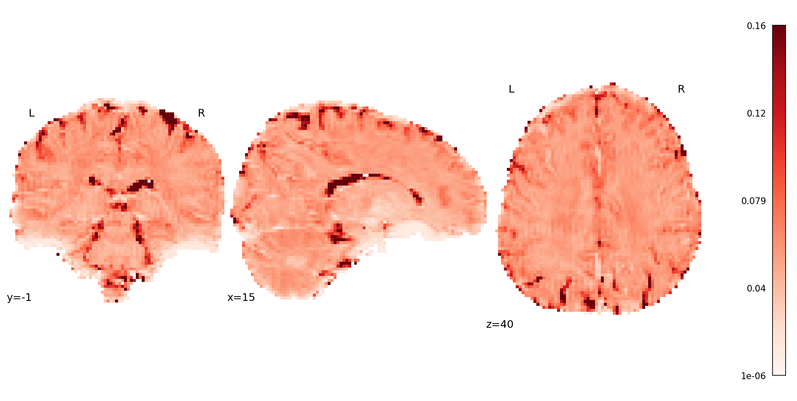
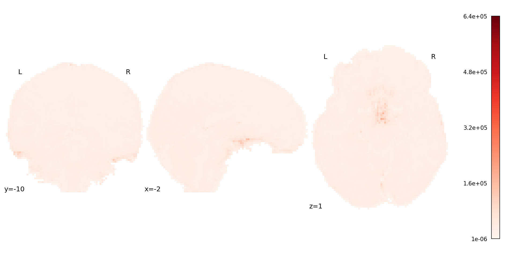
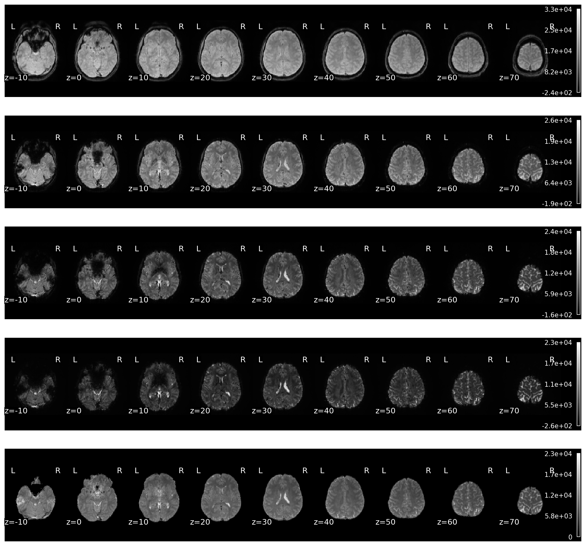
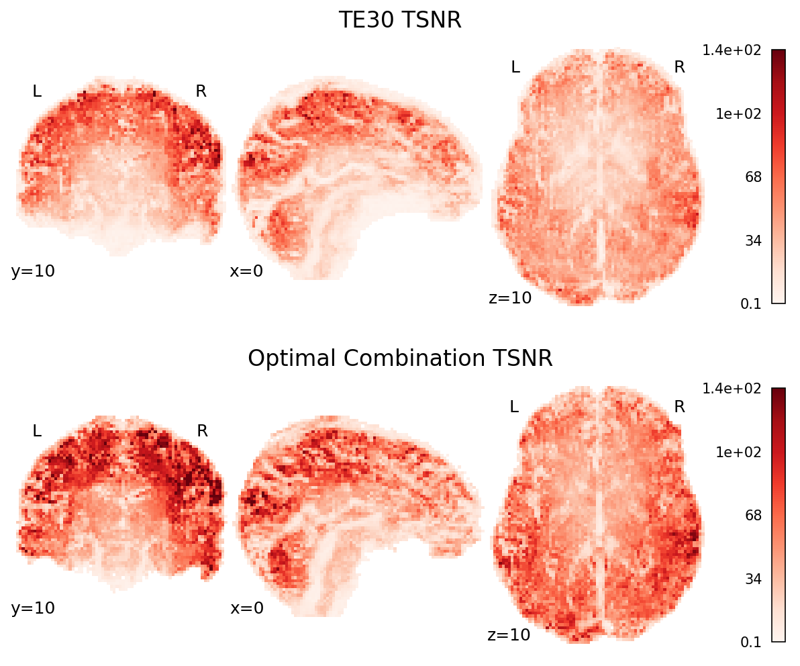
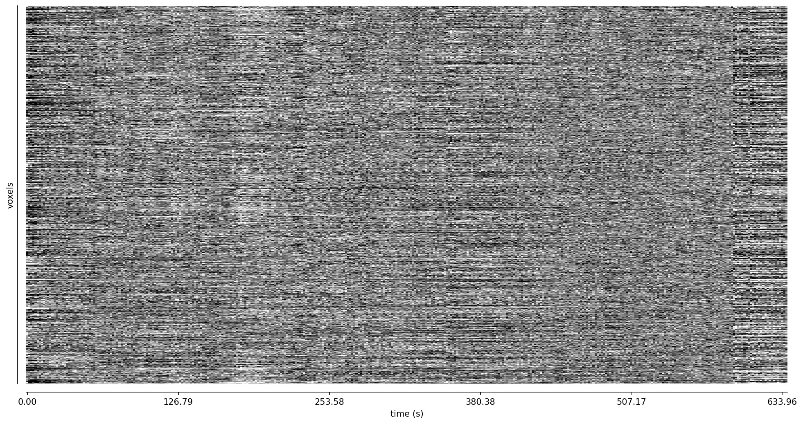
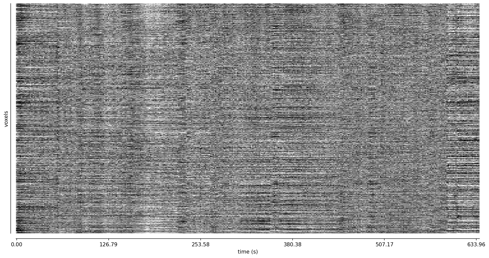

Optimal combination with t2smap#
Use t2smap [DuPre et al., 2021] to combine data.
import json
import os
from glob import glob
import matplotlib.pyplot as plt
import nibabel as nb
import numpy as np
from book_utils import glue_figure, load_pafin
from nilearn import image, masking, plotting
from tedana import workflows
data_path = os.path.abspath('../data')
/mnt/c/Users/tsalo/Documents/ME-ICA/multi-echo-data-analysis/meda/lib/python3.10/site-packages/tqdm/auto.py:21: TqdmWarning: IProgress not found. Please update jupyter and ipywidgets. See https://ipywidgets.readthedocs.io/en/stable/user_install.html
from .autonotebook import tqdm as notebook_tqdm
data = load_pafin(data_path)
out_dir = os.path.join(data_path, "t2smap")
workflows.t2smap_workflow(
data['echo_files'],
data['echo_times'],
out_dir=out_dir,
mask=data['mask'],
prefix="sub-24053_ses-1_task-rat_dir-PA_run-01",
fittype="curvefit",
overwrite=True,
)
Show code cell output
Hide code cell output
INFO t2smap:t2smap_workflow:365 Using output directory: /mnt/c/Users/tsalo/Documents/ME-ICA/multi-echo-data-analysis/data/t2smap
INFO utils:check_te_values:792 TE values appear to be in seconds. Converting to milliseconds for internal use.
INFO utils:load_mask:916 Using user-defined mask
INFO t2smap:t2smap_workflow:414 Loading input data: ['/mnt/c/Users/tsalo/Documents/ME-ICA/multi-echo-data-analysis/data/ds006185/sub-24053/ses-1/func/sub-24053_ses-1_task-rat_dir-PA_run-01_echo-1_part-mag_desc-preproc_bold.nii.gz', '/mnt/c/Users/tsalo/Documents/ME-ICA/multi-echo-data-analysis/data/ds006185/sub-24053/ses-1/func/sub-24053_ses-1_task-rat_dir-PA_run-01_echo-2_part-mag_desc-preproc_bold.nii.gz', '/mnt/c/Users/tsalo/Documents/ME-ICA/multi-echo-data-analysis/data/ds006185/sub-24053/ses-1/func/sub-24053_ses-1_task-rat_dir-PA_run-01_echo-3_part-mag_desc-preproc_bold.nii.gz', '/mnt/c/Users/tsalo/Documents/ME-ICA/multi-echo-data-analysis/data/ds006185/sub-24053/ses-1/func/sub-24053_ses-1_task-rat_dir-PA_run-01_echo-4_part-mag_desc-preproc_bold.nii.gz', '/mnt/c/Users/tsalo/Documents/ME-ICA/multi-echo-data-analysis/data/ds006185/sub-24053/ses-1/func/sub-24053_ses-1_task-rat_dir-PA_run-01_echo-5_part-mag_desc-preproc_bold.nii.gz']
INFO utils:make_adaptive_mask:167 Echo-wise intensity thresholds for adaptive mask: [5390.2476 3376.5105 1811.7682 1076.2314 610.8774]
WARNING utils:make_adaptive_mask:195 9757 voxels in user-defined mask do not have good signal. Removing voxels from mask.
INFO t2smap:t2smap_workflow:458 Computing T2* map
2-echo monoexponential: 0%| | 0/14135 [00:00<?, ?it/s]
2-echo monoexponential: 1%|▉ | 106/14135 [00:00<00:13, 1054.43it/s]
2-echo monoexponential: 2%|██▏ | 245/14135 [00:00<00:11, 1250.31it/s]
2-echo monoexponential: 3%|███▌ | 392/14135 [00:00<00:10, 1348.67it/s]
2-echo monoexponential: 4%|█████▎ | 583/14135 [00:00<00:08, 1568.28it/s]
2-echo monoexponential: 5%|███████ | 773/14135 [00:00<00:07, 1684.63it/s]
2-echo monoexponential: 7%|████████▋ | 949/14135 [00:00<00:07, 1707.91it/s]
2-echo monoexponential: 8%|██████████▎ | 1132/14135 [00:00<00:07, 1746.69it/s]
2-echo monoexponential: 9%|███████████▉ | 1321/14135 [00:00<00:07, 1791.63it/s]
2-echo monoexponential: 11%|█████████████▋ | 1508/14135 [00:00<00:06, 1815.99it/s]
2-echo monoexponential: 12%|███████████████▎ | 1693/14135 [00:01<00:06, 1823.02it/s]
2-echo monoexponential: 13%|█████████████████ | 1882/14135 [00:01<00:06, 1841.10it/s]
2-echo monoexponential: 15%|██████████████████▋ | 2067/14135 [00:01<00:06, 1812.12it/s]
2-echo monoexponential: 16%|████████████████████▎ | 2249/14135 [00:01<00:06, 1698.30it/s]
2-echo monoexponential: 17%|██████████████████████ | 2430/14135 [00:01<00:06, 1730.03it/s]
2-echo monoexponential: 19%|███████████████████████▋ | 2618/14135 [00:01<00:06, 1772.96it/s]
2-echo monoexponential: 20%|█████████████████████████▎ | 2797/14135 [00:01<00:06, 1634.96it/s]
2-echo monoexponential: 21%|███████████████████████████ | 2983/14135 [00:01<00:06, 1695.47it/s]
2-echo monoexponential: 22%|████████████████████████████▌ | 3160/14135 [00:01<00:06, 1713.71it/s]
2-echo monoexponential: 24%|██████████████████████████████▏ | 3334/14135 [00:01<00:06, 1697.35it/s]
2-echo monoexponential: 25%|███████████████████████████████▊ | 3512/14135 [00:02<00:06, 1719.37it/s]
2-echo monoexponential: 26%|█████████████████████████████████▍ | 3689/14135 [00:02<00:06, 1732.73it/s]
2-echo monoexponential: 27%|███████████████████████████████████ | 3869/14135 [00:02<00:05, 1752.00it/s]
2-echo monoexponential: 29%|████████████████████████████████████▋ | 4045/14135 [00:02<00:05, 1752.10it/s]
2-echo monoexponential: 30%|██████████████████████████████████████▎ | 4228/14135 [00:02<00:05, 1774.25it/s]
2-echo monoexponential: 31%|███████████████████████████████████████▉ | 4406/14135 [00:02<00:05, 1774.97it/s]
2-echo monoexponential: 32%|█████████████████████████████████████████▌ | 4589/14135 [00:02<00:05, 1789.50it/s]
2-echo monoexponential: 34%|███████████████████████████████████████████▏ | 4769/14135 [00:02<00:05, 1792.45it/s]
2-echo monoexponential: 35%|████████████████████████████████████████████▊ | 4949/14135 [00:02<00:05, 1788.29it/s]
2-echo monoexponential: 36%|██████████████████████████████████████████████▍ | 5131/14135 [00:02<00:05, 1793.44it/s]
2-echo monoexponential: 38%|████████████████████████████████████████████████ | 5314/14135 [00:03<00:04, 1802.61it/s]
2-echo monoexponential: 39%|█████████████████████████████████████████████████▊ | 5495/14135 [00:03<00:04, 1793.92it/s]
2-echo monoexponential: 40%|███████████████████████████████████████████████████▍ | 5675/14135 [00:03<00:04, 1762.05it/s]
2-echo monoexponential: 41%|████████████████████████████████████████████████████▉ | 5852/14135 [00:03<00:05, 1628.34it/s]
2-echo monoexponential: 43%|██████████████████████████████████████████████████████▌ | 6028/14135 [00:03<00:04, 1664.33it/s]
2-echo monoexponential: 44%|████████████████████████████████████████████████████████ | 6197/14135 [00:03<00:05, 1565.19it/s]
2-echo monoexponential: 45%|█████████████████████████████████████████████████████████▋ | 6367/14135 [00:03<00:04, 1602.08it/s]
2-echo monoexponential: 46%|███████████████████████████████████████████████████████████▎ | 6546/14135 [00:03<00:04, 1652.73it/s]
2-echo monoexponential: 47%|████████████████████████████████████████████████████████████▊ | 6714/14135 [00:03<00:04, 1659.11it/s]
2-echo monoexponential: 49%|██████████████████████████████████████████████████████████████▎ | 6882/14135 [00:04<00:04, 1602.42it/s]
2-echo monoexponential: 50%|███████████████████████████████████████████████████████████████▊ | 7044/14135 [00:04<00:04, 1594.91it/s]
2-echo monoexponential: 51%|█████████████████████████████████████████████████████████████████▎ | 7213/14135 [00:04<00:04, 1620.13it/s]
2-echo monoexponential: 52%|██████████████████████████████████████████████████████████████████▊ | 7382/14135 [00:04<00:04, 1640.39it/s]
2-echo monoexponential: 53%|████████████████████████████████████████████████████████████████████▍ | 7558/14135 [00:04<00:03, 1674.26it/s]
2-echo monoexponential: 55%|█████████████████████████████████████████████████████████████████████▉ | 7727/14135 [00:04<00:03, 1677.99it/s]
2-echo monoexponential: 56%|███████████████████████████████████████████████████████████████████████▌ | 7905/14135 [00:04<00:03, 1707.50it/s]
2-echo monoexponential: 57%|█████████████████████████████████████████████████████████████████████████▏ | 8076/14135 [00:04<00:03, 1585.86it/s]
2-echo monoexponential: 58%|██████████████████████████████████████████████████████████████████████████▋ | 8245/14135 [00:04<00:03, 1614.96it/s]
2-echo monoexponential: 60%|████████████████████████████████████████████████████████████████████████████▏ | 8419/14135 [00:04<00:03, 1650.24it/s]
2-echo monoexponential: 61%|█████████████████████████████████████████████████████████████████████████████▊ | 8586/14135 [00:05<00:03, 1650.93it/s]
2-echo monoexponential: 62%|███████████████████████████████████████████████████████████████████████████████▎ | 8753/14135 [00:05<00:03, 1655.32it/s]
2-echo monoexponential: 63%|████████████████████████████████████████████████████████████████████████████████▊ | 8928/14135 [00:05<00:03, 1683.21it/s]
2-echo monoexponential: 64%|██████████████████████████████████████████████████████████████████████████████████▍ | 9099/14135 [00:05<00:02, 1689.04it/s]
2-echo monoexponential: 66%|███████████████████████████████████████████████████████████████████████████████████▉ | 9269/14135 [00:05<00:03, 1583.58it/s]
2-echo monoexponential: 67%|█████████████████████████████████████████████████████████████████████████████████████▍ | 9441/14135 [00:05<00:02, 1621.11it/s]
2-echo monoexponential: 68%|██████████████████████████████████████████████████████████████████████████████████████▉ | 9605/14135 [00:05<00:02, 1622.24it/s]
2-echo monoexponential: 69%|████████████████████████████████████████████████████████████████████████████████████████▌ | 9783/14135 [00:05<00:02, 1665.64it/s]
2-echo monoexponential: 70%|██████████████████████████████████████████████████████████████████████████████████████████ | 9951/14135 [00:05<00:02, 1567.47it/s]
2-echo monoexponential: 72%|██████████████████████████████████████████████████████████████████████████████████████████▉ | 10122/14135 [00:06<00:02, 1606.53it/s]
2-echo monoexponential: 73%|████████████████████████████████████████████████████████████████████████████████████████████▍ | 10286/14135 [00:06<00:02, 1535.23it/s]
2-echo monoexponential: 74%|█████████████████████████████████████████████████████████████████████████████████████████████▊ | 10441/14135 [00:06<00:02, 1531.49it/s]
2-echo monoexponential: 75%|███████████████████████████████████████████████████████████████████████████████████████████████▏ | 10598/14135 [00:06<00:02, 1542.35it/s]
2-echo monoexponential: 76%|████████████████████████████████████████████████████████████████████████████████████████████████▌ | 10753/14135 [00:06<00:02, 1484.34it/s]
2-echo monoexponential: 77%|██████████████████████████████████████████████████████████████████████████████████████████████████▏ | 10930/14135 [00:06<00:02, 1564.04it/s]
2-echo monoexponential: 79%|███████████████████████████████████████████████████████████████████████████████████████████████████▊ | 11106/14135 [00:06<00:01, 1617.30it/s]
2-echo monoexponential: 80%|█████████████████████████████████████████████████████████████████████████████████████████████████████▏ | 11269/14135 [00:06<00:01, 1538.74it/s]
2-echo monoexponential: 81%|██████████████████████████████████████████████████████████████████████████████████████████████████████▊ | 11446/14135 [00:06<00:01, 1603.58it/s]
2-echo monoexponential: 82%|████████████████████████████████████████████████████████████████████████████████████████████████████████▍ | 11626/14135 [00:06<00:01, 1658.16it/s]
2-echo monoexponential: 84%|██████████████████████████████████████████████████████████████████████████████████████████████████████████ | 11803/14135 [00:07<00:01, 1689.50it/s]
2-echo monoexponential: 85%|███████████████████████████████████████████████████████████████████████████████████████████████████████████▌ | 11973/14135 [00:07<00:01, 1608.67it/s]
2-echo monoexponential: 86%|█████████████████████████████████████████████████████████████████████████████████████████████████████████████▏ | 12151/14135 [00:07<00:01, 1657.03it/s]
2-echo monoexponential: 87%|██████████████████████████████████████████████████████████████████████████████████████████████████████████████▋ | 12325/14135 [00:07<00:01, 1680.07it/s]
2-echo monoexponential: 89%|████████████████████████████████████████████████████████████████████████████████████████████████████████████████▍ | 12510/14135 [00:07<00:00, 1728.93it/s]
2-echo monoexponential: 90%|█████████████████████████████████████████████████████████████████████████████████████████████████████████████████▉ | 12685/14135 [00:07<00:00, 1734.77it/s]
2-echo monoexponential: 91%|███████████████████████████████████████████████████████████████████████████████████████████████████████████████████▋ | 12873/14135 [00:07<00:00, 1776.76it/s]
2-echo monoexponential: 92%|█████████████████████████████████████████████████████████████████████████████████████████████████████████████████████▎ | 13058/14135 [00:07<00:00, 1797.91it/s]
2-echo monoexponential: 94%|██████████████████████████████████████████████████████████████████████████████████████████████████████████████████████▉ | 13239/14135 [00:07<00:00, 1790.26it/s]
2-echo monoexponential: 95%|████████████████████████████████████████████████████████████████████████████████████████████████████████████████████████▌ | 13419/14135 [00:08<00:00, 1740.73it/s]
2-echo monoexponential: 96%|██████████████████████████████████████████████████████████████████████████████████████████████████████████████████████████▏ | 13599/14135 [00:08<00:00, 1757.94it/s]
2-echo monoexponential: 97%|███████████████████████████████████████████████████████████████████████████████████████████████████████████████████████████▊ | 13779/14135 [00:08<00:00, 1769.64it/s]
2-echo monoexponential: 99%|█████████████████████████████████████████████████████████████████████████████████████████████████████████████████████████████▍ | 13959/14135 [00:08<00:00, 1776.73it/s]
2-echo monoexponential: 100%|███████████████████████████████████████████████████████████████████████████████████████████████████████████████████████████████| 14135/14135 [00:08<00:00, 1679.05it/s]
3-echo monoexponential: 0%| | 0/7655 [00:00<?, ?it/s]
3-echo monoexponential: 1%|█▉ | 111/7655 [00:00<00:06, 1101.19it/s]
3-echo monoexponential: 3%|███▊ | 222/7655 [00:00<00:06, 1087.34it/s]
3-echo monoexponential: 4%|█████▋ | 332/7655 [00:00<00:06, 1092.02it/s]
3-echo monoexponential: 6%|███████▌ | 442/7655 [00:00<00:06, 1092.14it/s]
3-echo monoexponential: 7%|█████████▎ | 552/7655 [00:00<00:06, 1084.75it/s]
3-echo monoexponential: 9%|███████████▎ | 669/7655 [00:00<00:06, 1110.50it/s]
3-echo monoexponential: 10%|█████████████▎ | 781/7655 [00:00<00:06, 1110.52it/s]
3-echo monoexponential: 12%|███████████████▏ | 893/7655 [00:00<00:06, 1106.21it/s]
3-echo monoexponential: 13%|████████████████▉ | 1004/7655 [00:00<00:06, 1106.75it/s]
3-echo monoexponential: 15%|██████████████████▊ | 1115/7655 [00:01<00:05, 1101.81it/s]
3-echo monoexponential: 16%|████████████████████▋ | 1226/7655 [00:01<00:05, 1100.48it/s]
3-echo monoexponential: 17%|██████████████████████▌ | 1337/7655 [00:01<00:05, 1098.96it/s]
3-echo monoexponential: 19%|████████████████████████▍ | 1450/7655 [00:01<00:05, 1107.33it/s]
3-echo monoexponential: 20%|██████████████████████████▍ | 1566/7655 [00:01<00:05, 1122.39it/s]
3-echo monoexponential: 22%|████████████████████████████▎ | 1679/7655 [00:01<00:05, 1119.51it/s]
3-echo monoexponential: 23%|██████████████████████████████▏ | 1792/7655 [00:01<00:05, 1121.48it/s]
3-echo monoexponential: 25%|████████████████████████████████▏ | 1909/7655 [00:01<00:05, 1133.54it/s]
3-echo monoexponential: 26%|██████████████████████████████████ | 2023/7655 [00:01<00:05, 1124.76it/s]
3-echo monoexponential: 28%|███████████████████████████████████▉ | 2136/7655 [00:01<00:04, 1112.03it/s]
3-echo monoexponential: 29%|█████████████████████████████████████▉ | 2248/7655 [00:02<00:04, 1097.10it/s]
3-echo monoexponential: 31%|███████████████████████████████████████▋ | 2358/7655 [00:02<00:04, 1060.88it/s]
3-echo monoexponential: 32%|█████████████████████████████████████████▌ | 2466/7655 [00:02<00:04, 1064.87it/s]
3-echo monoexponential: 34%|███████████████████████████████████████████▍ | 2579/7655 [00:02<00:04, 1081.71it/s]
3-echo monoexponential: 35%|█████████████████████████████████████████████▎ | 2690/7655 [00:02<00:04, 1086.91it/s]
3-echo monoexponential: 37%|███████████████████████████████████████████████▏ | 2802/7655 [00:02<00:04, 1096.02it/s]
3-echo monoexponential: 38%|█████████████████████████████████████████████████ | 2912/7655 [00:02<00:04, 1096.99it/s]
3-echo monoexponential: 40%|███████████████████████████████████████████████████ | 3028/7655 [00:02<00:04, 1115.46it/s]
3-echo monoexponential: 41%|████████████████████████████████████████████████████▉ | 3140/7655 [00:02<00:04, 1116.74it/s]
3-echo monoexponential: 43%|██████████████████████████████████████████████████████▊ | 3254/7655 [00:02<00:03, 1123.65it/s]
3-echo monoexponential: 44%|████████████████████████████████████████████████████████▊ | 3374/7655 [00:03<00:03, 1144.52it/s]
3-echo monoexponential: 46%|██████████████████████████████████████████████████████████▊ | 3490/7655 [00:03<00:03, 1148.40it/s]
3-echo monoexponential: 47%|████████████████████████████████████████████████████████████▊ | 3605/7655 [00:03<00:03, 1137.42it/s]
3-echo monoexponential: 49%|██████████████████████████████████████████████████████████████▋ | 3719/7655 [00:03<00:03, 1130.99it/s]
3-echo monoexponential: 50%|████████████████████████████████████████████████████████████████▋ | 3835/7655 [00:03<00:03, 1139.25it/s]
3-echo monoexponential: 52%|██████████████████████████████████████████████████████████████████▌ | 3949/7655 [00:03<00:03, 1119.83it/s]
3-echo monoexponential: 53%|████████████████████████████████████████████████████████████████████▌ | 4071/7655 [00:03<00:03, 1147.42it/s]
3-echo monoexponential: 55%|██████████████████████████████████████████████████████████████████████▌ | 4186/7655 [00:03<00:03, 1101.71it/s]
3-echo monoexponential: 56%|████████████████████████████████████████████████████████████████████████▍ | 4298/7655 [00:03<00:03, 1105.17it/s]
3-echo monoexponential: 58%|██████████████████████████████████████████████████████████████████████████▎ | 4409/7655 [00:03<00:02, 1098.15it/s]
3-echo monoexponential: 59%|████████████████████████████████████████████████████████████████████████████▏ | 4524/7655 [00:04<00:02, 1112.98it/s]
3-echo monoexponential: 61%|██████████████████████████████████████████████████████████████████████████████▏ | 4639/7655 [00:04<00:02, 1122.77it/s]
3-echo monoexponential: 62%|████████████████████████████████████████████████████████████████████████████████▏ | 4759/7655 [00:04<00:02, 1145.00it/s]
3-echo monoexponential: 64%|██████████████████████████████████████████████████████████████████████████████████▏ | 4874/7655 [00:04<00:02, 1133.53it/s]
3-echo monoexponential: 65%|████████████████████████████████████████████████████████████████████████████████████ | 4988/7655 [00:04<00:02, 1130.01it/s]
3-echo monoexponential: 67%|█████████████████████████████████████████████████████████████████████████████████████▉ | 5102/7655 [00:04<00:02, 1125.27it/s]
3-echo monoexponential: 68%|███████████████████████████████████████████████████████████████████████████████████████▉ | 5215/7655 [00:04<00:02, 1126.63it/s]
3-echo monoexponential: 70%|█████████████████████████████████████████████████████████████████████████████████████████▊ | 5328/7655 [00:04<00:02, 1118.57it/s]
3-echo monoexponential: 71%|███████████████████████████████████████████████████████████████████████████████████████████▊ | 5447/7655 [00:04<00:01, 1138.31it/s]
3-echo monoexponential: 73%|█████████████████████████████████████████████████████████████████████████████████████████████▋ | 5561/7655 [00:04<00:01, 1104.26it/s]
3-echo monoexponential: 74%|███████████████████████████████████████████████████████████████████████████████████████████████▌ | 5672/7655 [00:05<00:01, 1098.65it/s]
3-echo monoexponential: 76%|█████████████████████████████████████████████████████████████████████████████████████████████████▍ | 5783/7655 [00:05<00:01, 1096.09it/s]
3-echo monoexponential: 77%|███████████████████████████████████████████████████████████████████████████████████████████████████▎ | 5893/7655 [00:05<00:01, 1080.06it/s]
3-echo monoexponential: 78%|█████████████████████████████████████████████████████████████████████████████████████████████████████▏ | 6006/7655 [00:05<00:01, 1093.80it/s]
3-echo monoexponential: 80%|███████████████████████████████████████████████████████████████████████████████████████████████████████ | 6117/7655 [00:05<00:01, 1096.98it/s]
3-echo monoexponential: 81%|█████████████████████████████████████████████████████████████████████████████████████████████████████████ | 6231/7655 [00:05<00:01, 1109.34it/s]
3-echo monoexponential: 83%|██████████████████████████████████████████████████████████████████████████████████████████████████████████▉ | 6343/7655 [00:05<00:01, 1108.78it/s]
3-echo monoexponential: 84%|████████████████████████████████████████████████████████████████████████████████████████████████████████████▊ | 6455/7655 [00:05<00:01, 1110.32it/s]
3-echo monoexponential: 86%|██████████████████████████████████████████████████████████████████████████████████████████████████████████████▋ | 6567/7655 [00:05<00:00, 1099.06it/s]
3-echo monoexponential: 87%|████████████████████████████████████████████████████████████████████████████████████████████████████████████████▌ | 6677/7655 [00:06<00:00, 1095.76it/s]
3-echo monoexponential: 89%|██████████████████████████████████████████████████████████████████████████████████████████████████████████████████▎ | 6787/7655 [00:06<00:00, 1086.35it/s]
3-echo monoexponential: 90%|████████████████████████████████████████████████████████████████████████████████████████████████████████████████████▏ | 6898/7655 [00:06<00:00, 1090.84it/s]
3-echo monoexponential: 92%|██████████████████████████████████████████████████████████████████████████████████████████████████████████████████████ | 7008/7655 [00:06<00:00, 1087.96it/s]
3-echo monoexponential: 93%|███████████████████████████████████████████████████████████████████████████████████████████████████████████████████████▉ | 7119/7655 [00:06<00:00, 1093.77it/s]
3-echo monoexponential: 95%|█████████████████████████████████████████████████████████████████████████████████████████████████████████████████████████▉ | 7238/7655 [00:06<00:00, 1120.26it/s]
3-echo monoexponential: 96%|███████████████████████████████████████████████████████████████████████████████████████████████████████████████████████████▉ | 7356/7655 [00:06<00:00, 1137.08it/s]
3-echo monoexponential: 98%|█████████████████████████████████████████████████████████████████████████████████████████████████████████████████████████████▉ | 7473/7655 [00:06<00:00, 1145.04it/s]
3-echo monoexponential: 99%|███████████████████████████████████████████████████████████████████████████████████████████████████████████████████████████████▊ | 7588/7655 [00:06<00:00, 1130.02it/s]
3-echo monoexponential: 100%|█████████████████████████████████████████████████████████████████████████████████████████████████████████████████████████████████| 7655/7655 [00:06<00:00, 1111.54it/s]
4-echo monoexponential: 0%| | 0/8608 [00:00<?, ?it/s]
4-echo monoexponential: 1%|█▌ | 99/8608 [00:00<00:08, 980.13it/s]
4-echo monoexponential: 2%|███ | 198/8608 [00:00<00:08, 977.06it/s]
4-echo monoexponential: 3%|████▌ | 296/8608 [00:00<00:08, 965.44it/s]
4-echo monoexponential: 5%|██████ | 398/8608 [00:00<00:08, 986.70it/s]
4-echo monoexponential: 6%|███████▌ | 497/8608 [00:00<00:08, 979.25it/s]
4-echo monoexponential: 7%|█████████ | 596/8608 [00:00<00:08, 981.29it/s]
4-echo monoexponential: 8%|██████████▌ | 695/8608 [00:00<00:08, 983.09it/s]
4-echo monoexponential: 9%|████████████▏ | 797/8608 [00:00<00:07, 990.28it/s]
4-echo monoexponential: 10%|█████████████▋ | 897/8608 [00:00<00:07, 985.01it/s]
4-echo monoexponential: 12%|███████████████▏ | 996/8608 [00:01<00:07, 974.73it/s]
4-echo monoexponential: 13%|████████████████▌ | 1094/8608 [00:01<00:07, 971.77it/s]
4-echo monoexponential: 14%|██████████████████ | 1192/8608 [00:01<00:07, 953.81it/s]
4-echo monoexponential: 15%|███████████████████▍ | 1291/8608 [00:01<00:07, 962.26it/s]
4-echo monoexponential: 16%|████████████████████▉ | 1389/8608 [00:01<00:07, 965.17it/s]
4-echo monoexponential: 17%|██████████████████████▌ | 1491/8608 [00:01<00:07, 978.51it/s]
4-echo monoexponential: 18%|████████████████████████ | 1590/8608 [00:01<00:07, 979.66it/s]
4-echo monoexponential: 20%|█████████████████████████▍ | 1688/8608 [00:01<00:07, 976.87it/s]
4-echo monoexponential: 21%|███████████████████████████ | 1788/8608 [00:01<00:06, 980.88it/s]
4-echo monoexponential: 22%|████████████████████████████▍ | 1887/8608 [00:01<00:06, 980.48it/s]
4-echo monoexponential: 23%|█████████████████████████████▉ | 1986/8608 [00:02<00:06, 975.31it/s]
4-echo monoexponential: 24%|███████████████████████████████▍ | 2084/8608 [00:02<00:06, 963.01it/s]
4-echo monoexponential: 25%|████████████████████████████████▉ | 2181/8608 [00:02<00:06, 933.09it/s]
4-echo monoexponential: 26%|██████████████████████████████████▎ | 2275/8608 [00:02<00:07, 901.25it/s]
4-echo monoexponential: 28%|███████████████████████████████████▊ | 2368/8608 [00:02<00:06, 909.08it/s]
4-echo monoexponential: 29%|█████████████████████████████████████▏ | 2461/8608 [00:02<00:06, 914.29it/s]
4-echo monoexponential: 30%|██████████████████████████████████████▌ | 2553/8608 [00:02<00:06, 878.02it/s]
4-echo monoexponential: 31%|███████████████████████████████████████▉ | 2643/8608 [00:02<00:06, 883.96it/s]
4-echo monoexponential: 32%|█████████████████████████████████████████▎ | 2737/8608 [00:02<00:06, 900.00it/s]
4-echo monoexponential: 33%|██████████████████████████████████████████▋ | 2828/8608 [00:02<00:06, 893.37it/s]
4-echo monoexponential: 34%|████████████████████████████████████████████▏ | 2923/8608 [00:03<00:06, 908.44it/s]
4-echo monoexponential: 35%|█████████████████████████████████████████████▌ | 3015/8608 [00:03<00:06, 889.30it/s]
4-echo monoexponential: 36%|██████████████████████████████████████████████▉ | 3111/8608 [00:03<00:06, 907.48it/s]
4-echo monoexponential: 37%|████████████████████████████████████████████████▎ | 3202/8608 [00:03<00:06, 891.18it/s]
4-echo monoexponential: 38%|█████████████████████████████████████████████████▋ | 3292/8608 [00:03<00:06, 879.74it/s]
4-echo monoexponential: 39%|███████████████████████████████████████████████████▏ | 3393/8608 [00:03<00:05, 915.53it/s]
4-echo monoexponential: 41%|████████████████████████████████████████████████████▋ | 3492/8608 [00:03<00:05, 936.19it/s]
4-echo monoexponential: 42%|██████████████████████████████████████████████████████▏ | 3586/8608 [00:03<00:05, 908.80it/s]
4-echo monoexponential: 43%|███████████████████████████████████████████████████████▌ | 3678/8608 [00:03<00:05, 889.77it/s]
4-echo monoexponential: 44%|████████████████████████████████████████████████████████▉ | 3768/8608 [00:04<00:05, 877.86it/s]
4-echo monoexponential: 45%|██████████████████████████████████████████████████████████▏ | 3856/8608 [00:04<00:05, 876.51it/s]
4-echo monoexponential: 46%|███████████████████████████████████████████████████████████▌ | 3944/8608 [00:04<00:05, 855.17it/s]
4-echo monoexponential: 47%|█████████████████████████████████████████████████████████████ | 4040/8608 [00:04<00:05, 883.13it/s]
4-echo monoexponential: 48%|██████████████████████████████████████████████████████████████▎ | 4129/8608 [00:04<00:05, 867.03it/s]
4-echo monoexponential: 49%|███████████████████████████████████████████████████████████████▋ | 4216/8608 [00:04<00:05, 862.56it/s]
4-echo monoexponential: 50%|████████████████████████████████████████████████████████████████▉ | 4303/8608 [00:04<00:05, 852.70it/s]
4-echo monoexponential: 51%|██████████████████████████████████████████████████████████████████▍ | 4396/8608 [00:04<00:04, 873.00it/s]
4-echo monoexponential: 52%|███████████████████████████████████████████████████████████████████▋ | 4484/8608 [00:04<00:04, 858.14it/s]
4-echo monoexponential: 53%|█████████████████████████████████████████████████████████████████████ | 4577/8608 [00:04<00:04, 875.73it/s]
4-echo monoexponential: 54%|██████████████████████████████████████████████████████████████████████▌ | 4671/8608 [00:05<00:04, 892.03it/s]
4-echo monoexponential: 55%|███████████████████████████████████████████████████████████████████████▉ | 4766/8608 [00:05<00:04, 908.24it/s]
4-echo monoexponential: 56%|█████████████████████████████████████████████████████████████████████████▎ | 4857/8608 [00:05<00:04, 891.99it/s]
4-echo monoexponential: 58%|██████████████████████████████████████████████████████████████████████████▉ | 4958/8608 [00:05<00:03, 925.34it/s]
4-echo monoexponential: 59%|████████████████████████████████████████████████████████████████████████████▎ | 5051/8608 [00:05<00:03, 913.52it/s]
4-echo monoexponential: 60%|█████████████████████████████████████████████████████████████████████████████▋ | 5146/8608 [00:05<00:03, 923.02it/s]
4-echo monoexponential: 61%|███████████████████████████████████████████████████████████████████████████████▏ | 5245/8608 [00:05<00:03, 941.28it/s]
4-echo monoexponential: 62%|████████████████████████████████████████████████████████████████████████████████▋ | 5340/8608 [00:05<00:03, 939.89it/s]
4-echo monoexponential: 63%|██████████████████████████████████████████████████████████████████████████████████▏ | 5438/8608 [00:05<00:03, 945.68it/s]
4-echo monoexponential: 64%|███████████████████████████████████████████████████████████████████████████████████▌ | 5533/8608 [00:05<00:03, 941.04it/s]
4-echo monoexponential: 65%|████████████████████████████████████████████████████████████████████████████████████▉ | 5628/8608 [00:06<00:03, 925.13it/s]
4-echo monoexponential: 66%|██████████████████████████████████████████████████████████████████████████████████████▍ | 5723/8608 [00:06<00:03, 930.11it/s]
4-echo monoexponential: 68%|███████████████████████████████████████████████████████████████████████████████████████▊ | 5817/8608 [00:06<00:03, 927.00it/s]
4-echo monoexponential: 69%|█████████████████████████████████████████████████████████████████████████████████████████▎ | 5917/8608 [00:06<00:02, 946.97it/s]
4-echo monoexponential: 70%|██████████████████████████████████████████████████████████████████████████████████████████▊ | 6012/8608 [00:06<00:02, 938.13it/s]
4-echo monoexponential: 71%|████████████████████████████████████████████████████████████████████████████████████████████▎ | 6111/8608 [00:06<00:02, 951.48it/s]
4-echo monoexponential: 72%|█████████████████████████████████████████████████████████████████████████████████████████████▋ | 6207/8608 [00:06<00:02, 951.02it/s]
4-echo monoexponential: 73%|███████████████████████████████████████████████████████████████████████████████████████████████▎ | 6308/8608 [00:06<00:02, 968.40it/s]
4-echo monoexponential: 74%|████████████████████████████████████████████████████████████████████████████████████████████████▊ | 6412/8608 [00:06<00:02, 988.42it/s]
4-echo monoexponential: 76%|██████████████████████████████████████████████████████████████████████████████████████████████████▎ | 6511/8608 [00:07<00:02, 963.52it/s]
4-echo monoexponential: 77%|███████████████████████████████████████████████████████████████████████████████████████████████████▊ | 6608/8608 [00:07<00:02, 956.00it/s]
4-echo monoexponential: 78%|█████████████████████████████████████████████████████████████████████████████████████████████████████▏ | 6704/8608 [00:07<00:02, 951.99it/s]
4-echo monoexponential: 79%|██████████████████████████████████████████████████████████████████████████████████████████████████████▋ | 6800/8608 [00:07<00:01, 946.14it/s]
4-echo monoexponential: 80%|████████████████████████████████████████████████████████████████████████████████████████████████████████▏ | 6895/8608 [00:07<00:01, 933.93it/s]
4-echo monoexponential: 81%|█████████████████████████████████████████████████████████████████████████████████████████████████████████▌ | 6989/8608 [00:07<00:01, 922.90it/s]
4-echo monoexponential: 82%|██████████████████████████████████████████████████████████████████████████████████████████████████████████▉ | 7085/8608 [00:07<00:01, 931.29it/s]
4-echo monoexponential: 83%|████████████████████████████████████████████████████████████████████████████████████████████████████████████▌ | 7186/8608 [00:07<00:01, 950.89it/s]
4-echo monoexponential: 85%|█████████████████████████████████████████████████████████████████████████████████████████████████████████████▉ | 7282/8608 [00:07<00:01, 945.78it/s]
4-echo monoexponential: 86%|███████████████████████████████████████████████████████████████████████████████████████████████████████████████▍ | 7377/8608 [00:07<00:01, 942.99it/s]
4-echo monoexponential: 87%|████████████████████████████████████████████████████████████████████████████████████████████████████████████████▊ | 7472/8608 [00:08<00:01, 933.39it/s]
4-echo monoexponential: 88%|██████████████████████████████████████████████████████████████████████████████████████████████████████████████████▎ | 7570/8608 [00:08<00:01, 944.36it/s]
4-echo monoexponential: 89%|███████████████████████████████████████████████████████████████████████████████████████████████████████████████████▊ | 7665/8608 [00:08<00:01, 928.42it/s]
4-echo monoexponential: 90%|█████████████████████████████████████████████████████████████████████████████████████████████████████████████████████▏ | 7761/8608 [00:08<00:00, 935.02it/s]
4-echo monoexponential: 91%|██████████████████████████████████████████████████████████████████████████████████████████████████████████████████████▋ | 7857/8608 [00:08<00:00, 941.60it/s]
4-echo monoexponential: 92%|████████████████████████████████████████████████████████████████████████████████████████████████████████████████████████▏ | 7956/8608 [00:08<00:00, 954.70it/s]
4-echo monoexponential: 94%|█████████████████████████████████████████████████████████████████████████████████████████████████████████████████████████▊ | 8062/8608 [00:08<00:00, 984.84it/s]
4-echo monoexponential: 95%|███████████████████████████████████████████████████████████████████████████████████████████████████████████████████████████▏ | 8161/8608 [00:08<00:00, 984.26it/s]
4-echo monoexponential: 96%|████████████████████████████████████████████████████████████████████████████████████████████████████████████████████████████▋ | 8260/8608 [00:08<00:00, 967.07it/s]
4-echo monoexponential: 97%|██████████████████████████████████████████████████████████████████████████████████████████████████████████████████████████████▏ | 8358/8608 [00:08<00:00, 967.00it/s]
4-echo monoexponential: 98%|███████████████████████████████████████████████████████████████████████████████████████████████████████████████████████████████▋ | 8455/8608 [00:09<00:00, 946.29it/s]
4-echo monoexponential: 99%|█████████████████████████████████████████████████████████████████████████████████████████████████████████████████████████████████ | 8550/8608 [00:09<00:00, 945.16it/s]
4-echo monoexponential: 100%|██████████████████████████████████████████████████████████████████████████████████████████████████████████████████████████████████| 8608/8608 [00:09<00:00, 933.23it/s]
5-echo monoexponential: 0%| | 0/180788 [00:00<?, ?it/s]
5-echo monoexponential: 0%| | 97/180788 [00:00<03:10, 946.78it/s]
5-echo monoexponential: 0%|▏ | 197/180788 [00:00<03:05, 974.89it/s]
5-echo monoexponential: 0%|▏ | 295/180788 [00:00<03:21, 893.68it/s]
5-echo monoexponential: 0%|▎ | 397/180788 [00:00<03:12, 939.01it/s]
5-echo monoexponential: 0%|▎ | 498/180788 [00:00<03:07, 962.48it/s]
5-echo monoexponential: 0%|▍ | 602/180788 [00:00<03:02, 987.22it/s]
5-echo monoexponential: 0%|▌ | 710/180788 [00:00<02:57, 1015.09it/s]
5-echo monoexponential: 0%|▌ | 821/180788 [00:00<02:52, 1041.21it/s]
5-echo monoexponential: 1%|▋ | 929/180788 [00:00<02:50, 1052.46it/s]
5-echo monoexponential: 1%|▋ | 1040/180788 [00:01<02:48, 1069.77it/s]
5-echo monoexponential: 1%|▊ | 1149/180788 [00:01<02:46, 1075.70it/s]
5-echo monoexponential: 1%|▉ | 1265/180788 [00:01<02:43, 1101.07it/s]
5-echo monoexponential: 1%|▉ | 1386/180788 [00:01<02:38, 1133.78it/s]
5-echo monoexponential: 1%|█ | 1501/180788 [00:01<02:37, 1136.85it/s]
5-echo monoexponential: 1%|█▏ | 1615/180788 [00:01<02:47, 1070.87it/s]
5-echo monoexponential: 1%|█▏ | 1723/180788 [00:01<02:51, 1042.79it/s]
5-echo monoexponential: 1%|█▎ | 1828/180788 [00:01<02:54, 1024.83it/s]
5-echo monoexponential: 1%|█▎ | 1934/180788 [00:01<02:52, 1034.00it/s]
5-echo monoexponential: 1%|█▍ | 2040/180788 [00:01<02:52, 1038.86it/s]
5-echo monoexponential: 1%|█▌ | 2146/180788 [00:02<02:51, 1043.15it/s]
5-echo monoexponential: 1%|█▌ | 2253/180788 [00:02<02:50, 1044.52it/s]
5-echo monoexponential: 1%|█▋ | 2358/180788 [00:02<02:53, 1028.41it/s]
5-echo monoexponential: 1%|█▋ | 2461/180788 [00:02<02:54, 1022.07it/s]
5-echo monoexponential: 1%|█▊ | 2569/180788 [00:02<02:51, 1037.16it/s]
5-echo monoexponential: 1%|█▉ | 2686/180788 [00:02<02:45, 1074.31it/s]
5-echo monoexponential: 2%|█▉ | 2794/180788 [00:02<02:46, 1066.30it/s]
5-echo monoexponential: 2%|██ | 2904/180788 [00:02<02:45, 1076.19it/s]
5-echo monoexponential: 2%|██ | 3020/180788 [00:02<02:41, 1099.81it/s]
5-echo monoexponential: 2%|██▏ | 3131/180788 [00:02<02:44, 1082.83it/s]
5-echo monoexponential: 2%|██▎ | 3240/180788 [00:03<02:45, 1072.82it/s]
5-echo monoexponential: 2%|██▎ | 3348/180788 [00:03<02:45, 1073.32it/s]
5-echo monoexponential: 2%|██▍ | 3456/180788 [00:03<02:46, 1064.93it/s]
5-echo monoexponential: 2%|██▌ | 3563/180788 [00:03<02:47, 1059.35it/s]
5-echo monoexponential: 2%|██▌ | 3678/180788 [00:03<02:43, 1083.75it/s]
5-echo monoexponential: 2%|██▋ | 3787/180788 [00:03<02:43, 1085.58it/s]
5-echo monoexponential: 2%|██▋ | 3896/180788 [00:03<02:44, 1074.41it/s]
5-echo monoexponential: 2%|██▊ | 4004/180788 [00:03<02:45, 1069.59it/s]
5-echo monoexponential: 2%|██▉ | 4118/180788 [00:03<02:42, 1088.71it/s]
5-echo monoexponential: 2%|██▉ | 4227/180788 [00:04<02:43, 1078.80it/s]
5-echo monoexponential: 2%|███ | 4335/180788 [00:04<02:46, 1056.63it/s]
5-echo monoexponential: 2%|███ | 4445/180788 [00:04<02:45, 1066.57it/s]
5-echo monoexponential: 3%|███▏ | 4552/180788 [00:04<02:46, 1059.60it/s]
5-echo monoexponential: 3%|███▎ | 4659/180788 [00:04<02:50, 1035.45it/s]
5-echo monoexponential: 3%|███▎ | 4763/180788 [00:04<02:51, 1029.20it/s]
5-echo monoexponential: 3%|███▍ | 4867/180788 [00:04<02:54, 1009.94it/s]
5-echo monoexponential: 3%|███▍ | 4971/180788 [00:04<02:52, 1018.25it/s]
5-echo monoexponential: 3%|███▌ | 5078/180788 [00:04<02:50, 1032.29it/s]
5-echo monoexponential: 3%|███▋ | 5182/180788 [00:04<02:51, 1022.75it/s]
5-echo monoexponential: 3%|███▋ | 5285/180788 [00:05<02:53, 1010.06it/s]
5-echo monoexponential: 3%|███▊ | 5400/180788 [00:05<02:46, 1050.32it/s]
5-echo monoexponential: 3%|███▉ | 5518/180788 [00:05<02:41, 1086.72it/s]
5-echo monoexponential: 3%|███▉ | 5631/180788 [00:05<02:39, 1098.74it/s]
5-echo monoexponential: 3%|████ | 5741/180788 [00:05<02:44, 1063.70it/s]
5-echo monoexponential: 3%|████ | 5852/180788 [00:05<02:42, 1075.49it/s]
5-echo monoexponential: 3%|████▏ | 5967/180788 [00:05<02:39, 1097.03it/s]
5-echo monoexponential: 3%|████▎ | 6082/180788 [00:05<02:37, 1110.84it/s]
5-echo monoexponential: 3%|████▎ | 6194/180788 [00:05<02:43, 1065.38it/s]
5-echo monoexponential: 3%|████▍ | 6302/180788 [00:05<02:43, 1064.81it/s]
5-echo monoexponential: 4%|████▌ | 6412/180788 [00:06<02:42, 1074.49it/s]
5-echo monoexponential: 4%|████▌ | 6525/180788 [00:06<02:39, 1089.68it/s]
5-echo monoexponential: 4%|████▋ | 6635/180788 [00:06<02:45, 1055.40it/s]
5-echo monoexponential: 4%|████▋ | 6741/180788 [00:06<02:47, 1039.40it/s]
5-echo monoexponential: 4%|████▊ | 6846/180788 [00:06<02:48, 1031.60it/s]
5-echo monoexponential: 4%|████▉ | 6963/180788 [00:06<02:42, 1071.20it/s]
5-echo monoexponential: 4%|████▉ | 7073/180788 [00:06<02:41, 1076.90it/s]
5-echo monoexponential: 4%|█████ | 7187/180788 [00:06<02:38, 1092.81it/s]
5-echo monoexponential: 4%|█████▏ | 7305/180788 [00:06<02:35, 1117.97it/s]
5-echo monoexponential: 4%|█████▏ | 7417/180788 [00:07<02:38, 1094.77it/s]
5-echo monoexponential: 4%|█████▎ | 7527/180788 [00:07<02:40, 1077.48it/s]
5-echo monoexponential: 4%|█████▎ | 7635/180788 [00:07<02:40, 1076.14it/s]
5-echo monoexponential: 4%|█████▍ | 7743/180788 [00:07<02:45, 1044.80it/s]
5-echo monoexponential: 4%|█████▌ | 7848/180788 [00:07<02:47, 1030.48it/s]
5-echo monoexponential: 4%|█████▌ | 7953/180788 [00:07<02:46, 1035.14it/s]
5-echo monoexponential: 4%|█████▋ | 8062/180788 [00:07<02:44, 1050.41it/s]
5-echo monoexponential: 5%|█████▋ | 8168/180788 [00:07<02:44, 1052.22it/s]
5-echo monoexponential: 5%|█████▊ | 8275/180788 [00:07<02:44, 1050.01it/s]
5-echo monoexponential: 5%|█████▉ | 8381/180788 [00:07<02:46, 1034.84it/s]
5-echo monoexponential: 5%|█████▉ | 8485/180788 [00:08<02:47, 1026.24it/s]
5-echo monoexponential: 5%|██████ | 8588/180788 [00:08<02:48, 1022.20it/s]
5-echo monoexponential: 5%|██████ | 8691/180788 [00:08<02:48, 1021.64it/s]
5-echo monoexponential: 5%|██████▏ | 8806/180788 [00:08<02:42, 1057.78it/s]
5-echo monoexponential: 5%|██████▎ | 8923/180788 [00:08<02:37, 1088.15it/s]
5-echo monoexponential: 5%|██████▎ | 9036/180788 [00:08<02:36, 1100.55it/s]
5-echo monoexponential: 5%|██████▍ | 9152/180788 [00:08<02:33, 1116.25it/s]
5-echo monoexponential: 5%|██████▌ | 9264/180788 [00:08<02:34, 1112.00it/s]
5-echo monoexponential: 5%|██████▌ | 9382/180788 [00:08<02:31, 1129.73it/s]
5-echo monoexponential: 5%|██████▋ | 9499/180788 [00:08<02:30, 1139.76it/s]
5-echo monoexponential: 5%|██████▊ | 9613/180788 [00:09<02:37, 1084.33it/s]
5-echo monoexponential: 5%|██████▊ | 9722/180788 [00:09<02:41, 1061.13it/s]
5-echo monoexponential: 5%|██████▉ | 9829/180788 [00:09<02:43, 1043.46it/s]
5-echo monoexponential: 5%|██████▉ | 9941/180788 [00:09<02:40, 1064.43it/s]
5-echo monoexponential: 6%|███████ | 10048/180788 [00:09<02:41, 1054.88it/s]
5-echo monoexponential: 6%|███████ | 10154/180788 [00:09<02:44, 1037.84it/s]
5-echo monoexponential: 6%|███████▏ | 10258/180788 [00:09<02:46, 1022.49it/s]
5-echo monoexponential: 6%|███████▎ | 10361/180788 [00:09<02:53, 984.80it/s]
5-echo monoexponential: 6%|███████▎ | 10469/180788 [00:09<02:48, 1010.81it/s]
5-echo monoexponential: 6%|███████▎ | 10573/180788 [00:10<02:47, 1016.88it/s]
5-echo monoexponential: 6%|███████▍ | 10682/180788 [00:10<02:44, 1036.52it/s]
5-echo monoexponential: 6%|███████▌ | 10786/180788 [00:10<02:48, 1009.83it/s]
5-echo monoexponential: 6%|███████▌ | 10900/180788 [00:10<02:42, 1046.91it/s]
5-echo monoexponential: 6%|███████▋ | 11022/180788 [00:10<02:34, 1095.78it/s]
5-echo monoexponential: 6%|███████▊ | 11138/180788 [00:10<02:32, 1112.82it/s]
5-echo monoexponential: 6%|███████▊ | 11257/180788 [00:10<02:29, 1135.24it/s]
5-echo monoexponential: 6%|███████▉ | 11371/180788 [00:10<02:37, 1072.67it/s]
5-echo monoexponential: 6%|████████ | 11480/180788 [00:10<02:37, 1074.82it/s]
5-echo monoexponential: 6%|████████ | 11589/180788 [00:10<02:40, 1057.37it/s]
5-echo monoexponential: 6%|████████▏ | 11696/180788 [00:11<02:42, 1037.86it/s]
5-echo monoexponential: 7%|████████▏ | 11801/180788 [00:11<02:43, 1033.02it/s]
5-echo monoexponential: 7%|████████▎ | 11905/180788 [00:11<02:43, 1033.56it/s]
5-echo monoexponential: 7%|████████▎ | 12010/180788 [00:11<02:43, 1031.95it/s]
5-echo monoexponential: 7%|████████▍ | 12114/180788 [00:11<02:44, 1023.11it/s]
5-echo monoexponential: 7%|████████▌ | 12217/180788 [00:11<02:45, 1016.67it/s]
5-echo monoexponential: 7%|████████▌ | 12320/180788 [00:11<02:45, 1019.32it/s]
5-echo monoexponential: 7%|████████▋ | 12422/180788 [00:11<02:54, 966.57it/s]
5-echo monoexponential: 7%|████████▊ | 12520/180788 [00:11<02:53, 968.27it/s]
5-echo monoexponential: 7%|████████▊ | 12623/180788 [00:11<02:50, 984.51it/s]
5-echo monoexponential: 7%|████████▉ | 12724/180788 [00:12<02:49, 991.33it/s]
5-echo monoexponential: 7%|█████████ | 12824/180788 [00:12<02:49, 993.54it/s]
5-echo monoexponential: 7%|█████████ | 12926/180788 [00:12<02:47, 1000.53it/s]
5-echo monoexponential: 7%|█████████ | 13038/180788 [00:12<02:41, 1035.96it/s]
5-echo monoexponential: 7%|█████████▏ | 13142/180788 [00:12<02:45, 1015.12it/s]
5-echo monoexponential: 7%|█████████▏ | 13251/180788 [00:12<02:41, 1035.01it/s]
5-echo monoexponential: 7%|█████████▎ | 13360/180788 [00:12<02:39, 1049.80it/s]
5-echo monoexponential: 7%|█████████▍ | 13466/180788 [00:12<02:41, 1033.37it/s]
5-echo monoexponential: 8%|█████████▍ | 13571/180788 [00:12<02:41, 1036.79it/s]
5-echo monoexponential: 8%|█████████▌ | 13675/180788 [00:13<02:42, 1028.79it/s]
5-echo monoexponential: 8%|█████████▌ | 13778/180788 [00:13<02:43, 1022.96it/s]
5-echo monoexponential: 8%|█████████▋ | 13881/180788 [00:13<02:44, 1012.46it/s]
5-echo monoexponential: 8%|█████████▋ | 13984/180788 [00:13<02:44, 1016.89it/s]
5-echo monoexponential: 8%|█████████▊ | 14088/180788 [00:13<02:43, 1022.52it/s]
5-echo monoexponential: 8%|█████████▉ | 14207/180788 [00:13<02:35, 1068.20it/s]
5-echo monoexponential: 8%|█████████▉ | 14323/180788 [00:13<02:32, 1093.59it/s]
5-echo monoexponential: 8%|██████████ | 14439/180788 [00:13<02:29, 1112.57it/s]
5-echo monoexponential: 8%|██████████▏ | 14551/180788 [00:13<02:34, 1074.31it/s]
5-echo monoexponential: 8%|██████████▏ | 14659/180788 [00:13<02:37, 1053.25it/s]
5-echo monoexponential: 8%|██████████▎ | 14765/180788 [00:14<02:39, 1039.07it/s]
5-echo monoexponential: 8%|██████████▎ | 14870/180788 [00:14<02:43, 1017.64it/s]
5-echo monoexponential: 8%|██████████▍ | 14972/180788 [00:14<02:43, 1015.53it/s]
5-echo monoexponential: 8%|██████████▌ | 15090/180788 [00:14<02:35, 1062.67it/s]
5-echo monoexponential: 8%|██████████▌ | 15197/180788 [00:14<02:37, 1054.34it/s]
5-echo monoexponential: 8%|██████████▋ | 15304/180788 [00:14<02:36, 1057.56it/s]
5-echo monoexponential: 9%|██████████▋ | 15412/180788 [00:14<02:36, 1054.29it/s]
5-echo monoexponential: 9%|██████████▊ | 15525/180788 [00:14<02:33, 1074.92it/s]
5-echo monoexponential: 9%|██████████▉ | 15646/180788 [00:14<02:28, 1109.24it/s]
5-echo monoexponential: 9%|██████████▉ | 15757/180788 [00:14<02:29, 1103.03it/s]
5-echo monoexponential: 9%|███████████ | 15868/180788 [00:15<02:30, 1094.97it/s]
5-echo monoexponential: 9%|███████████▏ | 15978/180788 [00:15<02:30, 1093.31it/s]
5-echo monoexponential: 9%|███████████▏ | 16088/180788 [00:15<02:30, 1093.89it/s]
5-echo monoexponential: 9%|███████████▎ | 16198/180788 [00:15<02:34, 1062.79it/s]
5-echo monoexponential: 9%|███████████▎ | 16310/180788 [00:15<02:32, 1078.84it/s]
5-echo monoexponential: 9%|███████████▍ | 16422/180788 [00:15<02:30, 1089.15it/s]
5-echo monoexponential: 9%|███████████▌ | 16538/180788 [00:15<02:28, 1108.72it/s]
5-echo monoexponential: 9%|███████████▌ | 16656/180788 [00:15<02:25, 1129.04it/s]
5-echo monoexponential: 9%|███████████▋ | 16773/180788 [00:15<02:23, 1139.28it/s]
5-echo monoexponential: 9%|███████████▊ | 16888/180788 [00:15<02:28, 1105.53it/s]
5-echo monoexponential: 9%|███████████▊ | 16999/180788 [00:16<02:31, 1083.11it/s]
5-echo monoexponential: 9%|███████████▉ | 17111/180788 [00:16<02:29, 1092.71it/s]
5-echo monoexponential: 10%|████████████ | 17221/180788 [00:16<02:39, 1022.80it/s]
5-echo monoexponential: 10%|████████████ | 17325/180788 [00:16<02:39, 1025.85it/s]
5-echo monoexponential: 10%|████████████▏ | 17429/180788 [00:16<02:42, 1003.01it/s]
5-echo monoexponential: 10%|████████████▏ | 17538/180788 [00:16<02:39, 1026.42it/s]
5-echo monoexponential: 10%|████████████▎ | 17646/180788 [00:16<02:36, 1039.29it/s]
5-echo monoexponential: 10%|████████████▎ | 17751/180788 [00:16<02:36, 1042.13it/s]
5-echo monoexponential: 10%|████████████▍ | 17863/180788 [00:16<02:33, 1063.25it/s]
5-echo monoexponential: 10%|████████████▌ | 17970/180788 [00:17<02:34, 1054.63it/s]
5-echo monoexponential: 10%|████████████▌ | 18085/180788 [00:17<02:30, 1081.37it/s]
5-echo monoexponential: 10%|████████████▋ | 18194/180788 [00:17<02:33, 1062.65it/s]
5-echo monoexponential: 10%|████████████▊ | 18301/180788 [00:17<02:33, 1055.67it/s]
5-echo monoexponential: 10%|████████████▊ | 18407/180788 [00:17<02:33, 1055.16it/s]
5-echo monoexponential: 10%|████████████▉ | 18513/180788 [00:17<02:36, 1039.85it/s]
5-echo monoexponential: 10%|████████████▉ | 18620/180788 [00:17<02:34, 1046.27it/s]
5-echo monoexponential: 10%|█████████████ | 18726/180788 [00:17<02:34, 1049.87it/s]
5-echo monoexponential: 10%|█████████████ | 18832/180788 [00:17<02:35, 1043.13it/s]
5-echo monoexponential: 10%|█████████████▏ | 18940/180788 [00:17<02:33, 1053.76it/s]
5-echo monoexponential: 11%|█████████████▎ | 19046/180788 [00:18<02:33, 1051.70it/s]
5-echo monoexponential: 11%|█████████████▎ | 19152/180788 [00:18<02:34, 1045.78it/s]
5-echo monoexponential: 11%|█████████████▍ | 19257/180788 [00:18<02:35, 1041.16it/s]
5-echo monoexponential: 11%|█████████████▍ | 19362/180788 [00:18<02:36, 1028.26it/s]
5-echo monoexponential: 11%|█████████████▌ | 19465/180788 [00:18<02:37, 1021.08it/s]
5-echo monoexponential: 11%|█████████████▋ | 19568/180788 [00:18<02:37, 1022.06it/s]
5-echo monoexponential: 11%|█████████████▋ | 19671/180788 [00:18<02:39, 1011.88it/s]
5-echo monoexponential: 11%|█████████████▊ | 19774/180788 [00:18<02:38, 1015.06it/s]
5-echo monoexponential: 11%|█████████████▊ | 19886/180788 [00:18<02:34, 1044.50it/s]
5-echo monoexponential: 11%|█████████████▉ | 19994/180788 [00:18<02:32, 1054.56it/s]
5-echo monoexponential: 11%|██████████████ | 20110/180788 [00:19<02:27, 1085.82it/s]
5-echo monoexponential: 11%|██████████████ | 20227/180788 [00:19<02:24, 1110.77it/s]
5-echo monoexponential: 11%|██████████████▏ | 20339/180788 [00:19<02:28, 1082.07it/s]
5-echo monoexponential: 11%|██████████████▎ | 20449/180788 [00:19<02:27, 1086.28it/s]
5-echo monoexponential: 11%|██████████████▎ | 20558/180788 [00:19<02:30, 1066.28it/s]
5-echo monoexponential: 11%|██████████████▍ | 20666/180788 [00:19<02:29, 1068.22it/s]
5-echo monoexponential: 11%|██████████████▍ | 20773/180788 [00:19<02:30, 1063.34it/s]
5-echo monoexponential: 12%|██████████████▌ | 20880/180788 [00:19<02:34, 1031.95it/s]
5-echo monoexponential: 12%|██████████████▋ | 20989/180788 [00:19<02:32, 1044.78it/s]
5-echo monoexponential: 12%|██████████████▋ | 21094/180788 [00:20<02:37, 1014.18it/s]
5-echo monoexponential: 12%|██████████████▊ | 21200/180788 [00:20<02:35, 1027.10it/s]
5-echo monoexponential: 12%|██████████████▊ | 21303/180788 [00:20<02:37, 1014.17it/s]
5-echo monoexponential: 12%|██████████████▉ | 21405/180788 [00:20<02:39, 1001.23it/s]
5-echo monoexponential: 12%|███████████████ | 21506/180788 [00:20<02:39, 995.52it/s]
5-echo monoexponential: 12%|███████████████ | 21614/180788 [00:20<02:36, 1015.69it/s]
5-echo monoexponential: 12%|███████████████▎ | 21716/180788 [00:20<02:39, 996.35it/s]
5-echo monoexponential: 12%|███████████████▏ | 21822/180788 [00:20<02:36, 1014.44it/s]
5-echo monoexponential: 12%|███████████████▎ | 21924/180788 [00:20<02:36, 1013.78it/s]
5-echo monoexponential: 12%|███████████████▎ | 22026/180788 [00:20<02:37, 1005.79it/s]
5-echo monoexponential: 12%|███████████████▍ | 22131/180788 [00:21<02:36, 1016.38it/s]
5-echo monoexponential: 12%|███████████████▍ | 22233/180788 [00:21<02:37, 1008.90it/s]
5-echo monoexponential: 12%|███████████████▋ | 22334/180788 [00:21<02:38, 999.39it/s]
5-echo monoexponential: 12%|███████████████▊ | 22434/180788 [00:21<02:40, 986.34it/s]
5-echo monoexponential: 12%|███████████████▊ | 22535/180788 [00:21<02:39, 991.76it/s]
5-echo monoexponential: 13%|███████████████▉ | 22635/180788 [00:21<02:39, 989.81it/s]
5-echo monoexponential: 13%|███████████████▉ | 22735/180788 [00:21<02:41, 975.83it/s]
5-echo monoexponential: 13%|████████████████ | 22834/180788 [00:21<02:41, 979.95it/s]
5-echo monoexponential: 13%|███████████████▉ | 22943/180788 [00:21<02:35, 1012.38it/s]
5-echo monoexponential: 13%|████████████████ | 23054/180788 [00:21<02:31, 1038.55it/s]
5-echo monoexponential: 13%|████████████████▏ | 23165/180788 [00:22<02:29, 1054.50it/s]
5-echo monoexponential: 13%|████████████████▏ | 23271/180788 [00:22<02:31, 1036.48it/s]
5-echo monoexponential: 13%|████████████████▎ | 23377/180788 [00:22<02:31, 1038.21it/s]
5-echo monoexponential: 13%|████████████████▎ | 23483/180788 [00:22<02:30, 1042.41it/s]
5-echo monoexponential: 13%|████████████████▍ | 23599/180788 [00:22<02:25, 1076.81it/s]
5-echo monoexponential: 13%|████████████████▌ | 23707/180788 [00:22<02:26, 1075.27it/s]
5-echo monoexponential: 13%|████████████████▌ | 23815/180788 [00:22<02:25, 1076.21it/s]
5-echo monoexponential: 13%|████████████████▋ | 23923/180788 [00:22<02:27, 1063.34it/s]
5-echo monoexponential: 13%|████████████████▋ | 24030/180788 [00:22<02:28, 1055.07it/s]
5-echo monoexponential: 13%|████████████████▊ | 24141/180788 [00:22<02:26, 1070.58it/s]
5-echo monoexponential: 13%|████████████████▉ | 24251/180788 [00:23<02:25, 1078.27it/s]
5-echo monoexponential: 13%|████████████████▉ | 24371/180788 [00:23<02:20, 1113.97it/s]
5-echo monoexponential: 14%|█████████████████ | 24485/180788 [00:23<02:19, 1121.38it/s]
5-echo monoexponential: 14%|█████████████████▏ | 24598/180788 [00:23<02:19, 1120.64it/s]
5-echo monoexponential: 14%|█████████████████▏ | 24711/180788 [00:23<02:21, 1105.79it/s]
5-echo monoexponential: 14%|█████████████████▎ | 24827/180788 [00:23<02:19, 1120.63it/s]
5-echo monoexponential: 14%|█████████████████▍ | 24946/180788 [00:23<02:16, 1140.50it/s]
5-echo monoexponential: 14%|█████████████████▍ | 25061/180788 [00:23<02:20, 1110.20it/s]
5-echo monoexponential: 14%|█████████████████▌ | 25173/180788 [00:23<02:21, 1098.12it/s]
5-echo monoexponential: 14%|█████████████████▌ | 25283/180788 [00:24<02:22, 1093.02it/s]
5-echo monoexponential: 14%|█████████████████▋ | 25398/180788 [00:24<02:20, 1109.62it/s]
5-echo monoexponential: 14%|█████████████████▊ | 25511/180788 [00:24<02:19, 1113.88it/s]
5-echo monoexponential: 14%|█████████████████▊ | 25624/180788 [00:24<02:18, 1118.04it/s]
5-echo monoexponential: 14%|█████████████████▉ | 25745/180788 [00:24<02:15, 1144.84it/s]
5-echo monoexponential: 14%|██████████████████ | 25863/180788 [00:24<02:14, 1154.64it/s]
5-echo monoexponential: 14%|██████████████████ | 25979/180788 [00:24<02:14, 1151.94it/s]
5-echo monoexponential: 14%|██████████████████▏ | 26097/180788 [00:24<02:13, 1159.44it/s]
5-echo monoexponential: 14%|██████████████████▎ | 26213/180788 [00:24<02:14, 1153.08it/s]
5-echo monoexponential: 15%|██████████████████▎ | 26329/180788 [00:24<02:15, 1142.01it/s]
5-echo monoexponential: 15%|██████████████████▍ | 26444/180788 [00:25<02:16, 1127.74it/s]
5-echo monoexponential: 15%|██████████████████▌ | 26557/180788 [00:25<02:19, 1103.82it/s]
5-echo monoexponential: 15%|██████████████████▌ | 26672/180788 [00:25<02:18, 1112.84it/s]
5-echo monoexponential: 15%|██████████████████▋ | 26784/180788 [00:25<02:18, 1111.28it/s]
5-echo monoexponential: 15%|██████████████████▋ | 26900/180788 [00:25<02:17, 1122.27it/s]
5-echo monoexponential: 15%|██████████████████▊ | 27013/180788 [00:25<02:17, 1115.68it/s]
5-echo monoexponential: 15%|██████████████████▉ | 27129/180788 [00:25<02:16, 1128.06it/s]
5-echo monoexponential: 15%|██████████████████▉ | 27242/180788 [00:25<02:17, 1117.75it/s]
5-echo monoexponential: 15%|███████████████████ | 27354/180788 [00:25<02:18, 1106.12it/s]
5-echo monoexponential: 15%|███████████████████▏ | 27467/180788 [00:25<02:17, 1112.71it/s]
5-echo monoexponential: 15%|███████████████████▏ | 27579/180788 [00:26<02:17, 1110.50it/s]
5-echo monoexponential: 15%|███████████████████▎ | 27695/180788 [00:26<02:16, 1124.15it/s]
5-echo monoexponential: 15%|███████████████████▍ | 27815/180788 [00:26<02:13, 1144.84it/s]
5-echo monoexponential: 15%|███████████████████▍ | 27930/180788 [00:26<02:15, 1127.08it/s]
5-echo monoexponential: 16%|███████████████████▌ | 28043/180788 [00:26<02:15, 1126.76it/s]
5-echo monoexponential: 16%|███████████████████▌ | 28156/180788 [00:26<02:17, 1108.34it/s]
5-echo monoexponential: 16%|███████████████████▋ | 28267/180788 [00:26<02:18, 1098.40it/s]
5-echo monoexponential: 16%|███████████████████▊ | 28384/180788 [00:26<02:16, 1115.30it/s]
5-echo monoexponential: 16%|███████████████████▊ | 28499/180788 [00:26<02:15, 1122.30it/s]
5-echo monoexponential: 16%|███████████████████▉ | 28620/180788 [00:26<02:12, 1147.51it/s]
5-echo monoexponential: 16%|████████████████████ | 28743/180788 [00:27<02:09, 1171.82it/s]
5-echo monoexponential: 16%|████████████████████ | 28861/180788 [00:27<02:11, 1153.21it/s]
5-echo monoexponential: 16%|████████████████████▏ | 28977/180788 [00:27<02:13, 1134.89it/s]
5-echo monoexponential: 16%|████████████████████▎ | 29091/180788 [00:27<02:13, 1135.95it/s]
5-echo monoexponential: 16%|████████████████████▎ | 29205/180788 [00:27<02:14, 1125.69it/s]
5-echo monoexponential: 16%|████████████████████▍ | 29320/180788 [00:27<02:13, 1130.73it/s]
5-echo monoexponential: 16%|████████████████████▌ | 29438/180788 [00:27<02:12, 1143.31it/s]
5-echo monoexponential: 16%|████████████████████▌ | 29553/180788 [00:27<02:15, 1115.49it/s]
5-echo monoexponential: 16%|████████████████████▋ | 29665/180788 [00:27<02:15, 1113.77it/s]
5-echo monoexponential: 16%|████████████████████▊ | 29777/180788 [00:28<02:16, 1104.54it/s]
5-echo monoexponential: 17%|████████████████████▊ | 29888/180788 [00:28<02:18, 1088.60it/s]
5-echo monoexponential: 17%|████████████████████▉ | 29997/180788 [00:28<02:18, 1084.94it/s]
5-echo monoexponential: 17%|████████████████████▉ | 30109/180788 [00:28<02:17, 1094.23it/s]
5-echo monoexponential: 17%|█████████████████████ | 30220/180788 [00:28<02:17, 1097.73it/s]
5-echo monoexponential: 17%|█████████████████████▏ | 30333/180788 [00:28<02:15, 1106.75it/s]
5-echo monoexponential: 17%|█████████████████████▏ | 30449/180788 [00:28<02:14, 1121.46it/s]
5-echo monoexponential: 17%|█████████████████████▎ | 30569/180788 [00:28<02:11, 1143.62it/s]
5-echo monoexponential: 17%|█████████████████████▍ | 30687/180788 [00:28<02:10, 1154.00it/s]
5-echo monoexponential: 17%|█████████████████████▍ | 30811/180788 [00:28<02:07, 1175.92it/s]
5-echo monoexponential: 17%|█████████████████████▌ | 30929/180788 [00:29<02:09, 1159.25it/s]
5-echo monoexponential: 17%|█████████████████████▋ | 31045/180788 [00:29<02:09, 1158.80it/s]
5-echo monoexponential: 17%|█████████████████████▋ | 31165/180788 [00:29<02:07, 1170.18it/s]
5-echo monoexponential: 17%|█████████████████████▊ | 31283/180788 [00:29<02:08, 1161.64it/s]
5-echo monoexponential: 17%|█████████████████████▉ | 31400/180788 [00:29<02:08, 1163.11it/s]
5-echo monoexponential: 17%|█████████████████████▉ | 31523/180788 [00:29<02:06, 1182.17it/s]
5-echo monoexponential: 18%|██████████████████████ | 31645/180788 [00:29<02:05, 1192.68it/s]
5-echo monoexponential: 18%|██████████████████████▏ | 31765/180788 [00:29<02:06, 1180.26it/s]
5-echo monoexponential: 18%|██████████████████████▏ | 31886/180788 [00:29<02:05, 1188.17it/s]
5-echo monoexponential: 18%|██████████████████████▎ | 32007/180788 [00:29<02:04, 1194.17it/s]
5-echo monoexponential: 18%|██████████████████████▍ | 32127/180788 [00:30<02:04, 1190.87it/s]
5-echo monoexponential: 18%|██████████████████████▍ | 32247/180788 [00:30<02:05, 1180.05it/s]
5-echo monoexponential: 18%|██████████████████████▌ | 32369/180788 [00:30<02:04, 1189.94it/s]
5-echo monoexponential: 18%|██████████████████████▋ | 32489/180788 [00:30<02:06, 1175.45it/s]
5-echo monoexponential: 18%|██████████████████████▋ | 32607/180788 [00:30<02:06, 1170.47it/s]
5-echo monoexponential: 18%|██████████████████████▊ | 32725/180788 [00:30<02:07, 1160.48it/s]
5-echo monoexponential: 18%|██████████████████████▉ | 32843/180788 [00:30<02:07, 1164.07it/s]
5-echo monoexponential: 18%|██████████████████████▉ | 32961/180788 [00:30<02:06, 1166.61it/s]
5-echo monoexponential: 18%|███████████████████████ | 33078/180788 [00:30<02:08, 1150.22it/s]
5-echo monoexponential: 18%|███████████████████████▏ | 33194/180788 [00:30<02:08, 1151.58it/s]
5-echo monoexponential: 18%|███████████████████████▏ | 33313/180788 [00:31<02:07, 1161.16it/s]
5-echo monoexponential: 18%|███████████████████████▎ | 33431/180788 [00:31<02:06, 1164.15it/s]
5-echo monoexponential: 19%|███████████████████████▍ | 33549/180788 [00:31<02:06, 1168.07it/s]
5-echo monoexponential: 19%|███████████████████████▍ | 33669/180788 [00:31<02:05, 1176.60it/s]
5-echo monoexponential: 19%|███████████████████████▌ | 33787/180788 [00:31<02:05, 1175.12it/s]
5-echo monoexponential: 19%|███████████████████████▋ | 33909/180788 [00:31<02:03, 1186.15it/s]
5-echo monoexponential: 19%|███████████████████████▋ | 34028/180788 [00:31<02:07, 1148.21it/s]
5-echo monoexponential: 19%|███████████████████████▊ | 34147/180788 [00:31<02:06, 1159.76it/s]
5-echo monoexponential: 19%|███████████████████████▉ | 34264/180788 [00:31<02:06, 1161.09it/s]
5-echo monoexponential: 19%|███████████████████████▉ | 34384/180788 [00:31<02:05, 1169.23it/s]
5-echo monoexponential: 19%|████████████████████████ | 34502/180788 [00:32<02:05, 1162.49it/s]
5-echo monoexponential: 19%|████████████████████████▏ | 34621/180788 [00:32<02:05, 1168.73it/s]
5-echo monoexponential: 19%|████████████████████████▏ | 34738/180788 [00:32<02:05, 1162.19it/s]
5-echo monoexponential: 19%|████████████████████████▎ | 34856/180788 [00:32<02:05, 1166.85it/s]
5-echo monoexponential: 19%|████████████████████████▍ | 34976/180788 [00:32<02:04, 1174.94it/s]
5-echo monoexponential: 19%|████████████████████████▍ | 35097/180788 [00:32<02:02, 1184.97it/s]
5-echo monoexponential: 19%|████████████████████████▌ | 35219/180788 [00:32<02:01, 1193.35it/s]
5-echo monoexponential: 20%|████████████████████████▋ | 35339/180788 [00:32<02:02, 1184.28it/s]
5-echo monoexponential: 20%|████████████████████████▋ | 35458/180788 [00:32<02:03, 1176.91it/s]
5-echo monoexponential: 20%|████████████████████████▊ | 35580/180788 [00:32<02:02, 1188.43it/s]
5-echo monoexponential: 20%|████████████████████████▉ | 35699/180788 [00:33<02:03, 1174.64it/s]
5-echo monoexponential: 20%|████████████████████████▉ | 35817/180788 [00:33<02:05, 1159.03it/s]
5-echo monoexponential: 20%|█████████████████████████ | 35933/180788 [00:33<02:06, 1143.00it/s]
5-echo monoexponential: 20%|█████████████████████████▏ | 36052/180788 [00:33<02:05, 1154.20it/s]
5-echo monoexponential: 20%|█████████████████████████▏ | 36168/180788 [00:33<02:05, 1154.52it/s]
5-echo monoexponential: 20%|█████████████████████████▎ | 36287/180788 [00:33<02:04, 1162.12it/s]
5-echo monoexponential: 20%|█████████████████████████▎ | 36404/180788 [00:33<02:04, 1157.75it/s]
5-echo monoexponential: 20%|█████████████████████████▍ | 36521/180788 [00:33<02:04, 1161.25it/s]
5-echo monoexponential: 20%|█████████████████████████▌ | 36639/180788 [00:33<02:03, 1166.33it/s]
5-echo monoexponential: 20%|█████████████████████████▌ | 36757/180788 [00:33<02:03, 1168.93it/s]
5-echo monoexponential: 20%|█████████████████████████▋ | 36874/180788 [00:34<02:06, 1139.45it/s]
5-echo monoexponential: 20%|█████████████████████████▊ | 36989/180788 [00:34<02:05, 1141.90it/s]
5-echo monoexponential: 21%|█████████████████████████▊ | 37110/180788 [00:34<02:03, 1161.75it/s]
5-echo monoexponential: 21%|█████████████████████████▉ | 37227/180788 [00:34<02:07, 1127.69it/s]
5-echo monoexponential: 21%|██████████████████████████ | 37341/180788 [00:34<02:09, 1105.69it/s]
5-echo monoexponential: 21%|██████████████████████████ | 37454/180788 [00:34<02:09, 1110.74it/s]
5-echo monoexponential: 21%|██████████████████████████▏ | 37569/180788 [00:34<02:07, 1119.73it/s]
5-echo monoexponential: 21%|██████████████████████████▎ | 37686/180788 [00:34<02:06, 1133.01it/s]
5-echo monoexponential: 21%|██████████████████████████▎ | 37800/180788 [00:34<02:08, 1114.58it/s]
5-echo monoexponential: 21%|██████████████████████████▍ | 37913/180788 [00:35<02:07, 1117.78it/s]
5-echo monoexponential: 21%|██████████████████████████▌ | 38028/180788 [00:35<02:06, 1125.23it/s]
5-echo monoexponential: 21%|██████████████████████████▌ | 38150/180788 [00:35<02:03, 1152.35it/s]
5-echo monoexponential: 21%|██████████████████████████▋ | 38270/180788 [00:35<02:02, 1166.13it/s]
5-echo monoexponential: 21%|██████████████████████████▊ | 38387/180788 [00:35<02:04, 1141.63it/s]
5-echo monoexponential: 21%|██████████████████████████▊ | 38502/180788 [00:35<02:06, 1124.12it/s]
5-echo monoexponential: 21%|██████████████████████████▉ | 38615/180788 [00:35<02:08, 1103.35it/s]
5-echo monoexponential: 21%|██████████████████████████▉ | 38731/180788 [00:35<02:06, 1119.01it/s]
5-echo monoexponential: 21%|███████████████████████████ | 38851/180788 [00:35<02:04, 1140.66it/s]
5-echo monoexponential: 22%|███████████████████████████▏ | 38966/180788 [00:35<02:05, 1128.92it/s]
5-echo monoexponential: 22%|███████████████████████████▏ | 39080/180788 [00:36<02:05, 1127.31it/s]
5-echo monoexponential: 22%|███████████████████████████▎ | 39194/180788 [00:36<02:05, 1129.59it/s]
5-echo monoexponential: 22%|███████████████████████████▍ | 39310/180788 [00:36<02:04, 1138.04it/s]
5-echo monoexponential: 22%|███████████████████████████▍ | 39424/180788 [00:36<02:06, 1114.86it/s]
5-echo monoexponential: 22%|███████████████████████████▌ | 39536/180788 [00:36<02:06, 1114.59it/s]
5-echo monoexponential: 22%|███████████████████████████▋ | 39651/180788 [00:36<02:05, 1123.18it/s]
5-echo monoexponential: 22%|███████████████████████████▋ | 39764/180788 [00:36<02:06, 1112.62it/s]
5-echo monoexponential: 22%|███████████████████████████▊ | 39878/180788 [00:36<02:06, 1117.49it/s]
5-echo monoexponential: 22%|███████████████████████████▉ | 39998/180788 [00:36<02:03, 1139.77it/s]
5-echo monoexponential: 22%|███████████████████████████▉ | 40113/180788 [00:36<02:03, 1140.02it/s]
5-echo monoexponential: 22%|████████████████████████████ | 40230/180788 [00:37<02:02, 1146.33it/s]
5-echo monoexponential: 22%|████████████████████████████ | 40351/180788 [00:37<02:00, 1163.88it/s]
5-echo monoexponential: 22%|████████████████████████████▏ | 40468/180788 [00:37<02:02, 1148.51it/s]
5-echo monoexponential: 22%|████████████████████████████▎ | 40583/180788 [00:37<02:05, 1118.93it/s]
5-echo monoexponential: 23%|████████████████████████████▎ | 40696/180788 [00:37<02:05, 1113.77it/s]
5-echo monoexponential: 23%|████████████████████████████▍ | 40808/180788 [00:37<02:05, 1115.30it/s]
5-echo monoexponential: 23%|████████████████████████████▌ | 40924/180788 [00:37<02:04, 1127.60it/s]
5-echo monoexponential: 23%|████████████████████████████▌ | 41038/180788 [00:37<02:03, 1129.61it/s]
5-echo monoexponential: 23%|████████████████████████████▋ | 41156/180788 [00:37<02:02, 1140.68it/s]
5-echo monoexponential: 23%|████████████████████████████▊ | 41276/180788 [00:37<02:00, 1155.15it/s]
5-echo monoexponential: 23%|████████████████████████████▊ | 41397/180788 [00:38<01:59, 1169.36it/s]
5-echo monoexponential: 23%|████████████████████████████▉ | 41517/180788 [00:38<01:58, 1177.51it/s]
5-echo monoexponential: 23%|█████████████████████████████ | 41637/180788 [00:38<01:57, 1181.71it/s]
5-echo monoexponential: 23%|█████████████████████████████ | 41758/180788 [00:38<01:56, 1188.73it/s]
5-echo monoexponential: 23%|█████████████████████████████▏ | 41881/180788 [00:38<01:55, 1201.00it/s]
5-echo monoexponential: 23%|█████████████████████████████▎ | 42006/180788 [00:38<01:54, 1213.82it/s]
5-echo monoexponential: 23%|█████████████████████████████▎ | 42128/180788 [00:38<01:54, 1205.87it/s]
5-echo monoexponential: 23%|█████████████████████████████▍ | 42249/180788 [00:38<01:57, 1180.45it/s]
5-echo monoexponential: 23%|█████████████████████████████▌ | 42368/180788 [00:38<01:59, 1163.11it/s]
5-echo monoexponential: 23%|█████████████████████████████▌ | 42485/180788 [00:39<02:01, 1134.32it/s]
5-echo monoexponential: 24%|█████████████████████████████▋ | 42599/180788 [00:39<02:02, 1125.89it/s]
5-echo monoexponential: 24%|█████████████████████████████▊ | 42712/180788 [00:39<02:04, 1112.86it/s]
5-echo monoexponential: 24%|█████████████████████████████▊ | 42824/180788 [00:39<02:05, 1099.89it/s]
5-echo monoexponential: 24%|█████████████████████████████▉ | 42937/180788 [00:39<02:04, 1105.86it/s]
5-echo monoexponential: 24%|██████████████████████████████ | 43049/180788 [00:39<02:04, 1108.41it/s]
5-echo monoexponential: 24%|██████████████████████████████ | 43160/180788 [00:39<02:04, 1108.06it/s]
5-echo monoexponential: 24%|██████████████████████████████▏ | 43273/180788 [00:39<02:03, 1113.97it/s]
5-echo monoexponential: 24%|██████████████████████████████▏ | 43390/180788 [00:39<02:01, 1129.31it/s]
5-echo monoexponential: 24%|██████████████████████████████▎ | 43503/180788 [00:39<02:01, 1125.50it/s]
5-echo monoexponential: 24%|██████████████████████████████▍ | 43623/180788 [00:40<01:59, 1147.10it/s]
5-echo monoexponential: 24%|██████████████████████████████▍ | 43738/180788 [00:40<01:59, 1147.63it/s]
5-echo monoexponential: 24%|██████████████████████████████▌ | 43855/180788 [00:40<01:58, 1153.20it/s]
5-echo monoexponential: 24%|██████████████████████████████▋ | 43971/180788 [00:40<01:59, 1141.31it/s]
5-echo monoexponential: 24%|██████████████████████████████▋ | 44086/180788 [00:40<02:02, 1111.79it/s]
5-echo monoexponential: 24%|██████████████████████████████▊ | 44202/180788 [00:40<02:01, 1124.50it/s]
5-echo monoexponential: 25%|██████████████████████████████▉ | 44316/180788 [00:40<02:01, 1127.83it/s]
5-echo monoexponential: 25%|██████████████████████████████▉ | 44429/180788 [00:40<02:02, 1114.93it/s]
5-echo monoexponential: 25%|███████████████████████████████ | 44541/180788 [00:40<02:02, 1113.30it/s]
5-echo monoexponential: 25%|███████████████████████████████▏ | 44659/180788 [00:40<02:00, 1131.81it/s]
5-echo monoexponential: 25%|███████████████████████████████▏ | 44778/180788 [00:41<01:58, 1148.16it/s]
5-echo monoexponential: 25%|███████████████████████████████▎ | 44897/180788 [00:41<01:57, 1159.26it/s]
5-echo monoexponential: 25%|███████████████████████████████▎ | 45013/180788 [00:41<01:57, 1151.49it/s]
5-echo monoexponential: 25%|███████████████████████████████▍ | 45133/180788 [00:41<01:56, 1165.41it/s]
5-echo monoexponential: 25%|███████████████████████████████▌ | 45255/180788 [00:41<01:55, 1176.07it/s]
5-echo monoexponential: 25%|███████████████████████████████▋ | 45382/180788 [00:41<01:52, 1202.52it/s]
5-echo monoexponential: 25%|███████████████████████████████▋ | 45508/180788 [00:41<01:51, 1216.69it/s]
5-echo monoexponential: 25%|███████████████████████████████▊ | 45630/180788 [00:41<01:52, 1205.87it/s]
5-echo monoexponential: 25%|███████████████████████████████▉ | 45751/180788 [00:41<01:53, 1189.60it/s]
5-echo monoexponential: 25%|███████████████████████████████▉ | 45871/180788 [00:41<01:53, 1191.11it/s]
5-echo monoexponential: 25%|████████████████████████████████ | 45991/180788 [00:42<01:54, 1177.10it/s]
5-echo monoexponential: 26%|████████████████████████████████▏ | 46109/180788 [00:42<01:55, 1165.14it/s]
5-echo monoexponential: 26%|████████████████████████████████▏ | 46226/180788 [00:42<01:56, 1150.37it/s]
5-echo monoexponential: 26%|████████████████████████████████▎ | 46342/180788 [00:42<01:57, 1142.87it/s]
5-echo monoexponential: 26%|████████████████████████████████▍ | 46458/180788 [00:42<01:57, 1145.96it/s]
5-echo monoexponential: 26%|████████████████████████████████▍ | 46573/180788 [00:42<01:57, 1140.89it/s]
5-echo monoexponential: 26%|████████████████████████████████▌ | 46688/180788 [00:42<02:00, 1115.94it/s]
5-echo monoexponential: 26%|████████████████████████████████▌ | 46806/180788 [00:42<01:58, 1133.32it/s]
5-echo monoexponential: 26%|████████████████████████████████▋ | 46926/180788 [00:42<01:56, 1149.92it/s]
5-echo monoexponential: 26%|████████████████████████████████▊ | 47045/180788 [00:43<01:55, 1158.62it/s]
5-echo monoexponential: 26%|████████████████████████████████▊ | 47163/180788 [00:43<01:55, 1161.50it/s]
5-echo monoexponential: 26%|████████████████████████████████▉ | 47280/180788 [00:43<01:55, 1157.80it/s]
5-echo monoexponential: 26%|█████████████████████████████████ | 47396/180788 [00:43<01:57, 1134.64it/s]
5-echo monoexponential: 26%|█████████████████████████████████ | 47510/180788 [00:43<01:58, 1126.45it/s]
5-echo monoexponential: 26%|█████████████████████████████████▏ | 47623/180788 [00:43<01:58, 1127.44it/s]
5-echo monoexponential: 26%|█████████████████████████████████▎ | 47736/180788 [00:43<01:58, 1126.87it/s]
5-echo monoexponential: 26%|█████████████████████████████████▎ | 47849/180788 [00:43<01:58, 1121.04it/s]
5-echo monoexponential: 27%|█████████████████████████████████▍ | 47968/180788 [00:43<01:56, 1140.65it/s]
5-echo monoexponential: 27%|█████████████████████████████████▌ | 48088/180788 [00:43<01:54, 1156.38it/s]
5-echo monoexponential: 27%|█████████████████████████████████▌ | 48204/180788 [00:44<01:55, 1147.11it/s]
5-echo monoexponential: 27%|█████████████████████████████████▋ | 48325/180788 [00:44<01:53, 1165.34it/s]
5-echo monoexponential: 27%|█████████████████████████████████▊ | 48445/180788 [00:44<01:52, 1173.17it/s]
5-echo monoexponential: 27%|█████████████████████████████████▊ | 48565/180788 [00:44<01:51, 1180.87it/s]
5-echo monoexponential: 27%|█████████████████████████████████▉ | 48686/180788 [00:44<01:51, 1187.25it/s]
5-echo monoexponential: 27%|██████████████████████████████████ | 48810/180788 [00:44<01:50, 1199.77it/s]
5-echo monoexponential: 27%|██████████████████████████████████ | 48933/180788 [00:44<01:49, 1206.94it/s]
5-echo monoexponential: 27%|██████████████████████████████████▏ | 49054/180788 [00:44<01:50, 1193.66it/s]
5-echo monoexponential: 27%|██████████████████████████████████▎ | 49174/180788 [00:44<01:51, 1176.45it/s]
5-echo monoexponential: 27%|██████████████████████████████████▎ | 49292/180788 [00:44<01:53, 1159.18it/s]
5-echo monoexponential: 27%|██████████████████████████████████▍ | 49408/180788 [00:45<01:54, 1150.08it/s]
5-echo monoexponential: 27%|██████████████████████████████████▌ | 49524/180788 [00:45<01:57, 1120.99it/s]
5-echo monoexponential: 27%|██████████████████████████████████▌ | 49639/180788 [00:45<01:56, 1127.73it/s]
5-echo monoexponential: 28%|██████████████████████████████████▋ | 49752/180788 [00:45<01:56, 1124.27it/s]
5-echo monoexponential: 28%|██████████████████████████████████▊ | 49865/180788 [00:45<01:56, 1122.17it/s]
5-echo monoexponential: 28%|██████████████████████████████████▊ | 49978/180788 [00:45<01:58, 1106.11it/s]
5-echo monoexponential: 28%|██████████████████████████████████▉ | 50089/180788 [00:45<01:59, 1094.62it/s]
5-echo monoexponential: 28%|██████████████████████████████████▉ | 50199/180788 [00:45<01:59, 1090.78it/s]
5-echo monoexponential: 28%|███████████████████████████████████ | 50317/180788 [00:45<01:56, 1115.89it/s]
5-echo monoexponential: 28%|███████████████████████████████████▏ | 50433/180788 [00:45<01:55, 1124.24it/s]
5-echo monoexponential: 28%|███████████████████████████████████▏ | 50550/180788 [00:46<01:54, 1136.14it/s]
5-echo monoexponential: 28%|███████████████████████████████████▎ | 50667/180788 [00:46<01:53, 1145.23it/s]
5-echo monoexponential: 28%|███████████████████████████████████▍ | 50782/180788 [00:46<01:55, 1124.52it/s]
5-echo monoexponential: 28%|███████████████████████████████████▍ | 50895/180788 [00:46<01:55, 1124.26it/s]
5-echo monoexponential: 28%|███████████████████████████████████▌ | 51008/180788 [00:46<01:55, 1121.40it/s]
5-echo monoexponential: 28%|███████████████████████████████████▋ | 51127/180788 [00:46<01:53, 1139.99it/s]
5-echo monoexponential: 28%|███████████████████████████████████▋ | 51245/180788 [00:46<01:52, 1150.71it/s]
5-echo monoexponential: 28%|███████████████████████████████████▊ | 51361/180788 [00:46<01:52, 1152.71it/s]
5-echo monoexponential: 28%|███████████████████████████████████▉ | 51481/180788 [00:46<01:51, 1163.13it/s]
5-echo monoexponential: 29%|███████████████████████████████████▉ | 51598/180788 [00:46<01:51, 1154.69it/s]
5-echo monoexponential: 29%|████████████████████████████████████ | 51714/180788 [00:47<01:51, 1155.19it/s]
5-echo monoexponential: 29%|████████████████████████████████████▏ | 51835/180788 [00:47<01:50, 1168.18it/s]
5-echo monoexponential: 29%|████████████████████████████████████▏ | 51960/180788 [00:47<01:48, 1189.41it/s]
5-echo monoexponential: 29%|████████████████████████████████████▎ | 52083/180788 [00:47<01:47, 1199.93it/s]
5-echo monoexponential: 29%|████████████████████████████████████▍ | 52206/180788 [00:47<01:46, 1208.13it/s]
5-echo monoexponential: 29%|████████████████████████████████████▍ | 52329/180788 [00:47<01:46, 1211.51it/s]
5-echo monoexponential: 29%|████████████████████████████████████▌ | 52451/180788 [00:47<01:48, 1186.51it/s]
5-echo monoexponential: 29%|████████████████████████████████████▋ | 52570/180788 [00:47<01:48, 1185.68it/s]
5-echo monoexponential: 29%|████████████████████████████████████▋ | 52689/180788 [00:47<01:48, 1184.00it/s]
5-echo monoexponential: 29%|████████████████████████████████████▊ | 52808/180788 [00:48<01:50, 1159.74it/s]
5-echo monoexponential: 29%|████████████████████████████████████▉ | 52925/180788 [00:48<01:51, 1149.74it/s]
5-echo monoexponential: 29%|████████████████████████████████████▉ | 53041/180788 [00:48<01:51, 1149.89it/s]
5-echo monoexponential: 29%|█████████████████████████████████████ | 53157/180788 [00:48<01:51, 1146.22it/s]
5-echo monoexponential: 29%|█████████████████████████████████████▏ | 53272/180788 [00:48<01:52, 1129.40it/s]
5-echo monoexponential: 30%|█████████████████████████████████████▏ | 53386/180788 [00:48<01:54, 1110.78it/s]
5-echo monoexponential: 30%|█████████████████████████████████████▎ | 53502/180788 [00:48<01:53, 1121.66it/s]
5-echo monoexponential: 30%|█████████████████████████████████████▎ | 53615/180788 [00:48<01:54, 1110.88it/s]
5-echo monoexponential: 30%|█████████████████████████████████████▍ | 53730/180788 [00:48<01:53, 1120.62it/s]
5-echo monoexponential: 30%|█████████████████████████████████████▌ | 53850/180788 [00:48<01:51, 1142.44it/s]
5-echo monoexponential: 30%|█████████████████████████████████████▌ | 53973/180788 [00:49<01:48, 1166.68it/s]
5-echo monoexponential: 30%|█████████████████████████████████████▋ | 54090/180788 [00:49<01:51, 1135.75it/s]
5-echo monoexponential: 30%|█████████████████████████████████████▊ | 54204/180788 [00:49<01:52, 1124.49it/s]
5-echo monoexponential: 30%|█████████████████████████████████████▊ | 54317/180788 [00:49<01:53, 1111.50it/s]
5-echo monoexponential: 30%|█████████████████████████████████████▉ | 54435/180788 [00:49<01:51, 1130.65it/s]
5-echo monoexponential: 30%|██████████████████████████████████████ | 54550/180788 [00:49<01:51, 1134.19it/s]
5-echo monoexponential: 30%|██████████████████████████████████████ | 54665/180788 [00:49<01:50, 1137.06it/s]
5-echo monoexponential: 30%|██████████████████████████████████████▏ | 54783/180788 [00:49<01:49, 1148.68it/s]
5-echo monoexponential: 30%|██████████████████████████████████████▎ | 54905/180788 [00:49<01:47, 1167.37it/s]
5-echo monoexponential: 30%|██████████████████████████████████████▎ | 55026/180788 [00:49<01:46, 1178.58it/s]
5-echo monoexponential: 31%|██████████████████████████████████████▍ | 55149/180788 [00:50<01:45, 1192.75it/s]
5-echo monoexponential: 31%|██████████████████████████████████████▌ | 55269/180788 [00:50<01:46, 1178.61it/s]
5-echo monoexponential: 31%|██████████████████████████████████████▌ | 55389/180788 [00:50<01:45, 1183.87it/s]
5-echo monoexponential: 31%|██████████████████████████████████████▋ | 55508/180788 [00:50<01:46, 1181.06it/s]
5-echo monoexponential: 31%|██████████████████████████████████████▊ | 55627/180788 [00:50<01:45, 1183.42it/s]
5-echo monoexponential: 31%|██████████████████████████████████████▊ | 55746/180788 [00:50<01:45, 1185.05it/s]
5-echo monoexponential: 31%|██████████████████████████████████████▉ | 55865/180788 [00:50<01:45, 1181.16it/s]
5-echo monoexponential: 31%|███████████████████████████████████████ | 55984/180788 [00:50<01:48, 1154.90it/s]
5-echo monoexponential: 31%|███████████████████████████████████████ | 56100/180788 [00:50<01:48, 1146.51it/s]
5-echo monoexponential: 31%|███████████████████████████████████████▏ | 56215/180788 [00:50<01:49, 1137.42it/s]
5-echo monoexponential: 31%|███████████████████████████████████████▎ | 56329/180788 [00:51<01:52, 1107.98it/s]
5-echo monoexponential: 31%|███████████████████████████████████████▎ | 56440/180788 [00:51<01:54, 1087.06it/s]
5-echo monoexponential: 31%|███████████████████████████████████████▍ | 56555/180788 [00:51<01:52, 1104.94it/s]
5-echo monoexponential: 31%|███████████████████████████████████████▍ | 56667/180788 [00:51<01:51, 1108.24it/s]
5-echo monoexponential: 31%|███████████████████████████████████████▌ | 56778/180788 [00:51<01:53, 1096.57it/s]
5-echo monoexponential: 31%|███████████████████████████████████████▋ | 56888/180788 [00:51<01:53, 1089.89it/s]
5-echo monoexponential: 32%|███████████████████████████████████████▋ | 57005/180788 [00:51<01:51, 1113.00it/s]
5-echo monoexponential: 32%|███████████████████████████████████████▊ | 57132/180788 [00:51<01:46, 1159.16it/s]
5-echo monoexponential: 32%|███████████████████████████████████████▉ | 57254/180788 [00:51<01:45, 1173.69it/s]
5-echo monoexponential: 32%|███████████████████████████████████████▉ | 57375/180788 [00:51<01:44, 1182.65it/s]
5-echo monoexponential: 32%|████████████████████████████████████████ | 57494/180788 [00:52<01:47, 1147.48it/s]
5-echo monoexponential: 32%|████████████████████████████████████████▏ | 57610/180788 [00:52<01:47, 1148.97it/s]
5-echo monoexponential: 32%|████████████████████████████████████████▏ | 57726/180788 [00:52<01:49, 1118.95it/s]
5-echo monoexponential: 32%|████████████████████████████████████████▎ | 57839/180788 [00:52<01:51, 1099.47it/s]
5-echo monoexponential: 32%|████████████████████████████████████████▍ | 57951/180788 [00:52<01:51, 1103.70it/s]
5-echo monoexponential: 32%|████████████████████████████████████████▍ | 58069/180788 [00:52<01:49, 1125.04it/s]
5-echo monoexponential: 32%|████████████████████████████████████████▌ | 58182/180788 [00:52<01:49, 1116.97it/s]
5-echo monoexponential: 32%|████████████████████████████████████████▋ | 58299/180788 [00:52<01:48, 1131.35it/s]
5-echo monoexponential: 32%|████████████████████████████████████████▋ | 58424/180788 [00:52<01:45, 1164.30it/s]
5-echo monoexponential: 32%|████████████████████████████████████████▊ | 58541/180788 [00:53<01:45, 1156.59it/s]
5-echo monoexponential: 32%|████████████████████████████████████████▉ | 58658/180788 [00:53<01:45, 1159.74it/s]
5-echo monoexponential: 33%|████████████████████████████████████████▉ | 58782/180788 [00:53<01:43, 1181.50it/s]
5-echo monoexponential: 33%|█████████████████████████████████████████ | 58903/180788 [00:53<01:42, 1187.44it/s]
5-echo monoexponential: 33%|█████████████████████████████████████████▏ | 59025/180788 [00:53<01:41, 1195.64it/s]
5-echo monoexponential: 33%|█████████████████████████████████████████▏ | 59145/180788 [00:53<01:44, 1166.13it/s]
5-echo monoexponential: 33%|█████████████████████████████████████████▎ | 59262/180788 [00:53<01:44, 1163.28it/s]
5-echo monoexponential: 33%|█████████████████████████████████████████▍ | 59379/180788 [00:53<01:45, 1150.18it/s]
5-echo monoexponential: 33%|█████████████████████████████████████████▍ | 59495/180788 [00:53<01:45, 1149.81it/s]
5-echo monoexponential: 33%|█████████████████████████████████████████▌ | 59613/180788 [00:53<01:44, 1157.64it/s]
5-echo monoexponential: 33%|█████████████████████████████████████████▋ | 59729/180788 [00:54<01:45, 1149.87it/s]
5-echo monoexponential: 33%|█████████████████████████████████████████▋ | 59845/180788 [00:54<01:46, 1139.41it/s]
5-echo monoexponential: 33%|█████████████████████████████████████████▊ | 59966/180788 [00:54<01:44, 1159.30it/s]
5-echo monoexponential: 33%|█████████████████████████████████████████▉ | 60086/180788 [00:54<01:43, 1170.89it/s]
5-echo monoexponential: 33%|█████████████████████████████████████████▉ | 60204/180788 [00:54<01:43, 1160.52it/s]
5-echo monoexponential: 33%|██████████████████████████████████████████ | 60322/180788 [00:54<01:43, 1165.23it/s]
5-echo monoexponential: 33%|██████████████████████████████████████████ | 60442/180788 [00:54<01:42, 1173.56it/s]
5-echo monoexponential: 33%|██████████████████████████████████████████▏ | 60563/180788 [00:54<01:41, 1183.76it/s]
5-echo monoexponential: 34%|██████████████████████████████████████████▎ | 60682/180788 [00:54<01:42, 1169.63it/s]
5-echo monoexponential: 34%|██████████████████████████████████████████▎ | 60800/180788 [00:54<01:44, 1147.65it/s]
5-echo monoexponential: 34%|██████████████████████████████████████████▍ | 60915/180788 [00:55<01:46, 1126.34it/s]
5-echo monoexponential: 34%|██████████████████████████████████████████▌ | 61028/180788 [00:55<01:46, 1119.86it/s]
5-echo monoexponential: 34%|██████████████████████████████████████████▌ | 61141/180788 [00:55<01:48, 1099.85it/s]
5-echo monoexponential: 34%|██████████████████████████████████████████▋ | 61252/180788 [00:55<01:49, 1094.05it/s]
5-echo monoexponential: 34%|██████████████████████████████████████████▊ | 61365/180788 [00:55<01:48, 1103.50it/s]
5-echo monoexponential: 34%|██████████████████████████████████████████▊ | 61476/180788 [00:55<01:48, 1097.64it/s]
5-echo monoexponential: 34%|██████████████████████████████████████████▉ | 61589/180788 [00:55<01:47, 1103.98it/s]
5-echo monoexponential: 34%|███████████████████████████████████████████ | 61711/180788 [00:55<01:44, 1137.73it/s]
5-echo monoexponential: 34%|███████████████████████████████████████████ | 61828/180788 [00:55<01:43, 1145.12it/s]
5-echo monoexponential: 34%|███████████████████████████████████████████▏ | 61948/180788 [00:55<01:42, 1159.10it/s]
5-echo monoexponential: 34%|███████████████████████████████████████████▎ | 62066/180788 [00:56<01:41, 1164.59it/s]
5-echo monoexponential: 34%|███████████████████████████████████████████▎ | 62185/180788 [00:56<01:41, 1169.66it/s]
5-echo monoexponential: 34%|███████████████████████████████████████████▍ | 62302/180788 [00:56<01:41, 1168.79it/s]
5-echo monoexponential: 35%|███████████████████████████████████████████▌ | 62419/180788 [00:56<01:42, 1158.57it/s]
5-echo monoexponential: 35%|███████████████████████████████████████████▌ | 62535/180788 [00:56<01:43, 1147.63it/s]
5-echo monoexponential: 35%|███████████████████████████████████████████▋ | 62650/180788 [00:56<01:44, 1135.21it/s]
5-echo monoexponential: 35%|███████████████████████████████████████████▋ | 62767/180788 [00:56<01:43, 1143.62it/s]
5-echo monoexponential: 35%|███████████████████████████████████████████▊ | 62888/180788 [00:56<01:41, 1162.39it/s]
5-echo monoexponential: 35%|███████████████████████████████████████████▉ | 63005/180788 [00:56<01:43, 1142.23it/s]
5-echo monoexponential: 35%|███████████████████████████████████████████▉ | 63120/180788 [00:57<01:46, 1109.53it/s]
5-echo monoexponential: 35%|████████████████████████████████████████████ | 63232/180788 [00:57<01:45, 1111.87it/s]
5-echo monoexponential: 35%|████████████████████████████████████████████▏ | 63350/180788 [00:57<01:44, 1127.94it/s]
5-echo monoexponential: 35%|████████████████████████████████████████████▏ | 63474/180788 [00:57<01:41, 1160.42it/s]
5-echo monoexponential: 35%|████████████████████████████████████████████▎ | 63591/180788 [00:57<01:40, 1161.53it/s]
5-echo monoexponential: 35%|████████████████████████████████████████████▍ | 63714/180788 [00:57<01:39, 1180.20it/s]
5-echo monoexponential: 35%|████████████████████████████████████████████▍ | 63844/180788 [00:57<01:36, 1214.39it/s]
5-echo monoexponential: 35%|████████████████████████████████████████████▌ | 63966/180788 [00:57<01:36, 1214.82it/s]
5-echo monoexponential: 35%|████████████████████████████████████████████▋ | 64088/180788 [00:57<01:36, 1214.08it/s]
5-echo monoexponential: 36%|████████████████████████████████████████████▊ | 64210/180788 [00:57<01:39, 1172.79it/s]
5-echo monoexponential: 36%|████████████████████████████████████████████▊ | 64328/180788 [00:58<01:41, 1148.03it/s]
5-echo monoexponential: 36%|████████████████████████████████████████████▉ | 64444/180788 [00:58<01:42, 1138.51it/s]
5-echo monoexponential: 36%|████████████████████████████████████████████▉ | 64559/180788 [00:58<01:44, 1111.09it/s]
5-echo monoexponential: 36%|█████████████████████████████████████████████ | 64671/180788 [00:58<01:44, 1110.08it/s]
5-echo monoexponential: 36%|█████████████████████████████████████████████▏ | 64783/180788 [00:58<01:44, 1112.13it/s]
5-echo monoexponential: 36%|█████████████████████████████████████████████▏ | 64897/180788 [00:58<01:43, 1117.97it/s]
5-echo monoexponential: 36%|█████████████████████████████████████████████▎ | 65009/180788 [00:58<01:43, 1114.49it/s]
5-echo monoexponential: 36%|█████████████████████████████████████████████▍ | 65122/180788 [00:58<01:43, 1117.13it/s]
5-echo monoexponential: 36%|█████████████████████████████████████████████▍ | 65239/180788 [00:58<01:42, 1131.52it/s]
5-echo monoexponential: 36%|█████████████████████████████████████████████▌ | 65353/180788 [00:58<01:41, 1133.60it/s]
5-echo monoexponential: 36%|█████████████████████████████████████████████▋ | 65473/180788 [00:59<01:40, 1151.69it/s]
5-echo monoexponential: 36%|█████████████████████████████████████████████▋ | 65589/180788 [00:59<01:40, 1144.06it/s]
5-echo monoexponential: 36%|█████████████████████████████████████████████▊ | 65704/180788 [00:59<01:41, 1128.44it/s]
5-echo monoexponential: 36%|█████████████████████████████████████████████▊ | 65819/180788 [00:59<01:41, 1132.48it/s]
5-echo monoexponential: 36%|█████████████████████████████████████████████▉ | 65933/180788 [00:59<01:41, 1126.08it/s]
5-echo monoexponential: 37%|██████████████████████████████████████████████ | 66050/180788 [00:59<01:40, 1136.05it/s]
5-echo monoexponential: 37%|██████████████████████████████████████████████ | 66164/180788 [00:59<01:40, 1137.10it/s]
5-echo monoexponential: 37%|██████████████████████████████████████████████▏ | 66278/180788 [00:59<01:40, 1135.74it/s]
5-echo monoexponential: 37%|██████████████████████████████████████████████▎ | 66392/180788 [00:59<01:42, 1119.60it/s]
5-echo monoexponential: 37%|██████████████████████████████████████████████▎ | 66506/180788 [00:59<01:41, 1122.75it/s]
5-echo monoexponential: 37%|██████████████████████████████████████████████▍ | 66619/180788 [01:00<01:41, 1123.61it/s]
5-echo monoexponential: 37%|██████████████████████████████████████████████▌ | 66732/180788 [01:00<01:41, 1120.18it/s]
5-echo monoexponential: 37%|██████████████████████████████████████████████▌ | 66854/180788 [01:00<01:39, 1147.61it/s]
5-echo monoexponential: 37%|██████████████████████████████████████████████▋ | 66977/180788 [01:00<01:37, 1171.55it/s]
5-echo monoexponential: 37%|██████████████████████████████████████████████▊ | 67096/180788 [01:00<01:36, 1175.01it/s]
5-echo monoexponential: 37%|██████████████████████████████████████████████▊ | 67216/180788 [01:00<01:36, 1180.50it/s]
5-echo monoexponential: 37%|██████████████████████████████████████████████▉ | 67339/180788 [01:00<01:35, 1190.83it/s]
5-echo monoexponential: 37%|███████████████████████████████████████████████ | 67459/180788 [01:00<01:35, 1192.60it/s]
5-echo monoexponential: 37%|███████████████████████████████████████████████ | 67579/180788 [01:00<01:35, 1180.07it/s]
5-echo monoexponential: 37%|███████████████████████████████████████████████▏ | 67698/180788 [01:01<01:38, 1149.21it/s]
5-echo monoexponential: 38%|███████████████████████████████████████████████▎ | 67814/180788 [01:01<01:39, 1133.09it/s]
5-echo monoexponential: 38%|███████████████████████████████████████████████▎ | 67928/180788 [01:01<01:41, 1113.51it/s]
5-echo monoexponential: 38%|███████████████████████████████████████████████▍ | 68040/180788 [01:01<01:41, 1115.06it/s]
5-echo monoexponential: 38%|███████████████████████████████████████████████▌ | 68155/180788 [01:01<01:40, 1118.87it/s]
5-echo monoexponential: 38%|███████████████████████████████████████████████▌ | 68278/180788 [01:01<01:37, 1150.90it/s]
5-echo monoexponential: 38%|███████████████████████████████████████████████▋ | 68401/180788 [01:01<01:35, 1171.61it/s]
5-echo monoexponential: 38%|███████████████████████████████████████████████▊ | 68523/180788 [01:01<01:34, 1184.13it/s]
5-echo monoexponential: 38%|███████████████████████████████████████████████▊ | 68653/180788 [01:01<01:32, 1215.26it/s]
5-echo monoexponential: 38%|███████████████████████████████████████████████▉ | 68775/180788 [01:01<01:32, 1210.93it/s]
5-echo monoexponential: 38%|████████████████████████████████████████████████ | 68897/180788 [01:02<01:32, 1205.40it/s]
5-echo monoexponential: 38%|████████████████████████████████████████████████ | 69018/180788 [01:02<01:33, 1195.63it/s]
5-echo monoexponential: 38%|████████████████████████████████████████████████▏ | 69138/180788 [01:02<01:33, 1190.87it/s]
5-echo monoexponential: 38%|████████████████████████████████████████████████▎ | 69258/180788 [01:02<01:34, 1178.01it/s]
5-echo monoexponential: 38%|████████████████████████████████████████████████▎ | 69376/180788 [01:02<01:34, 1178.25it/s]
5-echo monoexponential: 38%|████████████████████████████████████████████████▍ | 69497/180788 [01:02<01:33, 1185.78it/s]
5-echo monoexponential: 39%|████████████████████████████████████████████████▌ | 69616/180788 [01:02<01:35, 1161.61it/s]
5-echo monoexponential: 39%|████████████████████████████████████████████████▌ | 69733/180788 [01:02<01:37, 1141.95it/s]
5-echo monoexponential: 39%|████████████████████████████████████████████████▋ | 69848/180788 [01:02<01:37, 1139.91it/s]
5-echo monoexponential: 39%|████████████████████████████████████████████████▊ | 69967/180788 [01:02<01:36, 1152.87it/s]
5-echo monoexponential: 39%|████████████████████████████████████████████████▊ | 70087/180788 [01:03<01:34, 1165.36it/s]
5-echo monoexponential: 39%|████████████████████████████████████████████████▉ | 70210/180788 [01:03<01:33, 1183.54it/s]
5-echo monoexponential: 39%|█████████████████████████████████████████████████ | 70329/180788 [01:03<01:33, 1185.44it/s]
5-echo monoexponential: 39%|█████████████████████████████████████████████████ | 70456/180788 [01:03<01:31, 1208.94it/s]
5-echo monoexponential: 39%|█████████████████████████████████████████████████▏ | 70577/180788 [01:03<01:31, 1205.16it/s]
5-echo monoexponential: 39%|█████████████████████████████████████████████████▎ | 70701/180788 [01:03<01:30, 1213.71it/s]
5-echo monoexponential: 39%|█████████████████████████████████████████████████▎ | 70826/180788 [01:03<01:29, 1222.22it/s]
5-echo monoexponential: 39%|█████████████████████████████████████████████████▍ | 70949/180788 [01:03<01:31, 1198.95it/s]
5-echo monoexponential: 39%|█████████████████████████████████████████████████▌ | 71070/180788 [01:03<01:35, 1154.75it/s]
5-echo monoexponential: 39%|█████████████████████████████████████████████████▌ | 71186/180788 [01:03<01:36, 1141.24it/s]
5-echo monoexponential: 39%|█████████████████████████████████████████████████▋ | 71301/180788 [01:04<01:36, 1137.15it/s]
5-echo monoexponential: 40%|█████████████████████████████████████████████████▊ | 71415/180788 [01:04<01:36, 1134.10it/s]
5-echo monoexponential: 40%|█████████████████████████████████████████████████▊ | 71530/180788 [01:04<01:35, 1138.47it/s]
5-echo monoexponential: 40%|█████████████████████████████████████████████████▉ | 71650/180788 [01:04<01:34, 1155.40it/s]
5-echo monoexponential: 40%|██████████████████████████████████████████████████ | 71774/180788 [01:04<01:32, 1179.08it/s]
5-echo monoexponential: 40%|██████████████████████████████████████████████████ | 71892/180788 [01:04<01:33, 1169.17it/s]
5-echo monoexponential: 40%|██████████████████████████████████████████████████▏ | 72012/180788 [01:04<01:32, 1176.19it/s]
5-echo monoexponential: 40%|██████████████████████████████████████████████████▎ | 72133/180788 [01:04<01:31, 1184.38it/s]
5-echo monoexponential: 40%|██████████████████████████████████████████████████▎ | 72255/180788 [01:04<01:31, 1192.14it/s]
5-echo monoexponential: 40%|██████████████████████████████████████████████████▍ | 72380/180788 [01:04<01:29, 1206.25it/s]
5-echo monoexponential: 40%|██████████████████████████████████████████████████▌ | 72501/180788 [01:05<01:29, 1205.72it/s]
5-echo monoexponential: 40%|██████████████████████████████████████████████████▌ | 72622/180788 [01:05<01:29, 1205.01it/s]
5-echo monoexponential: 40%|██████████████████████████████████████████████████▋ | 72743/180788 [01:05<01:30, 1196.73it/s]
5-echo monoexponential: 40%|██████████████████████████████████████████████████▊ | 72863/180788 [01:05<01:31, 1180.59it/s]
5-echo monoexponential: 40%|██████████████████████████████████████████████████▊ | 72982/180788 [01:05<01:34, 1143.10it/s]
5-echo monoexponential: 40%|██████████████████████████████████████████████████▉ | 73097/180788 [01:05<01:34, 1136.51it/s]
5-echo monoexponential: 40%|███████████████████████████████████████████████████ | 73211/180788 [01:05<01:34, 1134.05it/s]
5-echo monoexponential: 41%|███████████████████████████████████████████████████ | 73325/180788 [01:05<01:34, 1131.32it/s]
5-echo monoexponential: 41%|███████████████████████████████████████████████████▏ | 73445/180788 [01:05<01:33, 1150.64it/s]
5-echo monoexponential: 41%|███████████████████████████████████████████████████▎ | 73572/180788 [01:06<01:30, 1184.60it/s]
5-echo monoexponential: 41%|███████████████████████████████████████████████████▎ | 73695/180788 [01:06<01:29, 1195.15it/s]
5-echo monoexponential: 41%|███████████████████████████████████████████████████▍ | 73822/180788 [01:06<01:28, 1214.57it/s]
5-echo monoexponential: 41%|███████████████████████████████████████████████████▌ | 73949/180788 [01:06<01:26, 1228.55it/s]
5-echo monoexponential: 41%|███████████████████████████████████████████████████▋ | 74074/180788 [01:06<01:26, 1233.15it/s]
5-echo monoexponential: 41%|███████████████████████████████████████████████████▋ | 74198/180788 [01:06<01:27, 1216.75it/s]
5-echo monoexponential: 41%|███████████████████████████████████████████████████▊ | 74320/180788 [01:06<01:29, 1192.79it/s]
5-echo monoexponential: 41%|███████████████████████████████████████████████████▉ | 74440/180788 [01:06<01:34, 1128.65it/s]
5-echo monoexponential: 41%|███████████████████████████████████████████████████▉ | 74554/180788 [01:06<01:36, 1103.95it/s]
5-echo monoexponential: 41%|████████████████████████████████████████████████████ | 74665/180788 [01:06<01:36, 1097.66it/s]
5-echo monoexponential: 41%|████████████████████████████████████████████████████ | 74781/180788 [01:07<01:35, 1112.35it/s]
5-echo monoexponential: 41%|████████████████████████████████████████████████████▏ | 74905/180788 [01:07<01:32, 1148.10it/s]
5-echo monoexponential: 42%|████████████████████████████████████████████████████▎ | 75028/180788 [01:07<01:30, 1170.25it/s]
5-echo monoexponential: 42%|████████████████████████████████████████████████████▍ | 75150/180788 [01:07<01:29, 1184.40it/s]
5-echo monoexponential: 42%|████████████████████████████████████████████████████▍ | 75276/180788 [01:07<01:27, 1204.25it/s]
5-echo monoexponential: 42%|████████████████████████████████████████████████████▌ | 75406/180788 [01:07<01:25, 1231.39it/s]
5-echo monoexponential: 42%|████████████████████████████████████████████████████▋ | 75530/180788 [01:07<01:26, 1217.51it/s]
5-echo monoexponential: 42%|████████████████████████████████████████████████████▋ | 75653/180788 [01:07<01:26, 1220.77it/s]
5-echo monoexponential: 42%|████████████████████████████████████████████████████▊ | 75778/180788 [01:07<01:25, 1228.43it/s]
5-echo monoexponential: 42%|████████████████████████████████████████████████████▉ | 75901/180788 [01:07<01:27, 1204.19it/s]
5-echo monoexponential: 42%|████████████████████████████████████████████████████▉ | 76022/180788 [01:08<01:29, 1172.35it/s]
5-echo monoexponential: 42%|█████████████████████████████████████████████████████ | 76140/180788 [01:08<01:30, 1156.70it/s]
5-echo monoexponential: 42%|█████████████████████████████████████████████████████▏ | 76256/180788 [01:08<01:32, 1129.89it/s]
5-echo monoexponential: 42%|█████████████████████████████████████████████████████▏ | 76370/180788 [01:08<01:33, 1121.72it/s]
5-echo monoexponential: 42%|█████████████████████████████████████████████████████▎ | 76483/180788 [01:08<01:32, 1123.83it/s]
5-echo monoexponential: 42%|█████████████████████████████████████████████████████▍ | 76602/180788 [01:08<01:31, 1139.92it/s]
5-echo monoexponential: 42%|█████████████████████████████████████████████████████▍ | 76726/180788 [01:08<01:29, 1168.37it/s]
5-echo monoexponential: 43%|█████████████████████████████████████████████████████▌ | 76848/180788 [01:08<01:27, 1181.88it/s]
5-echo monoexponential: 43%|█████████████████████████████████████████████████████▋ | 76973/180788 [01:08<01:26, 1199.11it/s]
5-echo monoexponential: 43%|█████████████████████████████████████████████████████▋ | 77105/180788 [01:09<01:24, 1232.97it/s]
5-echo monoexponential: 43%|█████████████████████████████████████████████████████▊ | 77230/180788 [01:09<01:23, 1235.82it/s]
5-echo monoexponential: 43%|█████████████████████████████████████████████████████▉ | 77354/180788 [01:09<01:24, 1218.61it/s]
5-echo monoexponential: 43%|█████████████████████████████████████████████████████▉ | 77476/180788 [01:09<01:25, 1214.45it/s]
5-echo monoexponential: 43%|██████████████████████████████████████████████████████ | 77598/180788 [01:09<01:26, 1199.47it/s]
5-echo monoexponential: 43%|██████████████████████████████████████████████████████▏ | 77719/180788 [01:09<01:30, 1133.70it/s]
5-echo monoexponential: 43%|██████████████████████████████████████████████████████▏ | 77834/180788 [01:09<01:32, 1116.51it/s]
5-echo monoexponential: 43%|██████████████████████████████████████████████████████▎ | 77947/180788 [01:09<01:32, 1116.56it/s]
5-echo monoexponential: 43%|██████████████████████████████████████████████████████▍ | 78060/180788 [01:09<01:31, 1116.94it/s]
5-echo monoexponential: 43%|██████████████████████████████████████████████████████▍ | 78172/180788 [01:09<01:33, 1098.94it/s]
5-echo monoexponential: 43%|██████████████████████████████████████████████████████▌ | 78290/180788 [01:10<01:31, 1120.79it/s]
5-echo monoexponential: 43%|██████████████████████████████████████████████████████▋ | 78408/180788 [01:10<01:30, 1135.87it/s]
5-echo monoexponential: 43%|██████████████████████████████████████████████████████▋ | 78533/180788 [01:10<01:27, 1165.65it/s]
5-echo monoexponential: 44%|██████████████████████████████████████████████████████▊ | 78658/180788 [01:10<01:25, 1190.30it/s]
5-echo monoexponential: 44%|██████████████████████████████████████████████████████▉ | 78784/180788 [01:10<01:24, 1210.61it/s]
5-echo monoexponential: 44%|██████████████████████████████████████████████████████▉ | 78914/180788 [01:10<01:22, 1234.85it/s]
5-echo monoexponential: 44%|███████████████████████████████████████████████████████ | 79038/180788 [01:10<01:22, 1232.88it/s]
5-echo monoexponential: 44%|███████████████████████████████████████████████████████▏ | 79167/180788 [01:10<01:21, 1248.01it/s]
5-echo monoexponential: 44%|███████████████████████████████████████████████████████▎ | 79292/180788 [01:10<01:22, 1223.99it/s]
5-echo monoexponential: 44%|███████████████████████████████████████████████████████▎ | 79415/180788 [01:10<01:25, 1187.52it/s]
5-echo monoexponential: 44%|███████████████████████████████████████████████████████▍ | 79535/180788 [01:11<01:28, 1146.23it/s]
5-echo monoexponential: 44%|███████████████████████████████████████████████████████▌ | 79651/180788 [01:11<01:31, 1101.88it/s]
5-echo monoexponential: 44%|███████████████████████████████████████████████████████▌ | 79762/180788 [01:11<01:32, 1096.52it/s]
5-echo monoexponential: 44%|███████████████████████████████████████████████████████▋ | 79876/180788 [01:11<01:31, 1108.37it/s]
5-echo monoexponential: 44%|███████████████████████████████████████████████████████▊ | 79992/180788 [01:11<01:29, 1122.57it/s]
5-echo monoexponential: 44%|███████████████████████████████████████████████████████▊ | 80105/180788 [01:11<01:29, 1122.21it/s]
5-echo monoexponential: 44%|███████████████████████████████████████████████████████▉ | 80227/180788 [01:11<01:27, 1150.81it/s]
5-echo monoexponential: 44%|███████████████████████████████████████████████████████▉ | 80346/180788 [01:11<01:26, 1161.87it/s]
5-echo monoexponential: 45%|████████████████████████████████████████████████████████ | 80464/180788 [01:11<01:26, 1163.40it/s]
5-echo monoexponential: 45%|████████████████████████████████████████████████████████▏ | 80583/180788 [01:12<01:25, 1168.56it/s]
5-echo monoexponential: 45%|████████████████████████████████████████████████████████▏ | 80706/180788 [01:12<01:24, 1184.41it/s]
5-echo monoexponential: 45%|████████████████████████████████████████████████████████▎ | 80826/180788 [01:12<01:24, 1187.04it/s]
5-echo monoexponential: 45%|████████████████████████████████████████████████████████▍ | 80950/180788 [01:12<01:23, 1202.58it/s]
5-echo monoexponential: 45%|████████████████████████████████████████████████████████▌ | 81071/180788 [01:12<01:31, 1091.09it/s]
5-echo monoexponential: 45%|████████████████████████████████████████████████████████▌ | 81183/180788 [01:12<01:31, 1083.89it/s]
5-echo monoexponential: 45%|████████████████████████████████████████████████████████▋ | 81293/180788 [01:12<01:32, 1081.22it/s]
5-echo monoexponential: 45%|████████████████████████████████████████████████████████▋ | 81403/180788 [01:12<01:31, 1081.59it/s]
5-echo monoexponential: 45%|████████████████████████████████████████████████████████▊ | 81517/180788 [01:12<01:30, 1096.52it/s]
5-echo monoexponential: 45%|████████████████████████████████████████████████████████▉ | 81637/180788 [01:12<01:28, 1125.38it/s]
5-echo monoexponential: 45%|████████████████████████████████████████████████████████▉ | 81761/180788 [01:13<01:25, 1158.56it/s]
5-echo monoexponential: 45%|█████████████████████████████████████████████████████████ | 81878/180788 [01:13<01:25, 1155.29it/s]
5-echo monoexponential: 45%|█████████████████████████████████████████████████████████▏ | 82001/180788 [01:13<01:23, 1176.67it/s]
5-echo monoexponential: 45%|█████████████████████████████████████████████████████████▏ | 82124/180788 [01:13<01:22, 1190.31it/s]
5-echo monoexponential: 45%|█████████████████████████████████████████████████████████▎ | 82250/180788 [01:13<01:21, 1208.09it/s]
5-echo monoexponential: 46%|█████████████████████████████████████████████████████████▍ | 82376/180788 [01:13<01:20, 1219.39it/s]
5-echo monoexponential: 46%|█████████████████████████████████████████████████████████▍ | 82499/180788 [01:13<01:21, 1200.74it/s]
5-echo monoexponential: 46%|█████████████████████████████████████████████████████████▌ | 82620/180788 [01:13<01:23, 1176.68it/s]
5-echo monoexponential: 46%|█████████████████████████████████████████████████████████▋ | 82738/180788 [01:13<01:24, 1160.71it/s]
5-echo monoexponential: 46%|█████████████████████████████████████████████████████████▋ | 82855/180788 [01:14<01:28, 1107.63it/s]
5-echo monoexponential: 46%|█████████████████████████████████████████████████████████▊ | 82967/180788 [01:14<01:30, 1082.37it/s]
5-echo monoexponential: 46%|█████████████████████████████████████████████████████████▉ | 83076/180788 [01:14<01:31, 1073.22it/s]
5-echo monoexponential: 46%|█████████████████████████████████████████████████████████▉ | 83193/180788 [01:14<01:28, 1099.38it/s]
5-echo monoexponential: 46%|██████████████████████████████████████████████████████████ | 83318/180788 [01:14<01:25, 1141.63it/s]
5-echo monoexponential: 46%|██████████████████████████████████████████████████████████▏ | 83439/180788 [01:14<01:23, 1160.27it/s]
5-echo monoexponential: 46%|██████████████████████████████████████████████████████████▏ | 83564/180788 [01:14<01:22, 1185.22it/s]
5-echo monoexponential: 46%|██████████████████████████████████████████████████████████▎ | 83686/180788 [01:14<01:21, 1195.14it/s]
5-echo monoexponential: 46%|██████████████████████████████████████████████████████████▍ | 83809/180788 [01:14<01:20, 1204.55it/s]
5-echo monoexponential: 46%|██████████████████████████████████████████████████████████▍ | 83932/180788 [01:14<01:20, 1209.43it/s]
5-echo monoexponential: 46%|██████████████████████████████████████████████████████████▌ | 84056/180788 [01:15<01:19, 1215.49it/s]
5-echo monoexponential: 47%|██████████████████████████████████████████████████████████▋ | 84178/180788 [01:15<01:20, 1199.65it/s]
5-echo monoexponential: 47%|██████████████████████████████████████████████████████████▊ | 84299/180788 [01:15<01:21, 1177.73it/s]
5-echo monoexponential: 47%|██████████████████████████████████████████████████████████▊ | 84417/180788 [01:15<01:24, 1143.30it/s]
5-echo monoexponential: 47%|██████████████████████████████████████████████████████████▉ | 84532/180788 [01:15<01:28, 1089.90it/s]
5-echo monoexponential: 47%|██████████████████████████████████████████████████████████▉ | 84642/180788 [01:15<01:30, 1066.35it/s]
5-echo monoexponential: 47%|███████████████████████████████████████████████████████████ | 84750/180788 [01:15<01:31, 1051.39it/s]
5-echo monoexponential: 47%|███████████████████████████████████████████████████████████▏ | 84856/180788 [01:15<01:31, 1049.88it/s]
5-echo monoexponential: 47%|███████████████████████████████████████████████████████████▏ | 84966/180788 [01:15<01:30, 1063.39it/s]
5-echo monoexponential: 47%|███████████████████████████████████████████████████████████▎ | 85079/180788 [01:15<01:28, 1080.20it/s]
5-echo monoexponential: 47%|███████████████████████████████████████████████████████████▍ | 85196/180788 [01:16<01:26, 1105.76it/s]
5-echo monoexponential: 47%|███████████████████████████████████████████████████████████▍ | 85319/180788 [01:16<01:23, 1139.62it/s]
5-echo monoexponential: 47%|███████████████████████████████████████████████████████████▌ | 85444/180788 [01:16<01:21, 1170.17it/s]
5-echo monoexponential: 47%|███████████████████████████████████████████████████████████▋ | 85578/180788 [01:16<01:18, 1220.11it/s]
5-echo monoexponential: 47%|███████████████████████████████████████████████████████████▋ | 85705/180788 [01:16<01:16, 1234.85it/s]
5-echo monoexponential: 47%|███████████████████████████████████████████████████████████▊ | 85829/180788 [01:16<01:18, 1211.10it/s]
5-echo monoexponential: 48%|███████████████████████████████████████████████████████████▉ | 85952/180788 [01:16<01:18, 1215.58it/s]
5-echo monoexponential: 48%|███████████████████████████████████████████████████████████▉ | 86074/180788 [01:16<01:21, 1163.25it/s]
5-echo monoexponential: 48%|████████████████████████████████████████████████████████████ | 86191/180788 [01:16<01:24, 1117.45it/s]
5-echo monoexponential: 48%|████████████████████████████████████████████████████████████▏ | 86304/180788 [01:17<01:25, 1106.31it/s]
5-echo monoexponential: 48%|████████████████████████████████████████████████████████████▏ | 86420/180788 [01:17<01:24, 1121.03it/s]
5-echo monoexponential: 48%|████████████████████████████████████████████████████████████▎ | 86536/180788 [01:17<01:23, 1131.27it/s]
5-echo monoexponential: 48%|████████████████████████████████████████████████████████████▍ | 86652/180788 [01:17<01:22, 1139.31it/s]
5-echo monoexponential: 48%|████████████████████████████████████████████████████████████▍ | 86767/180788 [01:17<01:22, 1135.71it/s]
5-echo monoexponential: 48%|████████████████████████████████████████████████████████████▌ | 86885/180788 [01:17<01:21, 1146.69it/s]
5-echo monoexponential: 48%|████████████████████████████████████████████████████████████▋ | 87000/180788 [01:17<01:22, 1142.11it/s]
5-echo monoexponential: 48%|████████████████████████████████████████████████████████████▋ | 87115/180788 [01:17<01:22, 1141.76it/s]
5-echo monoexponential: 48%|████████████████████████████████████████████████████████████▊ | 87232/180788 [01:17<01:21, 1147.22it/s]
5-echo monoexponential: 48%|████████████████████████████████████████████████████████████▉ | 87350/180788 [01:17<01:20, 1155.05it/s]
5-echo monoexponential: 48%|████████████████████████████████████████████████████████████▉ | 87466/180788 [01:18<01:21, 1149.51it/s]
5-echo monoexponential: 48%|█████████████████████████████████████████████████████████████ | 87581/180788 [01:18<01:23, 1111.00it/s]
5-echo monoexponential: 49%|█████████████████████████████████████████████████████████████ | 87693/180788 [01:18<01:24, 1100.39it/s]
5-echo monoexponential: 49%|█████████████████████████████████████████████████████████████▏ | 87804/180788 [01:18<01:26, 1076.25it/s]
5-echo monoexponential: 49%|█████████████████████████████████████████████████████████████▎ | 87914/180788 [01:18<01:26, 1078.07it/s]
5-echo monoexponential: 49%|█████████████████████████████████████████████████████████████▎ | 88023/180788 [01:18<01:25, 1080.90it/s]
5-echo monoexponential: 49%|█████████████████████████████████████████████████████████████▍ | 88133/180788 [01:18<01:25, 1081.68it/s]
5-echo monoexponential: 49%|█████████████████████████████████████████████████████████████▌ | 88243/180788 [01:18<01:25, 1084.94it/s]
5-echo monoexponential: 49%|█████████████████████████████████████████████████████████████▌ | 88355/180788 [01:18<01:24, 1094.41it/s]
5-echo monoexponential: 49%|█████████████████████████████████████████████████████████████▋ | 88473/180788 [01:18<01:22, 1117.37it/s]
5-echo monoexponential: 49%|█████████████████████████████████████████████████████████████▋ | 88592/180788 [01:19<01:21, 1135.10it/s]
5-echo monoexponential: 49%|█████████████████████████████████████████████████████████████▊ | 88717/180788 [01:19<01:18, 1168.31it/s]
5-echo monoexponential: 49%|█████████████████████████████████████████████████████████████▉ | 88845/180788 [01:19<01:16, 1200.74it/s]
5-echo monoexponential: 49%|██████████████████████████████████████████████████████████████ | 88973/180788 [01:19<01:15, 1222.80it/s]
5-echo monoexponential: 49%|██████████████████████████████████████████████████████████████ | 89096/180788 [01:19<01:16, 1192.24it/s]
5-echo monoexponential: 49%|██████████████████████████████████████████████████████████████▏ | 89216/180788 [01:19<01:19, 1159.07it/s]
5-echo monoexponential: 49%|██████████████████████████████████████████████████████████████▎ | 89333/180788 [01:19<01:20, 1142.41it/s]
5-echo monoexponential: 49%|██████████████████████████████████████████████████████████████▎ | 89448/180788 [01:19<01:22, 1111.62it/s]
5-echo monoexponential: 50%|██████████████████████████████████████████████████████████████▍ | 89560/180788 [01:19<01:23, 1088.85it/s]
5-echo monoexponential: 50%|██████████████████████████████████████████████████████████████▍ | 89670/180788 [01:20<01:24, 1082.34it/s]
5-echo monoexponential: 50%|██████████████████████████████████████████████████████████████▌ | 89779/180788 [01:20<01:24, 1082.03it/s]
5-echo monoexponential: 50%|██████████████████████████████████████████████████████████████▋ | 89891/180788 [01:20<01:23, 1090.30it/s]
5-echo monoexponential: 50%|██████████████████████████████████████████████████████████████▋ | 90002/180788 [01:20<01:23, 1092.73it/s]
5-echo monoexponential: 50%|██████████████████████████████████████████████████████████████▊ | 90129/180788 [01:20<01:19, 1143.11it/s]
5-echo monoexponential: 50%|██████████████████████████████████████████████████████████████▉ | 90254/180788 [01:20<01:17, 1172.82it/s]
5-echo monoexponential: 50%|██████████████████████████████████████████████████████████████▉ | 90372/180788 [01:20<01:17, 1160.46it/s]
5-echo monoexponential: 50%|███████████████████████████████████████████████████████████████ | 90489/180788 [01:20<01:17, 1158.98it/s]
5-echo monoexponential: 50%|███████████████████████████████████████████████████████████████▏ | 90608/180788 [01:20<01:17, 1165.60it/s]
5-echo monoexponential: 50%|███████████████████████████████████████████████████████████████▏ | 90725/180788 [01:20<01:18, 1145.26it/s]
5-echo monoexponential: 50%|███████████████████████████████████████████████████████████████▎ | 90840/180788 [01:21<01:19, 1132.27it/s]
5-echo monoexponential: 50%|███████████████████████████████████████████████████████████████▍ | 90954/180788 [01:21<01:21, 1098.95it/s]
5-echo monoexponential: 50%|███████████████████████████████████████████████████████████████▍ | 91065/180788 [01:21<01:22, 1093.89it/s]
5-echo monoexponential: 50%|███████████████████████████████████████████████████████████████▌ | 91181/180788 [01:21<01:20, 1112.66it/s]
5-echo monoexponential: 50%|███████████████████████████████████████████████████████████████▋ | 91294/180788 [01:21<01:20, 1115.77it/s]
5-echo monoexponential: 51%|███████████████████████████████████████████████████████████████▋ | 91407/180788 [01:21<01:20, 1116.10it/s]
5-echo monoexponential: 51%|███████████████████████████████████████████████████████████████▊ | 91519/180788 [01:21<01:20, 1110.15it/s]
5-echo monoexponential: 51%|███████████████████████████████████████████████████████████████▊ | 91637/180788 [01:21<01:19, 1128.18it/s]
5-echo monoexponential: 51%|███████████████████████████████████████████████████████████████▉ | 91759/180788 [01:21<01:17, 1143.59it/s]
5-echo monoexponential: 51%|████████████████████████████████████████████████████████████████ | 91888/180788 [01:21<01:15, 1182.82it/s]
5-echo monoexponential: 51%|████████████████████████████████████████████████████████████████▏ | 92015/180788 [01:22<01:13, 1203.97it/s]
5-echo monoexponential: 51%|████████████████████████████████████████████████████████████████▏ | 92136/180788 [01:22<01:14, 1193.18it/s]
5-echo monoexponential: 51%|████████████████████████████████████████████████████████████████▎ | 92256/180788 [01:22<01:15, 1172.45it/s]
5-echo monoexponential: 51%|████████████████████████████████████████████████████████████████▍ | 92374/180788 [01:22<01:16, 1158.84it/s]
5-echo monoexponential: 51%|████████████████████████████████████████████████████████████████▍ | 92490/180788 [01:22<01:17, 1139.61it/s]
5-echo monoexponential: 51%|████████████████████████████████████████████████████████████████▌ | 92605/180788 [01:22<01:19, 1109.23it/s]
5-echo monoexponential: 51%|████████████████████████████████████████████████████████████████▌ | 92717/180788 [01:22<01:21, 1074.95it/s]
5-echo monoexponential: 51%|████████████████████████████████████████████████████████████████▋ | 92825/180788 [01:22<01:22, 1066.48it/s]
5-echo monoexponential: 51%|████████████████████████████████████████████████████████████████▊ | 92933/180788 [01:22<01:22, 1068.65it/s]
5-echo monoexponential: 51%|████████████████████████████████████████████████████████████████▊ | 93047/180788 [01:23<01:20, 1088.97it/s]
5-echo monoexponential: 52%|████████████████████████████████████████████████████████████████▉ | 93166/180788 [01:23<01:18, 1116.81it/s]
5-echo monoexponential: 52%|█████████████████████████████████████████████████████████████████ | 93286/180788 [01:23<01:16, 1140.79it/s]
5-echo monoexponential: 52%|█████████████████████████████████████████████████████████████████ | 93413/180788 [01:23<01:14, 1178.24it/s]
5-echo monoexponential: 52%|█████████████████████████████████████████████████████████████████▏ | 93539/180788 [01:23<01:12, 1200.51it/s]
5-echo monoexponential: 52%|█████████████████████████████████████████████████████████████████▎ | 93665/180788 [01:23<01:11, 1216.65it/s]
5-echo monoexponential: 52%|█████████████████████████████████████████████████████████████████▎ | 93794/180788 [01:23<01:10, 1237.13it/s]
5-echo monoexponential: 52%|█████████████████████████████████████████████████████████████████▍ | 93918/180788 [01:23<01:11, 1213.89it/s]
5-echo monoexponential: 52%|█████████████████████████████████████████████████████████████████▌ | 94040/180788 [01:23<01:13, 1185.42it/s]
5-echo monoexponential: 52%|█████████████████████████████████████████████████████████████████▌ | 94159/180788 [01:23<01:14, 1168.63it/s]
5-echo monoexponential: 52%|█████████████████████████████████████████████████████████████████▋ | 94277/180788 [01:24<01:15, 1141.36it/s]
5-echo monoexponential: 52%|█████████████████████████████████████████████████████████████████▊ | 94392/180788 [01:24<01:16, 1125.59it/s]
5-echo monoexponential: 52%|█████████████████████████████████████████████████████████████████▊ | 94512/180788 [01:24<01:15, 1145.54it/s]
5-echo monoexponential: 52%|█████████████████████████████████████████████████████████████████▉ | 94628/180788 [01:24<01:15, 1148.48it/s]
5-echo monoexponential: 52%|██████████████████████████████████████████████████████████████████ | 94743/180788 [01:24<01:15, 1145.57it/s]
5-echo monoexponential: 52%|██████████████████████████████████████████████████████████████████ | 94864/180788 [01:24<01:13, 1163.26it/s]
5-echo monoexponential: 53%|██████████████████████████████████████████████████████████████████▏ | 94992/180788 [01:24<01:11, 1196.88it/s]
5-echo monoexponential: 53%|██████████████████████████████████████████████████████████████████▎ | 95120/180788 [01:24<01:10, 1221.53it/s]
5-echo monoexponential: 53%|██████████████████████████████████████████████████████████████████▍ | 95252/180788 [01:24<01:08, 1250.00it/s]
5-echo monoexponential: 53%|██████████████████████████████████████████████████████████████████▍ | 95378/180788 [01:24<01:08, 1242.04it/s]
5-echo monoexponential: 53%|██████████████████████████████████████████████████████████████████▌ | 95503/180788 [01:25<01:09, 1219.61it/s]
5-echo monoexponential: 53%|██████████████████████████████████████████████████████████████████▋ | 95626/180788 [01:25<01:10, 1201.67it/s]
5-echo monoexponential: 53%|██████████████████████████████████████████████████████████████████▋ | 95747/180788 [01:25<01:11, 1182.20it/s]
5-echo monoexponential: 53%|██████████████████████████████████████████████████████████████████▊ | 95866/180788 [01:25<01:14, 1142.08it/s]
5-echo monoexponential: 53%|██████████████████████████████████████████████████████████████████▉ | 95981/180788 [01:25<01:16, 1114.66it/s]
5-echo monoexponential: 53%|██████████████████████████████████████████████████████████████████▉ | 96093/180788 [01:25<01:17, 1094.03it/s]
5-echo monoexponential: 53%|███████████████████████████████████████████████████████████████████ | 96210/180788 [01:25<01:15, 1115.33it/s]
5-echo monoexponential: 53%|███████████████████████████████████████████████████████████████████▏ | 96327/180788 [01:25<01:14, 1129.10it/s]
5-echo monoexponential: 53%|███████████████████████████████████████████████████████████████████▏ | 96447/180788 [01:25<01:13, 1144.78it/s]
5-echo monoexponential: 53%|███████████████████████████████████████████████████████████████████▎ | 96567/180788 [01:25<01:12, 1158.76it/s]
5-echo monoexponential: 53%|███████████████████████████████████████████████████████████████████▍ | 96690/180788 [01:26<01:11, 1178.84it/s]
5-echo monoexponential: 54%|███████████████████████████████████████████████████████████████████▍ | 96811/180788 [01:26<01:10, 1186.95it/s]
5-echo monoexponential: 54%|███████████████████████████████████████████████████████████████████▌ | 96930/180788 [01:26<01:11, 1173.02it/s]
5-echo monoexponential: 54%|███████████████████████████████████████████████████████████████████▋ | 97048/180788 [01:26<01:12, 1161.41it/s]
5-echo monoexponential: 54%|███████████████████████████████████████████████████████████████████▋ | 97168/180788 [01:26<01:11, 1170.99it/s]
5-echo monoexponential: 54%|███████████████████████████████████████████████████████████████████▊ | 97286/180788 [01:26<01:11, 1168.24it/s]
5-echo monoexponential: 54%|███████████████████████████████████████████████████████████████████▉ | 97403/180788 [01:26<01:12, 1154.42it/s]
5-echo monoexponential: 54%|███████████████████████████████████████████████████████████████████▉ | 97519/180788 [01:26<01:14, 1124.65it/s]
5-echo monoexponential: 54%|████████████████████████████████████████████████████████████████████ | 97632/180788 [01:26<01:15, 1095.67it/s]
5-echo monoexponential: 54%|████████████████████████████████████████████████████████████████████ | 97742/180788 [01:27<01:15, 1096.12it/s]
5-echo monoexponential: 54%|████████████████████████████████████████████████████████████████████▏ | 97860/180788 [01:27<01:14, 1117.43it/s]
5-echo monoexponential: 54%|████████████████████████████████████████████████████████████████████▎ | 97977/180788 [01:27<01:13, 1130.34it/s]
5-echo monoexponential: 54%|████████████████████████████████████████████████████████████████████▎ | 98096/180788 [01:27<01:12, 1143.22it/s]
5-echo monoexponential: 54%|████████████████████████████████████████████████████████████████████▍ | 98220/180788 [01:27<01:10, 1169.13it/s]
5-echo monoexponential: 54%|████████████████████████████████████████████████████████████████████▌ | 98339/180788 [01:27<01:10, 1173.41it/s]
5-echo monoexponential: 54%|████████████████████████████████████████████████████████████████████▋ | 98469/180788 [01:27<01:08, 1208.62it/s]
5-echo monoexponential: 55%|████████████████████████████████████████████████████████████████████▋ | 98598/180788 [01:27<01:06, 1229.36it/s]
5-echo monoexponential: 55%|████████████████████████████████████████████████████████████████████▊ | 98721/180788 [01:27<01:06, 1228.69it/s]
5-echo monoexponential: 55%|████████████████████████████████████████████████████████████████████▉ | 98844/180788 [01:27<01:07, 1209.88it/s]
5-echo monoexponential: 55%|████████████████████████████████████████████████████████████████████▉ | 98966/180788 [01:28<01:07, 1203.48it/s]
5-echo monoexponential: 55%|█████████████████████████████████████████████████████████████████████ | 99087/180788 [01:28<01:09, 1178.36it/s]
5-echo monoexponential: 55%|█████████████████████████████████████████████████████████████████████▏ | 99205/180788 [01:28<01:11, 1146.77it/s]
5-echo monoexponential: 55%|█████████████████████████████████████████████████████████████████████▏ | 99320/180788 [01:28<01:11, 1136.94it/s]
5-echo monoexponential: 55%|█████████████████████████████████████████████████████████████████████▎ | 99434/180788 [01:28<01:12, 1126.22it/s]
5-echo monoexponential: 55%|█████████████████████████████████████████████████████████████████████▍ | 99548/180788 [01:28<01:12, 1127.85it/s]
5-echo monoexponential: 55%|█████████████████████████████████████████████████████████████████████▍ | 99671/180788 [01:28<01:10, 1156.82it/s]
5-echo monoexponential: 55%|█████████████████████████████████████████████████████████████████████▌ | 99787/180788 [01:28<01:10, 1156.89it/s]
5-echo monoexponential: 55%|█████████████████████████████████████████████████████████████████████▋ | 99914/180788 [01:28<01:07, 1190.12it/s]
5-echo monoexponential: 55%|█████████████████████████████████████████████████████████████████████▏ | 100040/180788 [01:28<01:06, 1207.68it/s]
5-echo monoexponential: 55%|█████████████████████████████████████████████████████████████████████▎ | 100161/180788 [01:29<01:07, 1199.60it/s]
5-echo monoexponential: 55%|█████████████████████████████████████████████████████████████████████▎ | 100282/180788 [01:29<01:07, 1186.55it/s]
5-echo monoexponential: 56%|█████████████████████████████████████████████████████████████████████▍ | 100401/180788 [01:29<01:08, 1173.60it/s]
5-echo monoexponential: 56%|█████████████████████████████████████████████████████████████████████▌ | 100519/180788 [01:29<01:08, 1163.40it/s]
5-echo monoexponential: 56%|█████████████████████████████████████████████████████████████████████▌ | 100640/180788 [01:29<01:08, 1177.05it/s]
5-echo monoexponential: 56%|█████████████████████████████████████████████████████████████████████▋ | 100759/180788 [01:29<01:07, 1178.99it/s]
5-echo monoexponential: 56%|█████████████████████████████████████████████████████████████████████▋ | 100877/180788 [01:29<01:08, 1161.74it/s]
5-echo monoexponential: 56%|█████████████████████████████████████████████████████████████████████▊ | 100994/180788 [01:29<01:10, 1131.13it/s]
5-echo monoexponential: 56%|█████████████████████████████████████████████████████████████████████▉ | 101109/180788 [01:29<01:10, 1135.81it/s]
5-echo monoexponential: 56%|█████████████████████████████████████████████████████████████████████▉ | 101232/180788 [01:30<01:08, 1163.22it/s]
5-echo monoexponential: 56%|██████████████████████████████████████████████████████████████████████ | 101355/180788 [01:30<01:07, 1180.77it/s]
5-echo monoexponential: 56%|██████████████████████████████████████████████████████████████████████▏ | 101476/180788 [01:30<01:06, 1188.44it/s]
5-echo monoexponential: 56%|██████████████████████████████████████████████████████████████████████▏ | 101599/180788 [01:30<01:06, 1199.05it/s]
5-echo monoexponential: 56%|██████████████████████████████████████████████████████████████████████▎ | 101721/180788 [01:30<01:05, 1203.05it/s]
5-echo monoexponential: 56%|██████████████████████████████████████████████████████████████████████▍ | 101850/180788 [01:30<01:04, 1227.57it/s]
5-echo monoexponential: 56%|██████████████████████████████████████████████████████████████████████▌ | 101981/180788 [01:30<01:02, 1250.94it/s]
5-echo monoexponential: 56%|██████████████████████████████████████████████████████████████████████▌ | 102107/180788 [01:30<01:03, 1243.30it/s]
5-echo monoexponential: 57%|██████████████████████████████████████████████████████████████████████▋ | 102232/180788 [01:30<01:04, 1223.80it/s]
5-echo monoexponential: 57%|██████████████████████████████████████████████████████████████████████▊ | 102355/180788 [01:30<01:04, 1211.63it/s]
5-echo monoexponential: 57%|██████████████████████████████████████████████████████████████████████▊ | 102477/180788 [01:31<01:06, 1181.82it/s]
5-echo monoexponential: 57%|██████████████████████████████████████████████████████████████████████▉ | 102596/180788 [01:31<01:07, 1156.37it/s]
5-echo monoexponential: 57%|███████████████████████████████████████████████████████████████████████ | 102712/180788 [01:31<01:08, 1139.56it/s]
5-echo monoexponential: 57%|███████████████████████████████████████████████████████████████████████ | 102827/180788 [01:31<01:09, 1117.94it/s]
5-echo monoexponential: 57%|███████████████████████████████████████████████████████████████████████▏ | 102939/180788 [01:31<01:09, 1116.56it/s]
5-echo monoexponential: 57%|███████████████████████████████████████████████████████████████████████▎ | 103059/180788 [01:31<01:08, 1137.59it/s]
5-echo monoexponential: 57%|███████████████████████████████████████████████████████████████████████▎ | 103180/180788 [01:31<01:07, 1155.45it/s]
5-echo monoexponential: 57%|███████████████████████████████████████████████████████████████████████▍ | 103303/180788 [01:31<01:05, 1175.87it/s]
5-echo monoexponential: 57%|███████████████████████████████████████████████████████████████████████▌ | 103428/180788 [01:31<01:04, 1195.94it/s]
5-echo monoexponential: 57%|███████████████████████████████████████████████████████████████████████▌ | 103548/180788 [01:31<01:05, 1182.66it/s]
5-echo monoexponential: 57%|███████████████████████████████████████████████████████████████████████▋ | 103667/180788 [01:32<01:06, 1167.73it/s]
5-echo monoexponential: 57%|███████████████████████████████████████████████████████████████████████▊ | 103786/180788 [01:32<01:05, 1172.48it/s]
5-echo monoexponential: 57%|███████████████████████████████████████████████████████████████████████▊ | 103904/180788 [01:32<01:06, 1149.89it/s]
5-echo monoexponential: 58%|███████████████████████████████████████████████████████████████████████▉ | 104023/180788 [01:32<01:06, 1159.63it/s]
5-echo monoexponential: 58%|████████████████████████████████████████████████████████████████████████ | 104140/180788 [01:32<01:07, 1140.01it/s]
5-echo monoexponential: 58%|████████████████████████████████████████████████████████████████████████ | 104255/180788 [01:32<01:08, 1119.01it/s]
5-echo monoexponential: 58%|████████████████████████████████████████████████████████████████████████▏ | 104368/180788 [01:32<01:08, 1108.25it/s]
5-echo monoexponential: 58%|████████████████████████████████████████████████████████████████████████▏ | 104482/180788 [01:32<01:08, 1116.90it/s]
5-echo monoexponential: 58%|████████████████████████████████████████████████████████████████████████▎ | 104602/180788 [01:32<01:06, 1140.44it/s]
5-echo monoexponential: 58%|████████████████████████████████████████████████████████████████████████▍ | 104719/180788 [01:32<01:06, 1147.04it/s]
5-echo monoexponential: 58%|████████████████████████████████████████████████████████████████████████▍ | 104843/180788 [01:33<01:04, 1172.30it/s]
5-echo monoexponential: 58%|████████████████████████████████████████████████████████████████████████▌ | 104967/180788 [01:33<01:03, 1189.55it/s]
5-echo monoexponential: 58%|████████████████████████████████████████████████████████████████████████▋ | 105087/180788 [01:33<01:04, 1179.00it/s]
5-echo monoexponential: 58%|████████████████████████████████████████████████████████████████████████▋ | 105214/180788 [01:33<01:02, 1203.81it/s]
5-echo monoexponential: 58%|████████████████████████████████████████████████████████████████████████▊ | 105342/180788 [01:33<01:01, 1224.46it/s]
5-echo monoexponential: 58%|████████████████████████████████████████████████████████████████████████▉ | 105468/180788 [01:33<01:01, 1232.55it/s]
5-echo monoexponential: 58%|█████████████████████████████████████████████████████████████████████████ | 105592/180788 [01:33<01:01, 1231.39it/s]
5-echo monoexponential: 58%|█████████████████████████████████████████████████████████████████████████ | 105716/180788 [01:33<01:00, 1233.31it/s]
5-echo monoexponential: 59%|█████████████████████████████████████████████████████████████████████████▏ | 105840/180788 [01:33<01:02, 1204.66it/s]
5-echo monoexponential: 59%|█████████████████████████████████████████████████████████████████████████▎ | 105961/180788 [01:34<01:03, 1185.93it/s]
5-echo monoexponential: 59%|█████████████████████████████████████████████████████████████████████████▎ | 106080/180788 [01:34<01:04, 1161.06it/s]
5-echo monoexponential: 59%|█████████████████████████████████████████████████████████████████████████▍ | 106197/180788 [01:34<01:04, 1156.34it/s]
5-echo monoexponential: 59%|█████████████████████████████████████████████████████████████████████████▌ | 106313/180788 [01:34<01:04, 1151.60it/s]
5-echo monoexponential: 59%|█████████████████████████████████████████████████████████████████████████▌ | 106432/180788 [01:34<01:03, 1162.58it/s]
5-echo monoexponential: 59%|█████████████████████████████████████████████████████████████████████████▋ | 106557/180788 [01:34<01:02, 1188.31it/s]
5-echo monoexponential: 59%|█████████████████████████████████████████████████████████████████████████▊ | 106688/180788 [01:34<01:00, 1222.54it/s]
5-echo monoexponential: 59%|█████████████████████████████████████████████████████████████████████████▊ | 106811/180788 [01:34<01:00, 1223.14it/s]
5-echo monoexponential: 59%|█████████████████████████████████████████████████████████████████████████▉ | 106938/180788 [01:34<00:59, 1236.20it/s]
5-echo monoexponential: 59%|██████████████████████████████████████████████████████████████████████████ | 107062/180788 [01:34<00:59, 1230.51it/s]
5-echo monoexponential: 59%|██████████████████████████████████████████████████████████████████████████ | 107186/180788 [01:35<01:01, 1205.83it/s]
5-echo monoexponential: 59%|██████████████████████████████████████████████████████████████████████████▏ | 107307/180788 [01:35<01:01, 1203.07it/s]
5-echo monoexponential: 59%|██████████████████████████████████████████████████████████████████████████▎ | 107432/180788 [01:35<01:00, 1214.68it/s]
5-echo monoexponential: 59%|██████████████████████████████████████████████████████████████████████████▎ | 107554/180788 [01:35<01:01, 1196.48it/s]
5-echo monoexponential: 60%|██████████████████████████████████████████████████████████████████████████▍ | 107674/180788 [01:35<01:02, 1164.77it/s]
5-echo monoexponential: 60%|██████████████████████████████████████████████████████████████████████████▌ | 107791/180788 [01:35<01:02, 1165.40it/s]
5-echo monoexponential: 60%|██████████████████████████████████████████████████████████████████████████▌ | 107914/180788 [01:35<01:01, 1182.44it/s]
5-echo monoexponential: 60%|██████████████████████████████████████████████████████████████████████████▋ | 108043/180788 [01:35<01:00, 1212.15it/s]
5-echo monoexponential: 60%|██████████████████████████████████████████████████████████████████████████▊ | 108167/180788 [01:35<00:59, 1218.37it/s]
5-echo monoexponential: 60%|██████████████████████████████████████████████████████████████████████████▉ | 108295/180788 [01:35<00:58, 1233.39it/s]
5-echo monoexponential: 60%|██████████████████████████████████████████████████████████████████████████▉ | 108422/180788 [01:36<00:58, 1240.35it/s]
5-echo monoexponential: 60%|███████████████████████████████████████████████████████████████████████████ | 108547/180788 [01:36<00:58, 1233.33it/s]
5-echo monoexponential: 60%|███████████████████████████████████████████████████████████████████████████▏ | 108671/180788 [01:36<00:58, 1233.88it/s]
5-echo monoexponential: 60%|███████████████████████████████████████████████████████████████████████████▏ | 108801/180788 [01:36<00:57, 1249.57it/s]
5-echo monoexponential: 60%|███████████████████████████████████████████████████████████████████████████▎ | 108929/180788 [01:36<00:57, 1255.04it/s]
5-echo monoexponential: 60%|███████████████████████████████████████████████████████████████████████████▍ | 109055/180788 [01:36<00:58, 1233.18it/s]
5-echo monoexponential: 60%|███████████████████████████████████████████████████████████████████████████▍ | 109179/180788 [01:36<00:59, 1206.20it/s]
5-echo monoexponential: 60%|███████████████████████████████████████████████████████████████████████████▌ | 109300/180788 [01:36<00:59, 1205.15it/s]
5-echo monoexponential: 61%|███████████████████████████████████████████████████████████████████████████▋ | 109421/180788 [01:36<01:00, 1183.53it/s]
5-echo monoexponential: 61%|███████████████████████████████████████████████████████████████████████████▋ | 109540/180788 [01:36<01:00, 1169.68it/s]
5-echo monoexponential: 61%|███████████████████████████████████████████████████████████████████████████▊ | 109658/180788 [01:37<01:01, 1161.95it/s]
5-echo monoexponential: 61%|███████████████████████████████████████████████████████████████████████████▉ | 109779/180788 [01:37<01:00, 1173.77it/s]
5-echo monoexponential: 61%|███████████████████████████████████████████████████████████████████████████▉ | 109902/180788 [01:37<00:59, 1188.83it/s]
5-echo monoexponential: 61%|████████████████████████████████████████████████████████████████████████████ | 110024/180788 [01:37<00:59, 1196.63it/s]
5-echo monoexponential: 61%|████████████████████████████████████████████████████████████████████████████▏ | 110149/180788 [01:37<00:58, 1210.53it/s]
5-echo monoexponential: 61%|████████████████████████████████████████████████████████████████████████████▏ | 110277/180788 [01:37<00:57, 1229.35it/s]
5-echo monoexponential: 61%|████████████████████████████████████████████████████████████████████████████▎ | 110405/180788 [01:37<00:56, 1244.00it/s]
5-echo monoexponential: 61%|████████████████████████████████████████████████████████████████████████████▍ | 110530/180788 [01:37<00:57, 1230.52it/s]
5-echo monoexponential: 61%|████████████████████████████████████████████████████████████████████████████▌ | 110654/180788 [01:37<00:58, 1207.46it/s]
5-echo monoexponential: 61%|████████████████████████████████████████████████████████████████████████████▌ | 110775/180788 [01:38<00:59, 1179.79it/s]
5-echo monoexponential: 61%|████████████████████████████████████████████████████████████████████████████▋ | 110894/180788 [01:38<00:59, 1180.63it/s]
5-echo monoexponential: 61%|████████████████████████████████████████████████████████████████████████████▊ | 111013/180788 [01:38<01:00, 1148.52it/s]
5-echo monoexponential: 61%|████████████████████████████████████████████████████████████████████████████▊ | 111129/180788 [01:38<01:00, 1145.03it/s]
5-echo monoexponential: 62%|████████████████████████████████████████████████████████████████████████████▉ | 111247/180788 [01:38<01:00, 1152.30it/s]
5-echo monoexponential: 62%|█████████████████████████████████████████████████████████████████████████████ | 111369/180788 [01:38<00:59, 1170.87it/s]
5-echo monoexponential: 62%|█████████████████████████████████████████████████████████████████████████████ | 111488/180788 [01:38<00:59, 1174.47it/s]
5-echo monoexponential: 62%|█████████████████████████████████████████████████████████████████████████████▏ | 111616/180788 [01:38<00:57, 1205.69it/s]
5-echo monoexponential: 62%|█████████████████████████████████████████████████████████████████████████████▎ | 111740/180788 [01:38<00:56, 1213.18it/s]
5-echo monoexponential: 62%|█████████████████████████████████████████████████████████████████████████████▎ | 111862/180788 [01:38<00:57, 1208.72it/s]
5-echo monoexponential: 62%|█████████████████████████████████████████████████████████████████████████████▍ | 111983/180788 [01:39<00:56, 1208.15it/s]
5-echo monoexponential: 62%|█████████████████████████████████████████████████████████████████████████████▌ | 112107/180788 [01:39<00:56, 1216.14it/s]
5-echo monoexponential: 62%|█████████████████████████████████████████████████████████████████████████████▌ | 112232/180788 [01:39<00:55, 1225.54it/s]
5-echo monoexponential: 62%|█████████████████████████████████████████████████████████████████████████████▋ | 112355/180788 [01:39<00:56, 1219.09it/s]
5-echo monoexponential: 62%|█████████████████████████████████████████████████████████████████████████████▊ | 112477/180788 [01:39<00:57, 1187.59it/s]
5-echo monoexponential: 62%|█████████████████████████████████████████████████████████████████████████████▊ | 112596/180788 [01:39<00:57, 1176.79it/s]
5-echo monoexponential: 62%|█████████████████████████████████████████████████████████████████████████████▉ | 112714/180788 [01:39<00:59, 1150.32it/s]
5-echo monoexponential: 62%|██████████████████████████████████████████████████████████████████████████████ | 112830/180788 [01:39<00:59, 1141.28it/s]
5-echo monoexponential: 62%|██████████████████████████████████████████████████████████████████████████████ | 112945/180788 [01:39<00:59, 1132.05it/s]
5-echo monoexponential: 63%|██████████████████████████████████████████████████████████████████████████████▏ | 113064/180788 [01:39<00:58, 1148.62it/s]
5-echo monoexponential: 63%|██████████████████████████████████████████████████████████████████████████████▎ | 113192/180788 [01:40<00:57, 1185.42it/s]
5-echo monoexponential: 63%|██████████████████████████████████████████████████████████████████████████████▎ | 113317/180788 [01:40<00:56, 1202.14it/s]
5-echo monoexponential: 63%|██████████████████████████████████████████████████████████████████████████████▍ | 113438/180788 [01:40<00:55, 1203.35it/s]
5-echo monoexponential: 63%|██████████████████████████████████████████████████████████████████████████████▌ | 113566/180788 [01:40<00:54, 1223.66it/s]
5-echo monoexponential: 63%|██████████████████████████████████████████████████████████████████████████████▌ | 113692/180788 [01:40<00:54, 1231.93it/s]
5-echo monoexponential: 63%|██████████████████████████████████████████████████████████████████████████████▋ | 113816/180788 [01:40<00:54, 1218.72it/s]
5-echo monoexponential: 63%|██████████████████████████████████████████████████████████████████████████████▊ | 113938/180788 [01:40<00:55, 1209.34it/s]
5-echo monoexponential: 63%|██████████████████████████████████████████████████████████████████████████████▊ | 114059/180788 [01:40<00:57, 1163.84it/s]
5-echo monoexponential: 63%|██████████████████████████████████████████████████████████████████████████████▉ | 114176/180788 [01:40<00:58, 1145.24it/s]
5-echo monoexponential: 63%|███████████████████████████████████████████████████████████████████████████████ | 114291/180788 [01:40<00:58, 1133.55it/s]
5-echo monoexponential: 63%|███████████████████████████████████████████████████████████████████████████████ | 114405/180788 [01:41<00:59, 1123.28it/s]
5-echo monoexponential: 63%|███████████████████████████████████████████████████████████████████████████████▏ | 114521/180788 [01:41<00:58, 1131.65it/s]
5-echo monoexponential: 63%|███████████████████████████████████████████████████████████████████████████████▎ | 114638/180788 [01:41<00:57, 1142.32it/s]
5-echo monoexponential: 63%|███████████████████████████████████████████████████████████████████████████████▎ | 114757/180788 [01:41<00:57, 1155.89it/s]
5-echo monoexponential: 64%|███████████████████████████████████████████████████████████████████████████████▍ | 114885/180788 [01:41<00:55, 1192.21it/s]
5-echo monoexponential: 64%|███████████████████████████████████████████████████████████████████████████████▌ | 115011/180788 [01:41<00:54, 1210.11it/s]
5-echo monoexponential: 64%|███████████████████████████████████████████████████████████████████████████████▌ | 115136/180788 [01:41<00:53, 1221.60it/s]
5-echo monoexponential: 64%|███████████████████████████████████████████████████████████████████████████████▋ | 115261/180788 [01:41<00:53, 1229.35it/s]
5-echo monoexponential: 64%|███████████████████████████████████████████████████████████████████████████████▊ | 115385/180788 [01:41<00:53, 1231.46it/s]
5-echo monoexponential: 64%|███████████████████████████████████████████████████████████████████████████████▊ | 115509/180788 [01:42<00:53, 1226.61it/s]
5-echo monoexponential: 64%|███████████████████████████████████████████████████████████████████████████████▉ | 115632/180788 [01:42<00:53, 1221.79it/s]
5-echo monoexponential: 64%|████████████████████████████████████████████████████████████████████████████████ | 115755/180788 [01:42<00:53, 1210.78it/s]
5-echo monoexponential: 64%|████████████████████████████████████████████████████████████████████████████████ | 115878/180788 [01:42<00:53, 1215.53it/s]
5-echo monoexponential: 64%|████████████████████████████████████████████████████████████████████████████████▏ | 116000/180788 [01:42<00:53, 1203.45it/s]
5-echo monoexponential: 64%|████████████████████████████████████████████████████████████████████████████████▎ | 116121/180788 [01:42<00:54, 1191.22it/s]
5-echo monoexponential: 64%|████████████████████████████████████████████████████████████████████████████████▎ | 116241/180788 [01:42<00:55, 1156.77it/s]
5-echo monoexponential: 64%|████████████████████████████████████████████████████████████████████████████████▍ | 116357/180788 [01:42<00:56, 1136.75it/s]
5-echo monoexponential: 64%|████████████████████████████████████████████████████████████████████████████████▌ | 116483/180788 [01:42<00:54, 1171.33it/s]
5-echo monoexponential: 64%|████████████████████████████████████████████████████████████████████████████████▌ | 116608/180788 [01:42<00:53, 1192.83it/s]
5-echo monoexponential: 65%|████████████████████████████████████████████████████████████████████████████████▋ | 116730/180788 [01:43<00:53, 1197.42it/s]
5-echo monoexponential: 65%|████████████████████████████████████████████████████████████████████████████████▊ | 116850/180788 [01:43<00:53, 1193.85it/s]
5-echo monoexponential: 65%|████████████████████████████████████████████████████████████████████████████████▉ | 116973/180788 [01:43<00:53, 1201.81it/s]
5-echo monoexponential: 65%|████████████████████████████████████████████████████████████████████████████████▉ | 117094/180788 [01:43<00:52, 1203.00it/s]
5-echo monoexponential: 65%|█████████████████████████████████████████████████████████████████████████████████ | 117215/180788 [01:43<00:52, 1202.93it/s]
5-echo monoexponential: 65%|█████████████████████████████████████████████████████████████████████████████████▏ | 117336/180788 [01:43<00:53, 1176.17it/s]
5-echo monoexponential: 65%|█████████████████████████████████████████████████████████████████████████████████▏ | 117454/180788 [01:43<00:55, 1145.06it/s]
5-echo monoexponential: 65%|█████████████████████████████████████████████████████████████████████████████████▎ | 117569/180788 [01:43<00:56, 1123.95it/s]
5-echo monoexponential: 65%|█████████████████████████████████████████████████████████████████████████████████▎ | 117683/180788 [01:43<00:56, 1126.42it/s]
5-echo monoexponential: 65%|█████████████████████████████████████████████████████████████████████████████████▍ | 117798/180788 [01:43<00:55, 1132.75it/s]
5-echo monoexponential: 65%|█████████████████████████████████████████████████████████████████████████████████▌ | 117914/180788 [01:44<00:55, 1140.41it/s]
5-echo monoexponential: 65%|█████████████████████████████████████████████████████████████████████████████████▌ | 118029/180788 [01:44<00:55, 1137.99it/s]
5-echo monoexponential: 65%|█████████████████████████████████████████████████████████████████████████████████▋ | 118143/180788 [01:44<00:55, 1136.93it/s]
5-echo monoexponential: 65%|█████████████████████████████████████████████████████████████████████████████████▊ | 118264/180788 [01:44<00:53, 1158.37it/s]
5-echo monoexponential: 65%|█████████████████████████████████████████████████████████████████████████████████▊ | 118388/180788 [01:44<00:52, 1177.40it/s]
5-echo monoexponential: 66%|█████████████████████████████████████████████████████████████████████████████████▉ | 118512/180788 [01:44<00:52, 1194.11it/s]
5-echo monoexponential: 66%|██████████████████████████████████████████████████████████████████████████████████ | 118636/180788 [01:44<00:51, 1206.21it/s]
5-echo monoexponential: 66%|██████████████████████████████████████████████████████████████████████████████████ | 118758/180788 [01:44<00:51, 1207.54it/s]
5-echo monoexponential: 66%|██████████████████████████████████████████████████████████████████████████████████▏ | 118879/180788 [01:44<00:51, 1196.96it/s]
5-echo monoexponential: 66%|██████████████████████████████████████████████████████████████████████████████████▎ | 118999/180788 [01:44<00:52, 1184.83it/s]
5-echo monoexponential: 66%|██████████████████████████████████████████████████████████████████████████████████▎ | 119118/180788 [01:45<00:52, 1164.26it/s]
5-echo monoexponential: 66%|██████████████████████████████████████████████████████████████████████████████████▍ | 119235/180788 [01:45<00:52, 1163.63it/s]
5-echo monoexponential: 66%|██████████████████████████████████████████████████████████████████████████████████▌ | 119352/180788 [01:45<00:53, 1153.19it/s]
5-echo monoexponential: 66%|██████████████████████████████████████████████████████████████████████████████████▌ | 119470/180788 [01:45<00:52, 1158.78it/s]
5-echo monoexponential: 66%|██████████████████████████████████████████████████████████████████████████████████▋ | 119586/180788 [01:45<00:54, 1117.57it/s]
5-echo monoexponential: 66%|██████████████████████████████████████████████████████████████████████████████████▊ | 119699/180788 [01:45<00:54, 1116.90it/s]
5-echo monoexponential: 66%|██████████████████████████████████████████████████████████████████████████████████▊ | 119822/180788 [01:45<00:53, 1147.66it/s]
5-echo monoexponential: 66%|██████████████████████████████████████████████████████████████████████████████████▉ | 119948/180788 [01:45<00:51, 1178.41it/s]
5-echo monoexponential: 66%|███████████████████████████████████████████████████████████████████████████████████ | 120067/180788 [01:45<00:52, 1167.19it/s]
5-echo monoexponential: 66%|███████████████████████████████████████████████████████████████████████████████████ | 120189/180788 [01:46<00:51, 1181.39it/s]
5-echo monoexponential: 67%|███████████████████████████████████████████████████████████████████████████████████▏ | 120309/180788 [01:46<00:51, 1183.50it/s]
5-echo monoexponential: 67%|███████████████████████████████████████████████████████████████████████████████████▎ | 120436/180788 [01:46<00:50, 1205.09it/s]
5-echo monoexponential: 67%|███████████████████████████████████████████████████████████████████████████████████▎ | 120559/180788 [01:46<00:49, 1209.38it/s]
5-echo monoexponential: 67%|███████████████████████████████████████████████████████████████████████████████████▍ | 120680/180788 [01:46<00:51, 1172.64it/s]
5-echo monoexponential: 67%|███████████████████████████████████████████████████████████████████████████████████▌ | 120798/180788 [01:46<00:52, 1146.02it/s]
5-echo monoexponential: 67%|███████████████████████████████████████████████████████████████████████████████████▌ | 120913/180788 [01:46<00:53, 1125.71it/s]
5-echo monoexponential: 67%|███████████████████████████████████████████████████████████████████████████████████▋ | 121031/180788 [01:46<00:52, 1141.17it/s]
5-echo monoexponential: 67%|███████████████████████████████████████████████████████████████████████████████████▊ | 121150/180788 [01:46<00:51, 1153.97it/s]
5-echo monoexponential: 67%|███████████████████████████████████████████████████████████████████████████████████▊ | 121271/180788 [01:46<00:50, 1169.96it/s]
5-echo monoexponential: 67%|███████████████████████████████████████████████████████████████████████████████████▉ | 121391/180788 [01:47<00:50, 1176.73it/s]
5-echo monoexponential: 67%|████████████████████████████████████████████████████████████████████████████████████ | 121515/180788 [01:47<00:49, 1194.21it/s]
5-echo monoexponential: 67%|████████████████████████████████████████████████████████████████████████████████████ | 121639/180788 [01:47<00:49, 1206.30it/s]
5-echo monoexponential: 67%|████████████████████████████████████████████████████████████████████████████████████▏ | 121760/180788 [01:47<00:49, 1201.78it/s]
5-echo monoexponential: 67%|████████████████████████████████████████████████████████████████████████████████████▎ | 121881/180788 [01:47<00:49, 1191.34it/s]
5-echo monoexponential: 67%|████████████████████████████████████████████████████████████████████████████████████▎ | 122009/180788 [01:47<00:48, 1216.04it/s]
5-echo monoexponential: 68%|████████████████████████████████████████████████████████████████████████████████████▍ | 122133/180788 [01:47<00:47, 1223.13it/s]
5-echo monoexponential: 68%|████████████████████████████████████████████████████████████████████████████████████▌ | 122256/180788 [01:47<00:47, 1224.56it/s]
5-echo monoexponential: 68%|████████████████████████████████████████████████████████████████████████████████████▌ | 122379/180788 [01:47<00:47, 1221.52it/s]
5-echo monoexponential: 68%|████████████████████████████████████████████████████████████████████████████████████▋ | 122502/180788 [01:47<00:47, 1220.43it/s]
5-echo monoexponential: 68%|████████████████████████████████████████████████████████████████████████████████████▊ | 122625/180788 [01:48<00:48, 1208.26it/s]
5-echo monoexponential: 68%|████████████████████████████████████████████████████████████████████████████████████▊ | 122746/180788 [01:48<00:48, 1206.70it/s]
5-echo monoexponential: 68%|████████████████████████████████████████████████████████████████████████████████████▉ | 122867/180788 [01:48<00:49, 1178.61it/s]
5-echo monoexponential: 68%|█████████████████████████████████████████████████████████████████████████████████████ | 122986/180788 [01:48<00:49, 1171.32it/s]
5-echo monoexponential: 68%|█████████████████████████████████████████████████████████████████████████████████████ | 123104/180788 [01:48<00:49, 1159.72it/s]
5-echo monoexponential: 68%|█████████████████████████████████████████████████████████████████████████████████████▏ | 123227/180788 [01:48<00:48, 1177.14it/s]
5-echo monoexponential: 68%|█████████████████████████████████████████████████████████████████████████████████████▎ | 123345/180788 [01:48<00:49, 1168.13it/s]
5-echo monoexponential: 68%|█████████████████████████████████████████████████████████████████████████████████████▎ | 123464/180788 [01:48<00:48, 1172.66it/s]
5-echo monoexponential: 68%|█████████████████████████████████████████████████████████████████████████████████████▍ | 123584/180788 [01:48<00:48, 1179.85it/s]
5-echo monoexponential: 68%|█████████████████████████████████████████████████████████████████████████████████████▌ | 123703/180788 [01:48<00:48, 1177.33it/s]
5-echo monoexponential: 68%|█████████████████████████████████████████████████████████████████████████████████████▌ | 123829/180788 [01:49<00:47, 1198.30it/s]
5-echo monoexponential: 69%|█████████████████████████████████████████████████████████████████████████████████████▋ | 123949/180788 [01:49<00:48, 1180.72it/s]
5-echo monoexponential: 69%|█████████████████████████████████████████████████████████████████████████████████████▊ | 124068/180788 [01:49<00:49, 1141.67it/s]
5-echo monoexponential: 69%|█████████████████████████████████████████████████████████████████████████████████████▊ | 124183/180788 [01:49<00:50, 1131.88it/s]
5-echo monoexponential: 69%|█████████████████████████████████████████████████████████████████████████████████████▉ | 124297/180788 [01:49<00:51, 1107.34it/s]
5-echo monoexponential: 69%|██████████████████████████████████████████████████████████████████████████████████████ | 124414/180788 [01:49<00:50, 1122.61it/s]
5-echo monoexponential: 69%|██████████████████████████████████████████████████████████████████████████████████████ | 124529/180788 [01:49<00:49, 1130.23it/s]
5-echo monoexponential: 69%|██████████████████████████████████████████████████████████████████████████████████████▏ | 124649/180788 [01:49<00:48, 1150.36it/s]
5-echo monoexponential: 69%|██████████████████████████████████████████████████████████████████████████████████████▎ | 124773/180788 [01:49<00:47, 1173.79it/s]
5-echo monoexponential: 69%|██████████████████████████████████████████████████████████████████████████████████████▎ | 124896/180788 [01:50<00:47, 1186.45it/s]
5-echo monoexponential: 69%|██████████████████████████████████████████████████████████████████████████████████████▍ | 125020/180788 [01:50<00:46, 1198.99it/s]
5-echo monoexponential: 69%|██████████████████████████████████████████████████████████████████████████████████████▌ | 125140/180788 [01:50<00:46, 1193.38it/s]
5-echo monoexponential: 69%|██████████████████████████████████████████████████████████████████████████████████████▌ | 125269/180788 [01:50<00:45, 1221.58it/s]
5-echo monoexponential: 69%|██████████████████████████████████████████████████████████████████████████████████████▋ | 125392/180788 [01:50<00:46, 1202.55it/s]
5-echo monoexponential: 69%|██████████████████████████████████████████████████████████████████████████████████████▊ | 125513/180788 [01:50<00:46, 1190.29it/s]
5-echo monoexponential: 69%|██████████████████████████████████████████████████████████████████████████████████████▊ | 125638/180788 [01:50<00:45, 1207.65it/s]
5-echo monoexponential: 70%|██████████████████████████████████████████████████████████████████████████████████████▉ | 125759/180788 [01:50<00:45, 1206.71it/s]
5-echo monoexponential: 70%|███████████████████████████████████████████████████████████████████████████████████████ | 125880/180788 [01:50<00:46, 1176.40it/s]
5-echo monoexponential: 70%|███████████████████████████████████████████████████████████████████████████████████████ | 125998/180788 [01:50<00:46, 1174.57it/s]
5-echo monoexponential: 70%|███████████████████████████████████████████████████████████████████████████████████████▏ | 126116/180788 [01:51<00:47, 1149.44it/s]
5-echo monoexponential: 70%|███████████████████████████████████████████████████████████████████████████████████████▎ | 126232/180788 [01:51<00:48, 1133.24it/s]
5-echo monoexponential: 70%|███████████████████████████████████████████████████████████████████████████████████████▎ | 126346/180788 [01:51<00:48, 1120.77it/s]
5-echo monoexponential: 70%|███████████████████████████████████████████████████████████████████████████████████████▍ | 126466/180788 [01:51<00:47, 1141.38it/s]
5-echo monoexponential: 70%|███████████████████████████████████████████████████████████████████████████████████████▌ | 126581/180788 [01:51<00:47, 1140.93it/s]
5-echo monoexponential: 70%|███████████████████████████████████████████████████████████████████████████████████████▌ | 126696/180788 [01:51<00:49, 1101.60it/s]
5-echo monoexponential: 70%|███████████████████████████████████████████████████████████████████████████████████████▋ | 126808/180788 [01:51<00:48, 1106.43it/s]
5-echo monoexponential: 70%|███████████████████████████████████████████████████████████████████████████████████████▊ | 126920/180788 [01:51<00:48, 1107.81it/s]
5-echo monoexponential: 70%|███████████████████████████████████████████████████████████████████████████████████████▊ | 127042/180788 [01:51<00:47, 1137.96it/s]
5-echo monoexponential: 70%|███████████████████████████████████████████████████████████████████████████████████████▉ | 127165/180788 [01:51<00:46, 1163.07it/s]
5-echo monoexponential: 70%|████████████████████████████████████████████████████████████████████████████████████████ | 127285/180788 [01:52<00:45, 1171.41it/s]
5-echo monoexponential: 70%|████████████████████████████████████████████████████████████████████████████████████████ | 127403/180788 [01:52<00:46, 1138.46it/s]
5-echo monoexponential: 71%|████████████████████████████████████████████████████████████████████████████████████████▏ | 127518/180788 [01:52<00:47, 1127.87it/s]
5-echo monoexponential: 71%|████████████████████████████████████████████████████████████████████████████████████████▏ | 127631/180788 [01:52<00:47, 1124.78it/s]
5-echo monoexponential: 71%|████████████████████████████████████████████████████████████████████████████████████████▎ | 127746/180788 [01:52<00:46, 1130.23it/s]
5-echo monoexponential: 71%|████████████████████████████████████████████████████████████████████████████████████████▍ | 127862/180788 [01:52<00:46, 1136.92it/s]
5-echo monoexponential: 71%|████████████████████████████████████████████████████████████████████████████████████████▍ | 127984/180788 [01:52<00:45, 1160.63it/s]
5-echo monoexponential: 71%|████████████████████████████████████████████████████████████████████████████████████████▌ | 128104/180788 [01:52<00:45, 1170.49it/s]
5-echo monoexponential: 71%|████████████████████████████████████████████████████████████████████████████████████████▋ | 128222/180788 [01:52<00:45, 1164.75it/s]
5-echo monoexponential: 71%|████████████████████████████████████████████████████████████████████████████████████████▋ | 128339/180788 [01:52<00:46, 1128.47it/s]
5-echo monoexponential: 71%|████████████████████████████████████████████████████████████████████████████████████████▊ | 128453/180788 [01:53<00:46, 1115.45it/s]
5-echo monoexponential: 71%|████████████████████████████████████████████████████████████████████████████████████████▉ | 128565/180788 [01:53<00:46, 1114.50it/s]
5-echo monoexponential: 71%|████████████████████████████████████████████████████████████████████████████████████████▉ | 128677/180788 [01:53<00:47, 1094.86it/s]
5-echo monoexponential: 71%|█████████████████████████████████████████████████████████████████████████████████████████ | 128787/180788 [01:53<00:48, 1080.34it/s]
5-echo monoexponential: 71%|█████████████████████████████████████████████████████████████████████████████████████████ | 128896/180788 [01:53<00:48, 1066.33it/s]
5-echo monoexponential: 71%|█████████████████████████████████████████████████████████████████████████████████████████▏ | 129003/180788 [01:53<00:49, 1041.93it/s]
5-echo monoexponential: 71%|█████████████████████████████████████████████████████████████████████████████████████████▎ | 129110/180788 [01:53<00:49, 1048.63it/s]
5-echo monoexponential: 71%|█████████████████████████████████████████████████████████████████████████████████████████▎ | 129220/180788 [01:53<00:48, 1061.95it/s]
5-echo monoexponential: 72%|█████████████████████████████████████████████████████████████████████████████████████████▍ | 129335/180788 [01:53<00:47, 1085.99it/s]
5-echo monoexponential: 72%|█████████████████████████████████████████████████████████████████████████████████████████▍ | 129444/180788 [01:54<00:47, 1075.80it/s]
5-echo monoexponential: 72%|█████████████████████████████████████████████████████████████████████████████████████████▌ | 129552/180788 [01:54<00:47, 1076.51it/s]
5-echo monoexponential: 72%|█████████████████████████████████████████████████████████████████████████████████████████▋ | 129660/180788 [01:54<00:48, 1060.98it/s]
5-echo monoexponential: 72%|█████████████████████████████████████████████████████████████████████████████████████████▋ | 129771/180788 [01:54<00:47, 1074.73it/s]
5-echo monoexponential: 72%|█████████████████████████████████████████████████████████████████████████████████████████▊ | 129879/180788 [01:54<00:47, 1064.12it/s]
5-echo monoexponential: 72%|█████████████████████████████████████████████████████████████████████████████████████████▊ | 129986/180788 [01:54<00:49, 1019.64it/s]
5-echo monoexponential: 72%|█████████████████████████████████████████████████████████████████████████████████████████▉ | 130089/180788 [01:54<00:50, 1000.36it/s]
5-echo monoexponential: 72%|██████████████████████████████████████████████████████████████████████████████████████████ | 130196/180788 [01:54<00:49, 1019.03it/s]
5-echo monoexponential: 72%|██████████████████████████████████████████████████████████████████████████████████████████ | 130303/180788 [01:54<00:48, 1032.26it/s]
5-echo monoexponential: 72%|██████████████████████████████████████████████████████████████████████████████████████████▏ | 130410/180788 [01:54<00:48, 1040.34it/s]
5-echo monoexponential: 72%|██████████████████████████████████████████████████████████████████████████████████████████▏ | 130516/180788 [01:55<00:48, 1044.35it/s]
5-echo monoexponential: 72%|██████████████████████████████████████████████████████████████████████████████████████████▎ | 130621/180788 [01:55<00:48, 1042.44it/s]
5-echo monoexponential: 72%|██████████████████████████████████████████████████████████████████████████████████████████▍ | 130726/180788 [01:55<00:49, 1007.88it/s]
5-echo monoexponential: 72%|██████████████████████████████████████████████████████████████████████████████████████████▍ | 130833/180788 [01:55<00:48, 1023.22it/s]
5-echo monoexponential: 72%|██████████████████████████████████████████████████████████████████████████████████████████▌ | 130938/180788 [01:55<00:48, 1028.55it/s]
5-echo monoexponential: 72%|██████████████████████████████████████████████████████████████████████████████████████████▌ | 131042/180788 [01:55<00:48, 1030.81it/s]
5-echo monoexponential: 73%|██████████████████████████████████████████████████████████████████████████████████████████▋ | 131153/180788 [01:55<00:47, 1053.06it/s]
5-echo monoexponential: 73%|██████████████████████████████████████████████████████████████████████████████████████████▊ | 131259/180788 [01:55<00:47, 1045.20it/s]
5-echo monoexponential: 73%|██████████████████████████████████████████████████████████████████████████████████████████▊ | 131364/180788 [01:55<00:47, 1030.15it/s]
5-echo monoexponential: 73%|██████████████████████████████████████████████████████████████████████████████████████████▉ | 131470/180788 [01:55<00:47, 1038.32it/s]
5-echo monoexponential: 73%|██████████████████████████████████████████████████████████████████████████████████████████▉ | 131582/180788 [01:56<00:46, 1062.10it/s]
5-echo monoexponential: 73%|███████████████████████████████████████████████████████████████████████████████████████████ | 131689/180788 [01:56<00:46, 1064.25it/s]
5-echo monoexponential: 73%|███████████████████████████████████████████████████████████████████████████████████████████▏ | 131797/180788 [01:56<00:45, 1068.22it/s]
5-echo monoexponential: 73%|███████████████████████████████████████████████████████████████████████████████████████████▏ | 131909/180788 [01:56<00:45, 1083.22it/s]
5-echo monoexponential: 73%|███████████████████████████████████████████████████████████████████████████████████████████▎ | 132018/180788 [01:56<00:45, 1073.49it/s]
5-echo monoexponential: 73%|███████████████████████████████████████████████████████████████████████████████████████████▎ | 132140/180788 [01:56<00:43, 1114.73it/s]
5-echo monoexponential: 73%|███████████████████████████████████████████████████████████████████████████████████████████▍ | 132252/180788 [01:56<00:44, 1094.88it/s]
5-echo monoexponential: 73%|███████████████████████████████████████████████████████████████████████████████████████████▌ | 132362/180788 [01:56<00:44, 1086.14it/s]
5-echo monoexponential: 73%|███████████████████████████████████████████████████████████████████████████████████████████▌ | 132476/180788 [01:56<00:43, 1099.56it/s]
5-echo monoexponential: 73%|███████████████████████████████████████████████████████████████████████████████████████████▋ | 132590/180788 [01:57<00:43, 1111.43it/s]
5-echo monoexponential: 73%|███████████████████████████████████████████████████████████████████████████████████████████▊ | 132702/180788 [01:57<00:43, 1110.75it/s]
5-echo monoexponential: 73%|███████████████████████████████████████████████████████████████████████████████████████████▊ | 132814/180788 [01:57<00:44, 1078.95it/s]
5-echo monoexponential: 74%|███████████████████████████████████████████████████████████████████████████████████████████▉ | 132923/180788 [01:57<00:44, 1069.13it/s]
5-echo monoexponential: 74%|███████████████████████████████████████████████████████████████████████████████████████████▉ | 133031/180788 [01:57<00:45, 1059.12it/s]
5-echo monoexponential: 74%|████████████████████████████████████████████████████████████████████████████████████████████ | 133138/180788 [01:57<00:45, 1057.48it/s]
5-echo monoexponential: 74%|████████████████████████████████████████████████████████████████████████████████████████████▏ | 133244/180788 [01:57<00:45, 1050.12it/s]
5-echo monoexponential: 74%|████████████████████████████████████████████████████████████████████████████████████████████▏ | 133350/180788 [01:57<00:45, 1041.60it/s]
5-echo monoexponential: 74%|████████████████████████████████████████████████████████████████████████████████████████████▎ | 133455/180788 [01:57<00:45, 1033.24it/s]
5-echo monoexponential: 74%|████████████████████████████████████████████████████████████████████████████████████████████▎ | 133562/180788 [01:57<00:45, 1042.84it/s]
5-echo monoexponential: 74%|████████████████████████████████████████████████████████████████████████████████████████████▍ | 133669/180788 [01:58<00:44, 1048.68it/s]
5-echo monoexponential: 74%|████████████████████████████████████████████████████████████████████████████████████████████▍ | 133780/180788 [01:58<00:44, 1065.63it/s]
5-echo monoexponential: 74%|████████████████████████████████████████████████████████████████████████████████████████████▌ | 133887/180788 [01:58<00:44, 1065.31it/s]
5-echo monoexponential: 74%|████████████████████████████████████████████████████████████████████████████████████████████▋ | 133994/180788 [01:58<00:44, 1054.06it/s]
5-echo monoexponential: 74%|████████████████████████████████████████████████████████████████████████████████████████████▋ | 134100/180788 [01:58<00:46, 1011.15it/s]
5-echo monoexponential: 74%|█████████████████████████████████████████████████████████████████████████████████████████████▌ | 134202/180788 [01:58<00:47, 972.86it/s]
5-echo monoexponential: 74%|█████████████████████████████████████████████████████████████████████████████████████████████▌ | 134301/180788 [01:58<00:47, 976.20it/s]
5-echo monoexponential: 74%|█████████████████████████████████████████████████████████████████████████████████████████████▋ | 134399/180788 [01:58<00:49, 946.57it/s]
5-echo monoexponential: 74%|█████████████████████████████████████████████████████████████████████████████████████████████ | 134514/180788 [01:58<00:46, 1003.91it/s]
5-echo monoexponential: 74%|█████████████████████████████████████████████████████████████████████████████████████████████▊ | 134615/180788 [01:58<00:46, 991.46it/s]
5-echo monoexponential: 75%|█████████████████████████████████████████████████████████████████████████████████████████████▉ | 134715/180788 [01:59<00:47, 960.68it/s]
5-echo monoexponential: 75%|█████████████████████████████████████████████████████████████████████████████████████████████▉ | 134820/180788 [01:59<00:46, 982.38it/s]
5-echo monoexponential: 75%|█████████████████████████████████████████████████████████████████████████████████████████████▎ | 134935/180788 [01:59<00:44, 1029.56it/s]
5-echo monoexponential: 75%|█████████████████████████████████████████████████████████████████████████████████████████████▎ | 135046/180788 [01:59<00:43, 1049.78it/s]
5-echo monoexponential: 75%|█████████████████████████████████████████████████████████████████████████████████████████████▍ | 135152/180788 [01:59<00:43, 1046.21it/s]
5-echo monoexponential: 75%|█████████████████████████████████████████████████████████████████████████████████████████████▌ | 135265/180788 [01:59<00:42, 1069.32it/s]
5-echo monoexponential: 75%|█████████████████████████████████████████████████████████████████████████████████████████████▌ | 135375/180788 [01:59<00:42, 1077.39it/s]
5-echo monoexponential: 75%|█████████████████████████████████████████████████████████████████████████████████████████████▋ | 135483/180788 [01:59<00:42, 1072.04it/s]
5-echo monoexponential: 75%|█████████████████████████████████████████████████████████████████████████████████████████████▊ | 135596/180788 [01:59<00:41, 1087.49it/s]
5-echo monoexponential: 75%|█████████████████████████████████████████████████████████████████████████████████████████████▊ | 135705/180788 [02:00<00:42, 1059.29it/s]
5-echo monoexponential: 75%|█████████████████████████████████████████████████████████████████████████████████████████████▉ | 135812/180788 [02:00<00:42, 1046.48it/s]
5-echo monoexponential: 75%|█████████████████████████████████████████████████████████████████████████████████████████████▉ | 135921/180788 [02:00<00:42, 1058.06it/s]
5-echo monoexponential: 75%|██████████████████████████████████████████████████████████████████████████████████████████████ | 136034/180788 [02:00<00:41, 1077.09it/s]
5-echo monoexponential: 75%|██████████████████████████████████████████████████████████████████████████████████████████████▏ | 136142/180788 [02:00<00:42, 1039.23it/s]
5-echo monoexponential: 75%|██████████████████████████████████████████████████████████████████████████████████████████████▏ | 136247/180788 [02:00<00:43, 1017.85it/s]
5-echo monoexponential: 75%|███████████████████████████████████████████████████████████████████████████████████████████████ | 136350/180788 [02:00<00:44, 999.90it/s]
5-echo monoexponential: 75%|██████████████████████████████████████████████████████████████████████████████████████████████▎ | 136464/180788 [02:00<00:42, 1038.32it/s]
5-echo monoexponential: 76%|██████████████████████████████████████████████████████████████████████████████████████████████▍ | 136569/180788 [02:00<00:42, 1040.59it/s]
5-echo monoexponential: 76%|██████████████████████████████████████████████████████████████████████████████████████████████▍ | 136674/180788 [02:00<00:43, 1024.98it/s]
5-echo monoexponential: 76%|███████████████████████████████████████████████████████████████████████████████████████████████▎ | 136777/180788 [02:01<00:45, 977.26it/s]
5-echo monoexponential: 76%|███████████████████████████████████████████████████████████████████████████████████████████████▍ | 136876/180788 [02:01<00:45, 975.37it/s]
5-echo monoexponential: 76%|███████████████████████████████████████████████████████████████████████████████████████████████▍ | 136974/180788 [02:01<00:45, 962.44it/s]
5-echo monoexponential: 76%|███████████████████████████████████████████████████████████████████████████████████████████████▌ | 137072/180788 [02:01<00:45, 965.72it/s]
5-echo monoexponential: 76%|███████████████████████████████████████████████████████████████████████████████████████████████▌ | 137169/180788 [02:01<00:45, 961.23it/s]
5-echo monoexponential: 76%|███████████████████████████████████████████████████████████████████████████████████████████████▋ | 137277/180788 [02:01<00:43, 995.30it/s]
5-echo monoexponential: 76%|███████████████████████████████████████████████████████████████████████████████████████████████▋ | 137377/180788 [02:01<00:44, 978.56it/s]
5-echo monoexponential: 76%|███████████████████████████████████████████████████████████████████████████████████████████████▊ | 137476/180788 [02:01<00:44, 965.16it/s]
5-echo monoexponential: 76%|███████████████████████████████████████████████████████████████████████████████████████████████▉ | 137582/180788 [02:01<00:43, 992.43it/s]
5-echo monoexponential: 76%|███████████████████████████████████████████████████████████████████████████████████████████████▉ | 137682/180788 [02:02<00:43, 984.12it/s]
5-echo monoexponential: 76%|████████████████████████████████████████████████████████████████████████████████████████████████ | 137781/180788 [02:02<00:43, 981.87it/s]
5-echo monoexponential: 76%|███████████████████████████████████████████████████████████████████████████████████████████████▎ | 137887/180788 [02:02<00:42, 1004.09it/s]
5-echo monoexponential: 76%|███████████████████████████████████████████████████████████████████████████████████████████████▍ | 137988/180788 [02:02<00:42, 1004.26it/s]
5-echo monoexponential: 76%|███████████████████████████████████████████████████████████████████████████████████████████████▍ | 138093/180788 [02:02<00:42, 1015.87it/s]
5-echo monoexponential: 76%|███████████████████████████████████████████████████████████████████████████████████████████████▌ | 138198/180788 [02:02<00:41, 1025.76it/s]
5-echo monoexponential: 77%|███████████████████████████████████████████████████████████████████████████████████████████████▋ | 138312/180788 [02:02<00:40, 1058.40it/s]
5-echo monoexponential: 77%|███████████████████████████████████████████████████████████████████████████████████████████████▋ | 138418/180788 [02:02<00:40, 1047.59it/s]
5-echo monoexponential: 77%|███████████████████████████████████████████████████████████████████████████████████████████████▊ | 138523/180788 [02:02<00:40, 1037.70it/s]
5-echo monoexponential: 77%|███████████████████████████████████████████████████████████████████████████████████████████████▊ | 138631/180788 [02:02<00:40, 1049.12it/s]
5-echo monoexponential: 77%|███████████████████████████████████████████████████████████████████████████████████████████████▉ | 138746/180788 [02:03<00:39, 1077.20it/s]
5-echo monoexponential: 77%|████████████████████████████████████████████████████████████████████████████████████████████████ | 138866/180788 [02:03<00:37, 1112.61it/s]
5-echo monoexponential: 77%|████████████████████████████████████████████████████████████████████████████████████████████████ | 138979/180788 [02:03<00:37, 1116.33it/s]
5-echo monoexponential: 77%|████████████████████████████████████████████████████████████████████████████████████████████████▏ | 139096/180788 [02:03<00:36, 1132.26it/s]
5-echo monoexponential: 77%|████████████████████████████████████████████████████████████████████████████████████████████████▎ | 139210/180788 [02:03<00:37, 1111.99it/s]
5-echo monoexponential: 77%|████████████████████████████████████████████████████████████████████████████████████████████████▎ | 139322/180788 [02:03<00:38, 1089.88it/s]
5-echo monoexponential: 77%|████████████████████████████████████████████████████████████████████████████████████████████████▍ | 139434/180788 [02:03<00:37, 1092.91it/s]
5-echo monoexponential: 77%|████████████████████████████████████████████████████████████████████████████████████████████████▍ | 139544/180788 [02:03<00:37, 1092.88it/s]
5-echo monoexponential: 77%|████████████████████████████████████████████████████████████████████████████████████████████████▌ | 139654/180788 [02:03<00:38, 1068.65it/s]
5-echo monoexponential: 77%|████████████████████████████████████████████████████████████████████████████████████████████████▋ | 139769/180788 [02:03<00:37, 1091.64it/s]
5-echo monoexponential: 77%|████████████████████████████████████████████████████████████████████████████████████████████████▋ | 139881/180788 [02:04<00:37, 1098.75it/s]
5-echo monoexponential: 77%|████████████████████████████████████████████████████████████████████████████████████████████████▊ | 139992/180788 [02:04<00:38, 1061.88it/s]
5-echo monoexponential: 77%|████████████████████████████████████████████████████████████████████████████████████████████████▊ | 140099/180788 [02:04<00:38, 1050.55it/s]
5-echo monoexponential: 78%|████████████████████████████████████████████████████████████████████████████████████████████████▉ | 140206/180788 [02:04<00:38, 1052.14it/s]
5-echo monoexponential: 78%|█████████████████████████████████████████████████████████████████████████████████████████████████ | 140312/180788 [02:04<00:38, 1050.88it/s]
5-echo monoexponential: 78%|█████████████████████████████████████████████████████████████████████████████████████████████████ | 140419/180788 [02:04<00:38, 1055.10it/s]
5-echo monoexponential: 78%|█████████████████████████████████████████████████████████████████████████████████████████████████▏ | 140525/180788 [02:04<00:38, 1053.13it/s]
5-echo monoexponential: 78%|█████████████████████████████████████████████████████████████████████████████████████████████████▏ | 140631/180788 [02:04<00:38, 1034.02it/s]
5-echo monoexponential: 78%|█████████████████████████████████████████████████████████████████████████████████████████████████▎ | 140739/180788 [02:04<00:38, 1044.58it/s]
5-echo monoexponential: 78%|█████████████████████████████████████████████████████████████████████████████████████████████████▍ | 140849/180788 [02:04<00:37, 1059.33it/s]
5-echo monoexponential: 78%|█████████████████████████████████████████████████████████████████████████████████████████████████▍ | 140956/180788 [02:05<00:38, 1039.46it/s]
5-echo monoexponential: 78%|█████████████████████████████████████████████████████████████████████████████████████████████████▌ | 141070/180788 [02:05<00:37, 1066.79it/s]
5-echo monoexponential: 78%|█████████████████████████████████████████████████████████████████████████████████████████████████▌ | 141177/180788 [02:05<00:37, 1060.31it/s]
5-echo monoexponential: 78%|█████████████████████████████████████████████████████████████████████████████████████████████████▋ | 141288/180788 [02:05<00:36, 1073.61it/s]
5-echo monoexponential: 78%|█████████████████████████████████████████████████████████████████████████████████████████████████▊ | 141401/180788 [02:05<00:36, 1088.98it/s]
5-echo monoexponential: 78%|█████████████████████████████████████████████████████████████████████████████████████████████████▊ | 141514/180788 [02:05<00:35, 1099.39it/s]
5-echo monoexponential: 78%|█████████████████████████████████████████████████████████████████████████████████████████████████▉ | 141637/180788 [02:05<00:34, 1135.49it/s]
5-echo monoexponential: 78%|██████████████████████████████████████████████████████████████████████████████████████████████████ | 141757/180788 [02:05<00:33, 1153.90it/s]
5-echo monoexponential: 78%|██████████████████████████████████████████████████████████████████████████████████████████████████ | 141873/180788 [02:05<00:33, 1150.28it/s]
5-echo monoexponential: 79%|██████████████████████████████████████████████████████████████████████████████████████████████████▏ | 141992/180788 [02:05<00:33, 1160.84it/s]
5-echo monoexponential: 79%|██████████████████████████████████████████████████████████████████████████████████████████████████▎ | 142109/180788 [02:06<00:34, 1132.60it/s]
5-echo monoexponential: 79%|██████████████████████████████████████████████████████████████████████████████████████████████████▎ | 142228/180788 [02:06<00:33, 1147.30it/s]
5-echo monoexponential: 79%|██████████████████████████████████████████████████████████████████████████████████████████████████▍ | 142347/180788 [02:06<00:33, 1158.81it/s]
5-echo monoexponential: 79%|██████████████████████████████████████████████████████████████████████████████████████████████████▌ | 142466/180788 [02:06<00:32, 1168.02it/s]
5-echo monoexponential: 79%|██████████████████████████████████████████████████████████████████████████████████████████████████▌ | 142583/180788 [02:06<00:33, 1149.88it/s]
5-echo monoexponential: 79%|██████████████████████████████████████████████████████████████████████████████████████████████████▋ | 142700/180788 [02:06<00:32, 1154.84it/s]
5-echo monoexponential: 79%|██████████████████████████████████████████████████████████████████████████████████████████████████▋ | 142816/180788 [02:06<00:33, 1123.62it/s]
5-echo monoexponential: 79%|██████████████████████████████████████████████████████████████████████████████████████████████████▊ | 142929/180788 [02:06<00:34, 1082.81it/s]
5-echo monoexponential: 79%|██████████████████████████████████████████████████████████████████████████████████████████████████▉ | 143038/180788 [02:06<00:34, 1078.78it/s]
5-echo monoexponential: 79%|██████████████████████████████████████████████████████████████████████████████████████████████████▉ | 143147/180788 [02:07<00:35, 1073.83it/s]
5-echo monoexponential: 79%|███████████████████████████████████████████████████████████████████████████████████████████████████ | 143256/180788 [02:07<00:34, 1077.66it/s]
5-echo monoexponential: 79%|███████████████████████████████████████████████████████████████████████████████████████████████████ | 143364/180788 [02:07<00:35, 1047.73it/s]
5-echo monoexponential: 79%|███████████████████████████████████████████████████████████████████████████████████████████████████▏ | 143480/180788 [02:07<00:34, 1078.88it/s]
5-echo monoexponential: 79%|███████████████████████████████████████████████████████████████████████████████████████████████████▎ | 143589/180788 [02:07<00:35, 1053.91it/s]
5-echo monoexponential: 79%|███████████████████████████████████████████████████████████████████████████████████████████████████▎ | 143695/180788 [02:07<00:35, 1044.60it/s]
5-echo monoexponential: 80%|███████████████████████████████████████████████████████████████████████████████████████████████████▍ | 143800/180788 [02:07<00:35, 1040.33it/s]
5-echo monoexponential: 80%|███████████████████████████████████████████████████████████████████████████████████████████████████▌ | 143909/180788 [02:07<00:35, 1052.38it/s]
5-echo monoexponential: 80%|███████████████████████████████████████████████████████████████████████████████████████████████████▌ | 144015/180788 [02:07<00:35, 1036.34it/s]
5-echo monoexponential: 80%|███████████████████████████████████████████████████████████████████████████████████████████████████▋ | 144119/180788 [02:07<00:35, 1025.93it/s]
5-echo monoexponential: 80%|███████████████████████████████████████████████████████████████████████████████████████████████████▋ | 144222/180788 [02:08<00:35, 1016.13it/s]
5-echo monoexponential: 80%|███████████████████████████████████████████████████████████████████████████████████████████████████▊ | 144324/180788 [02:08<00:36, 1012.09it/s]
5-echo monoexponential: 80%|███████████████████████████████████████████████████████████████████████████████████████████████████▊ | 144434/180788 [02:08<00:35, 1036.75it/s]
5-echo monoexponential: 80%|███████████████████████████████████████████████████████████████████████████████████████████████████▉ | 144542/180788 [02:08<00:34, 1043.07it/s]
5-echo monoexponential: 80%|████████████████████████████████████████████████████████████████████████████████████████████████████ | 144658/180788 [02:08<00:33, 1076.67it/s]
5-echo monoexponential: 80%|████████████████████████████████████████████████████████████████████████████████████████████████████ | 144766/180788 [02:08<00:33, 1072.32it/s]
5-echo monoexponential: 80%|████████████████████████████████████████████████████████████████████████████████████████████████████▏ | 144874/180788 [02:08<00:33, 1060.02it/s]
5-echo monoexponential: 80%|████████████████████████████████████████████████████████████████████████████████████████████████████▏ | 144989/180788 [02:08<00:32, 1086.06it/s]
5-echo monoexponential: 80%|████████████████████████████████████████████████████████████████████████████████████████████████████▎ | 145117/180788 [02:08<00:31, 1142.97it/s]
5-echo monoexponential: 80%|████████████████████████████████████████████████████████████████████████████████████████████████████▍ | 145232/180788 [02:08<00:31, 1117.45it/s]
5-echo monoexponential: 80%|████████████████████████████████████████████████████████████████████████████████████████████████████▍ | 145344/180788 [02:09<00:33, 1071.76it/s]
5-echo monoexponential: 80%|████████████████████████████████████████████████████████████████████████████████████████████████████▌ | 145457/180788 [02:09<00:32, 1087.12it/s]
5-echo monoexponential: 81%|████████████████████████████████████████████████████████████████████████████████████████████████████▋ | 145570/180788 [02:09<00:32, 1097.51it/s]
5-echo monoexponential: 81%|████████████████████████████████████████████████████████████████████████████████████████████████████▋ | 145681/180788 [02:09<00:32, 1078.97it/s]
5-echo monoexponential: 81%|████████████████████████████████████████████████████████████████████████████████████████████████████▊ | 145790/180788 [02:09<00:32, 1068.08it/s]
5-echo monoexponential: 81%|████████████████████████████████████████████████████████████████████████████████████████████████████▉ | 145897/180788 [02:09<00:32, 1064.15it/s]
5-echo monoexponential: 81%|████████████████████████████████████████████████████████████████████████████████████████████████████▉ | 146004/180788 [02:09<00:33, 1052.47it/s]
5-echo monoexponential: 81%|█████████████████████████████████████████████████████████████████████████████████████████████████████ | 146110/180788 [02:09<00:33, 1031.66it/s]
5-echo monoexponential: 81%|█████████████████████████████████████████████████████████████████████████████████████████████████████ | 146214/180788 [02:09<00:33, 1019.76it/s]
5-echo monoexponential: 81%|█████████████████████████████████████████████████████████████████████████████████████████████████████▏ | 146317/180788 [02:10<00:33, 1017.88it/s]
5-echo monoexponential: 81%|█████████████████████████████████████████████████████████████████████████████████████████████████████▏ | 146420/180788 [02:10<00:33, 1018.13it/s]
5-echo monoexponential: 81%|█████████████████████████████████████████████████████████████████████████████████████████████████████▎ | 146522/180788 [02:10<00:33, 1013.47it/s]
5-echo monoexponential: 81%|█████████████████████████████████████████████████████████████████████████████████████████████████████▍ | 146629/180788 [02:10<00:33, 1029.46it/s]
5-echo monoexponential: 81%|█████████████████████████████████████████████████████████████████████████████████████████████████████▍ | 146734/180788 [02:10<00:32, 1033.50it/s]
5-echo monoexponential: 81%|█████████████████████████████████████████████████████████████████████████████████████████████████████▌ | 146838/180788 [02:10<00:33, 1016.02it/s]
5-echo monoexponential: 81%|█████████████████████████████████████████████████████████████████████████████████████████████████████▌ | 146940/180788 [02:10<00:33, 1008.12it/s]
5-echo monoexponential: 81%|█████████████████████████████████████████████████████████████████████████████████████████████████████▋ | 147041/180788 [02:10<00:33, 1004.57it/s]
5-echo monoexponential: 81%|█████████████████████████████████████████████████████████████████████████████████████████████████████▋ | 147151/180788 [02:10<00:32, 1030.55it/s]
5-echo monoexponential: 81%|█████████████████████████████████████████████████████████████████████████████████████████████████████▊ | 147255/180788 [02:10<00:32, 1023.83it/s]
5-echo monoexponential: 82%|██████████████████████████████████████████████████████████████████████████████████████████████████████▋ | 147358/180788 [02:11<00:33, 989.62it/s]
5-echo monoexponential: 82%|█████████████████████████████████████████████████████████████████████████████████████████████████████▉ | 147469/180788 [02:11<00:32, 1022.54it/s]
5-echo monoexponential: 82%|██████████████████████████████████████████████████████████████████████████████████████████████████████ | 147580/180788 [02:11<00:31, 1046.17it/s]
5-echo monoexponential: 82%|██████████████████████████████████████████████████████████████████████████████████████████████████████ | 147690/180788 [02:11<00:31, 1056.19it/s]
5-echo monoexponential: 82%|██████████████████████████████████████████████████████████████████████████████████████████████████████▏ | 147797/180788 [02:11<00:31, 1059.76it/s]
5-echo monoexponential: 82%|██████████████████████████████████████████████████████████████████████████████████████████████████████▎ | 147904/180788 [02:11<00:31, 1060.64it/s]
5-echo monoexponential: 82%|██████████████████████████████████████████████████████████████████████████████████████████████████████▎ | 148011/180788 [02:11<00:30, 1058.90it/s]
5-echo monoexponential: 82%|██████████████████████████████████████████████████████████████████████████████████████████████████████▍ | 148123/180788 [02:11<00:30, 1076.50it/s]
5-echo monoexponential: 82%|██████████████████████████████████████████████████████████████████████████████████████████████████████▍ | 148233/180788 [02:11<00:30, 1079.80it/s]
5-echo monoexponential: 82%|██████████████████████████████████████████████████████████████████████████████████████████████████████▌ | 148346/180788 [02:11<00:29, 1092.58it/s]
5-echo monoexponential: 82%|██████████████████████████████████████████████████████████████████████████████████████████████████████▋ | 148456/180788 [02:12<00:30, 1062.28it/s]
5-echo monoexponential: 82%|██████████████████████████████████████████████████████████████████████████████████████████████████████▋ | 148563/180788 [02:12<00:30, 1064.06it/s]
5-echo monoexponential: 82%|██████████████████████████████████████████████████████████████████████████████████████████████████████▊ | 148677/180788 [02:12<00:29, 1086.06it/s]
5-echo monoexponential: 82%|██████████████████████████████████████████████████████████████████████████████████████████████████████▉ | 148794/180788 [02:12<00:28, 1109.88it/s]
5-echo monoexponential: 82%|██████████████████████████████████████████████████████████████████████████████████████████████████████▉ | 148912/180788 [02:12<00:28, 1129.87it/s]
5-echo monoexponential: 82%|███████████████████████████████████████████████████████████████████████████████████████████████████████ | 149031/180788 [02:12<00:27, 1146.56it/s]
5-echo monoexponential: 82%|███████████████████████████████████████████████████████████████████████████████████████████████████████ | 149146/180788 [02:12<00:28, 1124.93it/s]
5-echo monoexponential: 83%|███████████████████████████████████████████████████████████████████████████████████████████████████████▏ | 149259/180788 [02:12<00:28, 1088.68it/s]
5-echo monoexponential: 83%|███████████████████████████████████████████████████████████████████████████████████████████████████████▎ | 149369/180788 [02:12<00:29, 1076.11it/s]
5-echo monoexponential: 83%|███████████████████████████████████████████████████████████████████████████████████████████████████████▎ | 149480/180788 [02:13<00:28, 1081.69it/s]
5-echo monoexponential: 83%|███████████████████████████████████████████████████████████████████████████████████████████████████████▍ | 149589/180788 [02:13<00:29, 1057.07it/s]
5-echo monoexponential: 83%|███████████████████████████████████████████████████████████████████████████████████████████████████████▌ | 149703/180788 [02:13<00:28, 1080.79it/s]
5-echo monoexponential: 83%|███████████████████████████████████████████████████████████████████████████████████████████████████████▌ | 149819/180788 [02:13<00:28, 1103.24it/s]
5-echo monoexponential: 83%|███████████████████████████████████████████████████████████████████████████████████████████████████████▋ | 149930/180788 [02:13<00:28, 1075.44it/s]
5-echo monoexponential: 83%|███████████████████████████████████████████████████████████████████████████████████████████████████████▋ | 150041/180788 [02:13<00:28, 1084.35it/s]
5-echo monoexponential: 83%|███████████████████████████████████████████████████████████████████████████████████████████████████████▊ | 150152/180788 [02:13<00:28, 1091.03it/s]
5-echo monoexponential: 83%|███████████████████████████████████████████████████████████████████████████████████████████████████████▉ | 150262/180788 [02:13<00:29, 1049.99it/s]
5-echo monoexponential: 83%|███████████████████████████████████████████████████████████████████████████████████████████████████████▉ | 150368/180788 [02:13<00:29, 1028.38it/s]
5-echo monoexponential: 83%|████████████████████████████████████████████████████████████████████████████████████████████████████████ | 150472/180788 [02:13<00:29, 1016.79it/s]
5-echo monoexponential: 83%|████████████████████████████████████████████████████████████████████████████████████████████████████████ | 150580/180788 [02:14<00:29, 1034.16it/s]
5-echo monoexponential: 83%|████████████████████████████████████████████████████████████████████████████████████████████████████████▏ | 150694/180788 [02:14<00:28, 1061.51it/s]
5-echo monoexponential: 83%|████████████████████████████████████████████████████████████████████████████████████████████████████████▎ | 150802/180788 [02:14<00:28, 1066.26it/s]
5-echo monoexponential: 83%|████████████████████████████████████████████████████████████████████████████████████████████████████████▎ | 150913/180788 [02:14<00:27, 1077.09it/s]
5-echo monoexponential: 84%|████████████████████████████████████████████████████████████████████████████████████████████████████████▍ | 151021/180788 [02:14<00:27, 1074.96it/s]
5-echo monoexponential: 84%|████████████████████████████████████████████████████████████████████████████████████████████████████████▍ | 151129/180788 [02:14<00:27, 1067.21it/s]
5-echo monoexponential: 84%|████████████████████████████████████████████████████████████████████████████████████████████████████████▌ | 151239/180788 [02:14<00:27, 1073.63it/s]
5-echo monoexponential: 84%|████████████████████████████████████████████████████████████████████████████████████████████████████████▋ | 151347/180788 [02:14<00:27, 1062.15it/s]
5-echo monoexponential: 84%|████████████████████████████████████████████████████████████████████████████████████████████████████████▋ | 151454/180788 [02:14<00:27, 1051.34it/s]
5-echo monoexponential: 84%|████████████████████████████████████████████████████████████████████████████████████████████████████████▊ | 151560/180788 [02:14<00:28, 1037.47it/s]
5-echo monoexponential: 84%|████████████████████████████████████████████████████████████████████████████████████████████████████████▊ | 151664/180788 [02:15<00:28, 1008.93it/s]
5-echo monoexponential: 84%|████████████████████████████████████████████████████████████████████████████████████████████████████████▉ | 151771/180788 [02:15<00:28, 1023.48it/s]
5-echo monoexponential: 84%|█████████████████████████████████████████████████████████████████████████████████████████████████████████ | 151881/180788 [02:15<00:27, 1044.46it/s]
5-echo monoexponential: 84%|█████████████████████████████████████████████████████████████████████████████████████████████████████████ | 151992/180788 [02:15<00:27, 1061.73it/s]
5-echo monoexponential: 84%|█████████████████████████████████████████████████████████████████████████████████████████████████████████▏ | 152099/180788 [02:15<00:27, 1057.29it/s]
5-echo monoexponential: 84%|█████████████████████████████████████████████████████████████████████████████████████████████████████████▏ | 152205/180788 [02:15<00:27, 1047.64it/s]
5-echo monoexponential: 84%|█████████████████████████████████████████████████████████████████████████████████████████████████████████▎ | 152310/180788 [02:15<00:27, 1040.42it/s]
5-echo monoexponential: 84%|█████████████████████████████████████████████████████████████████████████████████████████████████████████▍ | 152422/180788 [02:15<00:26, 1061.31it/s]
5-echo monoexponential: 84%|█████████████████████████████████████████████████████████████████████████████████████████████████████████▍ | 152535/180788 [02:15<00:26, 1081.13it/s]
5-echo monoexponential: 84%|█████████████████████████████████████████████████████████████████████████████████████████████████████████▌ | 152644/180788 [02:16<00:26, 1054.48it/s]
5-echo monoexponential: 84%|█████████████████████████████████████████████████████████████████████████████████████████████████████████▌ | 152752/180788 [02:16<00:26, 1056.17it/s]
5-echo monoexponential: 85%|█████████████████████████████████████████████████████████████████████████████████████████████████████████▋ | 152858/180788 [02:16<00:26, 1053.32it/s]
5-echo monoexponential: 85%|█████████████████████████████████████████████████████████████████████████████████████████████████████████▊ | 152964/180788 [02:16<00:27, 1025.49it/s]
5-echo monoexponential: 85%|█████████████████████████████████████████████████████████████████████████████████████████████████████████▊ | 153067/180788 [02:16<00:27, 1010.94it/s]
5-echo monoexponential: 85%|█████████████████████████████████████████████████████████████████████████████████████████████████████████▉ | 153170/180788 [02:16<00:27, 1016.20it/s]
5-echo monoexponential: 85%|██████████████████████████████████████████████████████████████████████████████████████████████████████████▊ | 153272/180788 [02:16<00:27, 997.61it/s]
5-echo monoexponential: 85%|██████████████████████████████████████████████████████████████████████████████████████████████████████████▉ | 153372/180788 [02:16<00:27, 996.23it/s]
5-echo monoexponential: 85%|██████████████████████████████████████████████████████████████████████████████████████████████████████████▉ | 153472/180788 [02:16<00:27, 977.92it/s]
5-echo monoexponential: 85%|██████████████████████████████████████████████████████████████████████████████████████████████████████████▏ | 153579/180788 [02:16<00:27, 1004.30it/s]
5-echo monoexponential: 85%|██████████████████████████████████████████████████████████████████████████████████████████████████████████▎ | 153687/180788 [02:17<00:26, 1026.05it/s]
5-echo monoexponential: 85%|██████████████████████████████████████████████████████████████████████████████████████████████████████████▎ | 153795/180788 [02:17<00:26, 1037.06it/s]
5-echo monoexponential: 85%|██████████████████████████████████████████████████████████████████████████████████████████████████████████▍ | 153901/180788 [02:17<00:25, 1043.21it/s]
5-echo monoexponential: 85%|██████████████████████████████████████████████████████████████████████████████████████████████████████████▍ | 154009/180788 [02:17<00:25, 1051.06it/s]
5-echo monoexponential: 85%|██████████████████████████████████████████████████████████████████████████████████████████████████████████▌ | 154115/180788 [02:17<00:25, 1037.21it/s]
5-echo monoexponential: 85%|██████████████████████████████████████████████████████████████████████████████████████████████████████████▋ | 154219/180788 [02:17<00:25, 1031.59it/s]
5-echo monoexponential: 85%|██████████████████████████████████████████████████████████████████████████████████████████████████████████▋ | 154323/180788 [02:17<00:26, 1011.02it/s]
5-echo monoexponential: 85%|██████████████████████████████████████████████████████████████████████████████████████████████████████████▊ | 154425/180788 [02:17<00:26, 1006.38it/s]
5-echo monoexponential: 85%|██████████████████████████████████████████████████████████████████████████████████████████████████████████▊ | 154528/180788 [02:17<00:25, 1012.30it/s]
5-echo monoexponential: 86%|██████████████████████████████████████████████████████████████████████████████████████████████████████████▉ | 154630/180788 [02:17<00:25, 1007.65it/s]
5-echo monoexponential: 86%|███████████████████████████████████████████████████████████████████████████████████████████████████████████▊ | 154731/180788 [02:18<00:26, 999.82it/s]
5-echo monoexponential: 86%|███████████████████████████████████████████████████████████████████████████████████████████████████████████ | 154837/180788 [02:18<00:25, 1017.32it/s]
5-echo monoexponential: 86%|███████████████████████████████████████████████████████████████████████████████████████████████████████████▏ | 154949/180788 [02:18<00:24, 1046.94it/s]
5-echo monoexponential: 86%|███████████████████████████████████████████████████████████████████████████████████████████████████████████▏ | 155056/180788 [02:18<00:24, 1052.07it/s]
5-echo monoexponential: 86%|███████████████████████████████████████████████████████████████████████████████████████████████████████████▎ | 155162/180788 [02:18<00:24, 1034.49it/s]
5-echo monoexponential: 86%|███████████████████████████████████████████████████████████████████████████████████████████████████████████▎ | 155271/180788 [02:18<00:24, 1048.02it/s]
5-echo monoexponential: 86%|███████████████████████████████████████████████████████████████████████████████████████████████████████████▍ | 155379/180788 [02:18<00:24, 1054.66it/s]
5-echo monoexponential: 86%|███████████████████████████████████████████████████████████████████████████████████████████████████████████▌ | 155485/180788 [02:18<00:24, 1031.59it/s]
5-echo monoexponential: 86%|███████████████████████████████████████████████████████████████████████████████████████████████████████████▌ | 155591/180788 [02:18<00:24, 1038.28it/s]
5-echo monoexponential: 86%|███████████████████████████████████████████████████████████████████████████████████████████████████████████▋ | 155699/180788 [02:18<00:23, 1049.20it/s]
5-echo monoexponential: 86%|███████████████████████████████████████████████████████████████████████████████████████████████████████████▋ | 155813/180788 [02:19<00:23, 1075.61it/s]
5-echo monoexponential: 86%|███████████████████████████████████████████████████████████████████████████████████████████████████████████▊ | 155924/180788 [02:19<00:22, 1084.86it/s]
5-echo monoexponential: 86%|███████████████████████████████████████████████████████████████████████████████████████████████████████████▉ | 156033/180788 [02:19<00:22, 1082.70it/s]
5-echo monoexponential: 86%|███████████████████████████████████████████████████████████████████████████████████████████████████████████▉ | 156142/180788 [02:19<00:23, 1042.01it/s]
5-echo monoexponential: 86%|████████████████████████████████████████████████████████████████████████████████████████████████████████████ | 156247/180788 [02:19<00:23, 1033.40it/s]
5-echo monoexponential: 86%|████████████████████████████████████████████████████████████████████████████████████████████████████████████ | 156351/180788 [02:19<00:24, 1013.39it/s]
5-echo monoexponential: 87%|████████████████████████████████████████████████████████████████████████████████████████████████████████████▏ | 156463/180788 [02:19<00:23, 1042.79it/s]
5-echo monoexponential: 87%|████████████████████████████████████████████████████████████████████████████████████████████████████████████▎ | 156568/180788 [02:19<00:23, 1038.25it/s]
5-echo monoexponential: 87%|████████████████████████████████████████████████████████████████████████████████████████████████████████████▎ | 156677/180788 [02:19<00:22, 1052.62it/s]
5-echo monoexponential: 87%|████████████████████████████████████████████████████████████████████████████████████████████████████████████▍ | 156783/180788 [02:20<00:23, 1043.69it/s]
5-echo monoexponential: 87%|████████████████████████████████████████████████████████████████████████████████████████████████████████████▍ | 156888/180788 [02:20<00:23, 1028.47it/s]
5-echo monoexponential: 87%|████████████████████████████████████████████████████████████████████████████████████████████████████████████▌ | 156991/180788 [02:20<00:23, 1005.13it/s]
5-echo monoexponential: 87%|████████████████████████████████████████████████████████████████████████████████████████████████████████████▌ | 157096/180788 [02:20<00:23, 1016.95it/s]
5-echo monoexponential: 87%|████████████████████████████████████████████████████████████████████████████████████████████████████████████▋ | 157198/180788 [02:20<00:23, 1011.44it/s]
5-echo monoexponential: 87%|████████████████████████████████████████████████████████████████████████████████████████████████████████████▊ | 157302/180788 [02:20<00:23, 1018.38it/s]
5-echo monoexponential: 87%|████████████████████████████████████████████████████████████████████████████████████████████████████████████▊ | 157404/180788 [02:20<00:23, 1008.95it/s]
5-echo monoexponential: 87%|████████████████████████████████████████████████████████████████████████████████████████████████████████████▉ | 157515/180788 [02:20<00:22, 1037.22it/s]
5-echo monoexponential: 87%|████████████████████████████████████████████████████████████████████████████████████████████████████████████▉ | 157619/180788 [02:20<00:22, 1030.73it/s]
5-echo monoexponential: 87%|█████████████████████████████████████████████████████████████████████████████████████████████████████████████ | 157733/180788 [02:20<00:21, 1062.11it/s]
5-echo monoexponential: 87%|█████████████████████████████████████████████████████████████████████████████████████████████████████████████▏ | 157840/180788 [02:21<00:22, 1033.73it/s]
5-echo monoexponential: 87%|█████████████████████████████████████████████████████████████████████████████████████████████████████████████▏ | 157944/180788 [02:21<00:22, 1000.02it/s]
5-echo monoexponential: 87%|█████████████████████████████████████████████████████████████████████████████████████████████████████████████▎ | 158053/180788 [02:21<00:22, 1023.43it/s]
5-echo monoexponential: 87%|█████████████████████████████████████████████████████████████████████████████████████████████████████████████▎ | 158161/180788 [02:21<00:21, 1039.40it/s]
5-echo monoexponential: 88%|█████████████████████████████████████████████████████████████████████████████████████████████████████████████▍ | 158266/180788 [02:21<00:22, 1005.69it/s]
5-echo monoexponential: 88%|█████████████████████████████████████████████████████████████████████████████████████████████████████████████▌ | 158379/180788 [02:21<00:21, 1039.61it/s]
5-echo monoexponential: 88%|█████████████████████████████████████████████████████████████████████████████████████████████████████████████▌ | 158488/180788 [02:21<00:21, 1053.45it/s]
5-echo monoexponential: 88%|█████████████████████████████████████████████████████████████████████████████████████████████████████████████▋ | 158595/180788 [02:21<00:21, 1056.56it/s]
5-echo monoexponential: 88%|█████████████████████████████████████████████████████████████████████████████████████████████████████████████▋ | 158706/180788 [02:21<00:20, 1070.06it/s]
5-echo monoexponential: 88%|█████████████████████████████████████████████████████████████████████████████████████████████████████████████▊ | 158814/180788 [02:21<00:20, 1062.61it/s]
5-echo monoexponential: 88%|█████████████████████████████████████████████████████████████████████████████████████████████████████████████▉ | 158921/180788 [02:22<00:20, 1057.93it/s]
5-echo monoexponential: 88%|█████████████████████████████████████████████████████████████████████████████████████████████████████████████▉ | 159027/180788 [02:22<00:20, 1046.13it/s]
5-echo monoexponential: 88%|██████████████████████████████████████████████████████████████████████████████████████████████████████████████ | 159139/180788 [02:22<00:20, 1066.79it/s]
5-echo monoexponential: 88%|██████████████████████████████████████████████████████████████████████████████████████████████████████████████ | 159248/180788 [02:22<00:20, 1070.33it/s]
5-echo monoexponential: 88%|██████████████████████████████████████████████████████████████████████████████████████████████████████████████▏ | 159358/180788 [02:22<00:19, 1073.25it/s]
5-echo monoexponential: 88%|██████████████████████████████████████████████████████████████████████████████████████████████████████████████▎ | 159466/180788 [02:22<00:20, 1065.29it/s]
5-echo monoexponential: 88%|██████████████████████████████████████████████████████████████████████████████████████████████████████████████▎ | 159575/180788 [02:22<00:19, 1072.08it/s]
5-echo monoexponential: 88%|██████████████████████████████████████████████████████████████████████████████████████████████████████████████▍ | 159683/180788 [02:22<00:19, 1064.26it/s]
5-echo monoexponential: 88%|██████████████████████████████████████████████████████████████████████████████████████████████████████████████▍ | 159801/180788 [02:22<00:19, 1097.60it/s]
5-echo monoexponential: 88%|██████████████████████████████████████████████████████████████████████████████████████████████████████████████▌ | 159913/180788 [02:23<00:18, 1103.92it/s]
5-echo monoexponential: 89%|██████████████████████████████████████████████████████████████████████████████████████████████████████████████▋ | 160028/180788 [02:23<00:18, 1115.90it/s]
5-echo monoexponential: 89%|██████████████████████████████████████████████████████████████████████████████████████████████████████████████▋ | 160141/180788 [02:23<00:18, 1117.98it/s]
5-echo monoexponential: 89%|██████████████████████████████████████████████████████████████████████████████████████████████████████████████▊ | 160259/180788 [02:23<00:18, 1132.39it/s]
5-echo monoexponential: 89%|██████████████████████████████████████████████████████████████████████████████████████████████████████████████▉ | 160374/180788 [02:23<00:17, 1135.63it/s]
5-echo monoexponential: 89%|██████████████████████████████████████████████████████████████████████████████████████████████████████████████▉ | 160488/180788 [02:23<00:17, 1136.59it/s]
5-echo monoexponential: 89%|███████████████████████████████████████████████████████████████████████████████████████████████████████████████ | 160605/180788 [02:23<00:17, 1146.07it/s]
5-echo monoexponential: 89%|███████████████████████████████████████████████████████████████████████████████████████████████████████████████▏ | 160725/180788 [02:23<00:17, 1158.93it/s]
5-echo monoexponential: 89%|███████████████████████████████████████████████████████████████████████████████████████████████████████████████▏ | 160841/180788 [02:23<00:17, 1153.79it/s]
5-echo monoexponential: 89%|███████████████████████████████████████████████████████████████████████████████████████████████████████████████▎ | 160957/180788 [02:23<00:17, 1146.28it/s]
5-echo monoexponential: 89%|███████████████████████████████████████████████████████████████████████████████████████████████████████████████▎ | 161076/180788 [02:24<00:17, 1158.42it/s]
5-echo monoexponential: 89%|███████████████████████████████████████████████████████████████████████████████████████████████████████████████▍ | 161192/180788 [02:24<00:17, 1149.22it/s]
5-echo monoexponential: 89%|███████████████████████████████████████████████████████████████████████████████████████████████████████████████▌ | 161307/180788 [02:24<00:17, 1125.65it/s]
5-echo monoexponential: 89%|███████████████████████████████████████████████████████████████████████████████████████████████████████████████▌ | 161420/180788 [02:24<00:17, 1095.78it/s]
5-echo monoexponential: 89%|███████████████████████████████████████████████████████████████████████████████████████████████████████████████▋ | 161530/180788 [02:24<00:17, 1093.56it/s]
5-echo monoexponential: 89%|███████████████████████████████████████████████████████████████████████████████████████████████████████████████▊ | 161648/180788 [02:24<00:17, 1115.37it/s]
5-echo monoexponential: 89%|███████████████████████████████████████████████████████████████████████████████████████████████████████████████▊ | 161763/180788 [02:24<00:16, 1124.97it/s]
5-echo monoexponential: 90%|███████████████████████████████████████████████████████████████████████████████████████████████████████████████▉ | 161876/180788 [02:24<00:16, 1125.58it/s]
5-echo monoexponential: 90%|████████████████████████████████████████████████████████████████████████████████████████████████████████████████ | 161992/180788 [02:24<00:16, 1134.23it/s]
5-echo monoexponential: 90%|████████████████████████████████████████████████████████████████████████████████████████████████████████████████ | 162106/180788 [02:24<00:16, 1132.07it/s]
5-echo monoexponential: 90%|████████████████████████████████████████████████████████████████████████████████████████████████████████████████▏ | 162220/180788 [02:25<00:16, 1128.70it/s]
5-echo monoexponential: 90%|████████████████████████████████████████████████████████████████████████████████████████████████████████████████▏ | 162336/180788 [02:25<00:16, 1136.98it/s]
5-echo monoexponential: 90%|████████████████████████████████████████████████████████████████████████████████████████████████████████████████▎ | 162456/180788 [02:25<00:15, 1155.06it/s]
5-echo monoexponential: 90%|████████████████████████████████████████████████████████████████████████████████████████████████████████████████▍ | 162572/180788 [02:25<00:15, 1139.84it/s]
5-echo monoexponential: 90%|████████████████████████████████████████████████████████████████████████████████████████████████████████████████▍ | 162687/180788 [02:25<00:16, 1129.57it/s]
5-echo monoexponential: 90%|████████████████████████████████████████████████████████████████████████████████████████████████████████████████▌ | 162804/180788 [02:25<00:15, 1140.72it/s]
5-echo monoexponential: 90%|████████████████████████████████████████████████████████████████████████████████████████████████████████████████▋ | 162921/180788 [02:25<00:15, 1148.25it/s]
5-echo monoexponential: 90%|████████████████████████████████████████████████████████████████████████████████████████████████████████████████▋ | 163036/180788 [02:25<00:15, 1141.82it/s]
5-echo monoexponential: 90%|████████████████████████████████████████████████████████████████████████████████████████████████████████████████▊ | 163153/180788 [02:25<00:15, 1148.12it/s]
5-echo monoexponential: 90%|████████████████████████████████████████████████████████████████████████████████████████████████████████████████▉ | 163268/180788 [02:25<00:15, 1148.17it/s]
5-echo monoexponential: 90%|████████████████████████████████████████████████████████████████████████████████████████████████████████████████▉ | 163383/180788 [02:26<00:15, 1146.06it/s]
5-echo monoexponential: 90%|█████████████████████████████████████████████████████████████████████████████████████████████████████████████████ | 163498/180788 [02:26<00:15, 1143.06it/s]
5-echo monoexponential: 90%|█████████████████████████████████████████████████████████████████████████████████████████████████████████████████ | 163613/180788 [02:26<00:15, 1143.21it/s]
5-echo monoexponential: 91%|█████████████████████████████████████████████████████████████████████████████████████████████████████████████████▏ | 163728/180788 [02:26<00:15, 1131.20it/s]
5-echo monoexponential: 91%|█████████████████████████████████████████████████████████████████████████████████████████████████████████████████▎ | 163842/180788 [02:26<00:14, 1130.03it/s]
5-echo monoexponential: 91%|█████████████████████████████████████████████████████████████████████████████████████████████████████████████████▎ | 163956/180788 [02:26<00:14, 1125.70it/s]
5-echo monoexponential: 91%|█████████████████████████████████████████████████████████████████████████████████████████████████████████████████▍ | 164069/180788 [02:26<00:14, 1116.47it/s]
5-echo monoexponential: 91%|█████████████████████████████████████████████████████████████████████████████████████████████████████████████████▌ | 164181/180788 [02:26<00:15, 1091.21it/s]
5-echo monoexponential: 91%|█████████████████████████████████████████████████████████████████████████████████████████████████████████████████▌ | 164291/180788 [02:26<00:15, 1090.95it/s]
5-echo monoexponential: 91%|█████████████████████████████████████████████████████████████████████████████████████████████████████████████████▋ | 164404/180788 [02:26<00:14, 1100.79it/s]
5-echo monoexponential: 91%|█████████████████████████████████████████████████████████████████████████████████████████████████████████████████▊ | 164521/180788 [02:27<00:14, 1120.02it/s]
5-echo monoexponential: 91%|█████████████████████████████████████████████████████████████████████████████████████████████████████████████████▊ | 164637/180788 [02:27<00:14, 1131.06it/s]
5-echo monoexponential: 91%|█████████████████████████████████████████████████████████████████████████████████████████████████████████████████▉ | 164752/180788 [02:27<00:14, 1135.87it/s]
5-echo monoexponential: 91%|█████████████████████████████████████████████████████████████████████████████████████████████████████████████████▉ | 164867/180788 [02:27<00:13, 1137.98it/s]
5-echo monoexponential: 91%|██████████████████████████████████████████████████████████████████████████████████████████████████████████████████ | 164986/180788 [02:27<00:13, 1150.40it/s]
5-echo monoexponential: 91%|██████████████████████████████████████████████████████████████████████████████████████████████████████████████████▏ | 165102/180788 [02:27<00:13, 1147.41it/s]
5-echo monoexponential: 91%|██████████████████████████████████████████████████████████████████████████████████████████████████████████████████▏ | 165221/180788 [02:27<00:13, 1158.70it/s]
5-echo monoexponential: 91%|██████████████████████████████████████████████████████████████████████████████████████████████████████████████████▎ | 165341/180788 [02:27<00:13, 1169.56it/s]
5-echo monoexponential: 92%|██████████████████████████████████████████████████████████████████████████████████████████████████████████████████▍ | 165459/180788 [02:27<00:13, 1171.26it/s]
5-echo monoexponential: 92%|██████████████████████████████████████████████████████████████████████████████████████████████████████████████████▍ | 165577/180788 [02:27<00:13, 1165.85it/s]
5-echo monoexponential: 92%|██████████████████████████████████████████████████████████████████████████████████████████████████████████████████▌ | 165699/180788 [02:28<00:12, 1181.40it/s]
5-echo monoexponential: 92%|██████████████████████████████████████████████████████████████████████████████████████████████████████████████████▋ | 165818/180788 [02:28<00:12, 1176.61it/s]
5-echo monoexponential: 92%|██████████████████████████████████████████████████████████████████████████████████████████████████████████████████▋ | 165936/180788 [02:28<00:12, 1169.53it/s]
5-echo monoexponential: 92%|██████████████████████████████████████████████████████████████████████████████████████████████████████████████████▊ | 166053/180788 [02:28<00:12, 1143.13it/s]
5-echo monoexponential: 92%|██████████████████████████████████████████████████████████████████████████████████████████████████████████████████▉ | 166168/180788 [02:28<00:12, 1133.18it/s]
5-echo monoexponential: 92%|██████████████████████████████████████████████████████████████████████████████████████████████████████████████████▉ | 166282/180788 [02:28<00:13, 1107.21it/s]
5-echo monoexponential: 92%|███████████████████████████████████████████████████████████████████████████████████████████████████████████████████ | 166393/180788 [02:28<00:13, 1095.99it/s]
5-echo monoexponential: 92%|███████████████████████████████████████████████████████████████████████████████████████████████████████████████████ | 166503/180788 [02:28<00:13, 1075.12it/s]
5-echo monoexponential: 92%|███████████████████████████████████████████████████████████████████████████████████████████████████████████████████▏ | 166613/180788 [02:28<00:13, 1080.44it/s]
5-echo monoexponential: 92%|███████████████████████████████████████████████████████████████████████████████████████████████████████████████████▎ | 166737/180788 [02:29<00:12, 1121.77it/s]
5-echo monoexponential: 92%|███████████████████████████████████████████████████████████████████████████████████████████████████████████████████▎ | 166852/180788 [02:29<00:12, 1127.70it/s]
5-echo monoexponential: 92%|███████████████████████████████████████████████████████████████████████████████████████████████████████████████████▍ | 166968/180788 [02:29<00:12, 1135.32it/s]
5-echo monoexponential: 92%|███████████████████████████████████████████████████████████████████████████████████████████████████████████████████▌ | 167085/180788 [02:29<00:11, 1145.21it/s]
5-echo monoexponential: 92%|███████████████████████████████████████████████████████████████████████████████████████████████████████████████████▌ | 167206/180788 [02:29<00:11, 1160.27it/s]
5-echo monoexponential: 93%|███████████████████████████████████████████████████████████████████████████████████████████████████████████████████▋ | 167323/180788 [02:29<00:11, 1153.10it/s]
5-echo monoexponential: 93%|███████████████████████████████████████████████████████████████████████████████████████████████████████████████████▊ | 167439/180788 [02:29<00:11, 1147.70it/s]
5-echo monoexponential: 93%|███████████████████████████████████████████████████████████████████████████████████████████████████████████████████▊ | 167565/180788 [02:29<00:11, 1178.19it/s]
5-echo monoexponential: 93%|███████████████████████████████████████████████████████████████████████████████████████████████████████████████████▉ | 167690/180788 [02:29<00:10, 1198.04it/s]
5-echo monoexponential: 93%|████████████████████████████████████████████████████████████████████████████████████████████████████████████████████ | 167810/180788 [02:29<00:10, 1196.78it/s]
5-echo monoexponential: 93%|████████████████████████████████████████████████████████████████████████████████████████████████████████████████████ | 167930/180788 [02:30<00:10, 1190.98it/s]
5-echo monoexponential: 93%|████████████████████████████████████████████████████████████████████████████████████████████████████████████████████▏ | 168050/180788 [02:30<00:10, 1191.61it/s]
5-echo monoexponential: 93%|████████████████████████████████████████████████████████████████████████████████████████████████████████████████████▎ | 168170/180788 [02:30<00:10, 1183.24it/s]
5-echo monoexponential: 93%|████████████████████████████████████████████████████████████████████████████████████████████████████████████████████▎ | 168289/180788 [02:30<00:10, 1176.73it/s]
5-echo monoexponential: 93%|████████████████████████████████████████████████████████████████████████████████████████████████████████████████████▍ | 168407/180788 [02:30<00:10, 1168.60it/s]
5-echo monoexponential: 93%|████████████████████████████████████████████████████████████████████████████████████████████████████████████████████▌ | 168524/180788 [02:30<00:10, 1129.09it/s]
5-echo monoexponential: 93%|████████████████████████████████████████████████████████████████████████████████████████████████████████████████████▌ | 168638/180788 [02:30<00:11, 1103.47it/s]
5-echo monoexponential: 93%|████████████████████████████████████████████████████████████████████████████████████████████████████████████████████▋ | 168749/180788 [02:30<00:11, 1073.83it/s]
5-echo monoexponential: 93%|████████████████████████████████████████████████████████████████████████████████████████████████████████████████████▊ | 168862/180788 [02:30<00:10, 1088.09it/s]
5-echo monoexponential: 93%|████████████████████████████████████████████████████████████████████████████████████████████████████████████████████▊ | 168982/180788 [02:30<00:10, 1118.96it/s]
5-echo monoexponential: 94%|████████████████████████████████████████████████████████████████████████████████████████████████████████████████████▉ | 169100/180788 [02:31<00:10, 1135.11it/s]
5-echo monoexponential: 94%|█████████████████████████████████████████████████████████████████████████████████████████████████████████████████████ | 169223/180788 [02:31<00:09, 1162.97it/s]
5-echo monoexponential: 94%|█████████████████████████████████████████████████████████████████████████████████████████████████████████████████████ | 169343/180788 [02:31<00:09, 1172.96it/s]
5-echo monoexponential: 94%|█████████████████████████████████████████████████████████████████████████████████████████████████████████████████████▏ | 169461/180788 [02:31<00:09, 1156.30it/s]
5-echo monoexponential: 94%|█████████████████████████████████████████████████████████████████████████████████████████████████████████████████████▎ | 169586/180788 [02:31<00:09, 1183.31it/s]
5-echo monoexponential: 94%|█████████████████████████████████████████████████████████████████████████████████████████████████████████████████████▎ | 169709/180788 [02:31<00:09, 1196.49it/s]
5-echo monoexponential: 94%|█████████████████████████████████████████████████████████████████████████████████████████████████████████████████████▍ | 169836/180788 [02:31<00:08, 1218.06it/s]
5-echo monoexponential: 94%|█████████████████████████████████████████████████████████████████████████████████████████████████████████████████████▌ | 169959/180788 [02:31<00:08, 1219.89it/s]
5-echo monoexponential: 94%|█████████████████████████████████████████████████████████████████████████████████████████████████████████████████████▌ | 170082/180788 [02:31<00:08, 1214.69it/s]
5-echo monoexponential: 94%|█████████████████████████████████████████████████████████████████████████████████████████████████████████████████████▋ | 170204/180788 [02:31<00:08, 1198.01it/s]
5-echo monoexponential: 94%|█████████████████████████████████████████████████████████████████████████████████████████████████████████████████████▊ | 170324/180788 [02:32<00:08, 1184.02it/s]
5-echo monoexponential: 94%|█████████████████████████████████████████████████████████████████████████████████████████████████████████████████████▊ | 170443/180788 [02:32<00:08, 1180.81it/s]
5-echo monoexponential: 94%|█████████████████████████████████████████████████████████████████████████████████████████████████████████████████████▉ | 170562/180788 [02:32<00:08, 1169.66it/s]
5-echo monoexponential: 94%|██████████████████████████████████████████████████████████████████████████████████████████████████████████████████████ | 170680/180788 [02:32<00:08, 1137.67it/s]
5-echo monoexponential: 94%|██████████████████████████████████████████████████████████████████████████████████████████████████████████████████████ | 170794/180788 [02:32<00:09, 1103.23it/s]
5-echo monoexponential: 95%|██████████████████████████████████████████████████████████████████████████████████████████████████████████████████████▏ | 170909/180788 [02:32<00:08, 1113.87it/s]
5-echo monoexponential: 95%|██████████████████████████████████████████████████████████████████████████████████████████████████████████████████████▎ | 171029/180788 [02:32<00:08, 1135.68it/s]
5-echo monoexponential: 95%|██████████████████████████████████████████████████████████████████████████████████████████████████████████████████████▎ | 171146/180788 [02:32<00:08, 1145.40it/s]
5-echo monoexponential: 95%|██████████████████████████████████████████████████████████████████████████████████████████████████████████████████████▍ | 171263/180788 [02:32<00:08, 1152.09it/s]
5-echo monoexponential: 95%|██████████████████████████████████████████████████████████████████████████████████████████████████████████████████████▍ | 171385/180788 [02:33<00:08, 1169.85it/s]
5-echo monoexponential: 95%|██████████████████████████████████████████████████████████████████████████████████████████████████████████████████████▌ | 171503/180788 [02:33<00:08, 1157.98it/s]
5-echo monoexponential: 95%|██████████████████████████████████████████████████████████████████████████████████████████████████████████████████████▋ | 171623/180788 [02:33<00:07, 1167.47it/s]
5-echo monoexponential: 95%|██████████████████████████████████████████████████████████████████████████████████████████████████████████████████████▋ | 171747/180788 [02:33<00:07, 1187.27it/s]
5-echo monoexponential: 95%|██████████████████████████████████████████████████████████████████████████████████████████████████████████████████████▊ | 171866/180788 [02:33<00:07, 1178.60it/s]
5-echo monoexponential: 95%|██████████████████████████████████████████████████████████████████████████████████████████████████████████████████████▉ | 171990/180788 [02:33<00:07, 1194.76it/s]
5-echo monoexponential: 95%|██████████████████████████████████████████████████████████████████████████████████████████████████████████████████████▉ | 172110/180788 [02:33<00:07, 1177.00it/s]
5-echo monoexponential: 95%|███████████████████████████████████████████████████████████████████████████████████████████████████████████████████████ | 172228/180788 [02:33<00:07, 1148.58it/s]
5-echo monoexponential: 95%|███████████████████████████████████████████████████████████████████████████████████████████████████████████████████████▏ | 172344/180788 [02:33<00:07, 1126.09it/s]
5-echo monoexponential: 95%|███████████████████████████████████████████████████████████████████████████████████████████████████████████████████████▏ | 172461/180788 [02:33<00:07, 1138.06it/s]
5-echo monoexponential: 95%|███████████████████████████████████████████████████████████████████████████████████████████████████████████████████████▎ | 172577/180788 [02:34<00:07, 1144.00it/s]
5-echo monoexponential: 96%|███████████████████████████████████████████████████████████████████████████████████████████████████████████████████████▍ | 172692/180788 [02:34<00:07, 1109.63it/s]
5-echo monoexponential: 96%|███████████████████████████████████████████████████████████████████████████████████████████████████████████████████████▍ | 172814/180788 [02:34<00:07, 1138.98it/s]
5-echo monoexponential: 96%|███████████████████████████████████████████████████████████████████████████████████████████████████████████████████████▌ | 172929/180788 [02:34<00:06, 1131.98it/s]
5-echo monoexponential: 96%|███████████████████████████████████████████████████████████████████████████████████████████████████████████████████████▋ | 173043/180788 [02:34<00:06, 1130.93it/s]
5-echo monoexponential: 96%|███████████████████████████████████████████████████████████████████████████████████████████████████████████████████████▋ | 173157/180788 [02:34<00:06, 1125.54it/s]
5-echo monoexponential: 96%|███████████████████████████████████████████████████████████████████████████████████████████████████████████████████████▊ | 173270/180788 [02:34<00:06, 1112.49it/s]
5-echo monoexponential: 96%|███████████████████████████████████████████████████████████████████████████████████████████████████████████████████████▉ | 173382/180788 [02:34<00:06, 1112.56it/s]
5-echo monoexponential: 96%|███████████████████████████████████████████████████████████████████████████████████████████████████████████████████████▉ | 173499/180788 [02:34<00:06, 1127.78it/s]
5-echo monoexponential: 96%|████████████████████████████████████████████████████████████████████████████████████████████████████████████████████████ | 173627/180788 [02:34<00:06, 1170.47it/s]
5-echo monoexponential: 96%|████████████████████████████████████████████████████████████████████████████████████████████████████████████████████████▏ | 173745/180788 [02:35<00:06, 1168.44it/s]
5-echo monoexponential: 96%|████████████████████████████████████████████████████████████████████████████████████████████████████████████████████████▏ | 173862/180788 [02:35<00:06, 1147.76it/s]
5-echo monoexponential: 96%|████████████████████████████████████████████████████████████████████████████████████████████████████████████████████████▎ | 173977/180788 [02:35<00:06, 1125.64it/s]
5-echo monoexponential: 96%|████████████████████████████████████████████████████████████████████████████████████████████████████████████████████████▎ | 174090/180788 [02:35<00:06, 1108.82it/s]
5-echo monoexponential: 96%|████████████████████████████████████████████████████████████████████████████████████████████████████████████████████████▍ | 174208/180788 [02:35<00:05, 1128.92it/s]
5-echo monoexponential: 96%|████████████████████████████████████████████████████████████████████████████████████████████████████████████████████████▌ | 174322/180788 [02:35<00:05, 1119.37it/s]
5-echo monoexponential: 96%|████████████████████████████████████████████████████████████████████████████████████████████████████████████████████████▌ | 174435/180788 [02:35<00:05, 1108.68it/s]
5-echo monoexponential: 97%|████████████████████████████████████████████████████████████████████████████████████████████████████████████████████████▋ | 174555/180788 [02:35<00:05, 1134.82it/s]
5-echo monoexponential: 97%|████████████████████████████████████████████████████████████████████████████████████████████████████████████████████████▊ | 174669/180788 [02:35<00:05, 1126.68it/s]
5-echo monoexponential: 97%|████████████████████████████████████████████████████████████████████████████████████████████████████████████████████████▊ | 174784/180788 [02:36<00:05, 1131.16it/s]
5-echo monoexponential: 97%|████████████████████████████████████████████████████████████████████████████████████████████████████████████████████████▉ | 174898/180788 [02:36<00:05, 1110.38it/s]
5-echo monoexponential: 97%|█████████████████████████████████████████████████████████████████████████████████████████████████████████████████████████ | 175012/180788 [02:36<00:05, 1117.83it/s]
5-echo monoexponential: 97%|█████████████████████████████████████████████████████████████████████████████████████████████████████████████████████████ | 175131/180788 [02:36<00:04, 1136.58it/s]
5-echo monoexponential: 97%|█████████████████████████████████████████████████████████████████████████████████████████████████████████████████████████▏ | 175247/180788 [02:36<00:04, 1141.73it/s]
5-echo monoexponential: 97%|█████████████████████████████████████████████████████████████████████████████████████████████████████████████████████████▏ | 175362/180788 [02:36<00:04, 1137.36it/s]
5-echo monoexponential: 97%|█████████████████████████████████████████████████████████████████████████████████████████████████████████████████████████▎ | 175480/180788 [02:36<00:04, 1148.40it/s]
5-echo monoexponential: 97%|█████████████████████████████████████████████████████████████████████████████████████████████████████████████████████████▍ | 175595/180788 [02:36<00:04, 1141.79it/s]
5-echo monoexponential: 97%|█████████████████████████████████████████████████████████████████████████████████████████████████████████████████████████▍ | 175713/180788 [02:36<00:04, 1150.41it/s]
5-echo monoexponential: 97%|█████████████████████████████████████████████████████████████████████████████████████████████████████████████████████████▌ | 175831/180788 [02:36<00:04, 1159.12it/s]
5-echo monoexponential: 97%|█████████████████████████████████████████████████████████████████████████████████████████████████████████████████████████▋ | 175947/180788 [02:37<00:04, 1150.86it/s]
5-echo monoexponential: 97%|█████████████████████████████████████████████████████████████████████████████████████████████████████████████████████████▋ | 176063/180788 [02:37<00:04, 1148.19it/s]
5-echo monoexponential: 97%|█████████████████████████████████████████████████████████████████████████████████████████████████████████████████████████▊ | 176178/180788 [02:37<00:04, 1129.90it/s]
5-echo monoexponential: 98%|█████████████████████████████████████████████████████████████████████████████████████████████████████████████████████████▉ | 176292/180788 [02:37<00:04, 1118.06it/s]
5-echo monoexponential: 98%|█████████████████████████████████████████████████████████████████████████████████████████████████████████████████████████▉ | 176409/180788 [02:37<00:03, 1133.23it/s]
5-echo monoexponential: 98%|██████████████████████████████████████████████████████████████████████████████████████████████████████████████████████████ | 176524/180788 [02:37<00:03, 1135.75it/s]
5-echo monoexponential: 98%|██████████████████████████████████████████████████████████████████████████████████████████████████████████████████████████▏ | 176647/180788 [02:37<00:03, 1163.02it/s]
5-echo monoexponential: 98%|██████████████████████████████████████████████████████████████████████████████████████████████████████████████████████████▏ | 176771/180788 [02:37<00:03, 1183.14it/s]
5-echo monoexponential: 98%|██████████████████████████████████████████████████████████████████████████████████████████████████████████████████████████▎ | 176892/180788 [02:37<00:03, 1190.40it/s]
5-echo monoexponential: 98%|██████████████████████████████████████████████████████████████████████████████████████████████████████████████████████████▍ | 177012/180788 [02:37<00:03, 1183.04it/s]
5-echo monoexponential: 98%|██████████████████████████████████████████████████████████████████████████████████████████████████████████████████████████▍ | 177131/180788 [02:38<00:03, 1173.88it/s]
5-echo monoexponential: 98%|██████████████████████████████████████████████████████████████████████████████████████████████████████████████████████████▌ | 177249/180788 [02:38<00:03, 1174.55it/s]
5-echo monoexponential: 98%|██████████████████████████████████████████████████████████████████████████████████████████████████████████████████████████▋ | 177368/180788 [02:38<00:02, 1178.60it/s]
5-echo monoexponential: 98%|██████████████████████████████████████████████████████████████████████████████████████████████████████████████████████████▋ | 177486/180788 [02:38<00:02, 1156.39it/s]
5-echo monoexponential: 98%|██████████████████████████████████████████████████████████████████████████████████████████████████████████████████████████▊ | 177607/180788 [02:38<00:02, 1170.69it/s]
5-echo monoexponential: 98%|██████████████████████████████████████████████████████████████████████████████████████████████████████████████████████████▉ | 177732/180788 [02:38<00:02, 1192.30it/s]
5-echo monoexponential: 98%|██████████████████████████████████████████████████████████████████████████████████████████████████████████████████████████▉ | 177852/180788 [02:38<00:02, 1193.29it/s]
5-echo monoexponential: 98%|███████████████████████████████████████████████████████████████████████████████████████████████████████████████████████████ | 177972/180788 [02:38<00:02, 1181.94it/s]
5-echo monoexponential: 99%|███████████████████████████████████████████████████████████████████████████████████████████████████████████████████████████▏ | 178091/180788 [02:38<00:02, 1155.76it/s]
5-echo monoexponential: 99%|███████████████████████████████████████████████████████████████████████████████████████████████████████████████████████████▏ | 178207/180788 [02:38<00:02, 1155.15it/s]
5-echo monoexponential: 99%|███████████████████████████████████████████████████████████████████████████████████████████████████████████████████████████▎ | 178323/180788 [02:39<00:02, 1140.02it/s]
5-echo monoexponential: 99%|███████████████████████████████████████████████████████████████████████████████████████████████████████████████████████████▍ | 178438/180788 [02:39<00:02, 1142.60it/s]
5-echo monoexponential: 99%|███████████████████████████████████████████████████████████████████████████████████████████████████████████████████████████▍ | 178553/180788 [02:39<00:01, 1131.65it/s]
5-echo monoexponential: 99%|███████████████████████████████████████████████████████████████████████████████████████████████████████████████████████████▌ | 178673/180788 [02:39<00:01, 1149.47it/s]
5-echo monoexponential: 99%|███████████████████████████████████████████████████████████████████████████████████████████████████████████████████████████▌ | 178790/180788 [02:39<00:01, 1151.32it/s]
5-echo monoexponential: 99%|███████████████████████████████████████████████████████████████████████████████████████████████████████████████████████████▋ | 178907/180788 [02:39<00:01, 1155.04it/s]
5-echo monoexponential: 99%|███████████████████████████████████████████████████████████████████████████████████████████████████████████████████████████▊ | 179023/180788 [02:39<00:01, 1121.14it/s]
5-echo monoexponential: 99%|███████████████████████████████████████████████████████████████████████████████████████████████████████████████████████████▊ | 179136/180788 [02:39<00:01, 1110.81it/s]
5-echo monoexponential: 99%|███████████████████████████████████████████████████████████████████████████████████████████████████████████████████████████▉ | 179248/180788 [02:39<00:01, 1099.68it/s]
5-echo monoexponential: 99%|████████████████████████████████████████████████████████████████████████████████████████████████████████████████████████████ | 179363/180788 [02:39<00:01, 1113.85it/s]
5-echo monoexponential: 99%|████████████████████████████████████████████████████████████████████████████████████████████████████████████████████████████ | 179478/180788 [02:40<00:01, 1123.26it/s]
5-echo monoexponential: 99%|████████████████████████████████████████████████████████████████████████████████████████████████████████████████████████████▏| 179597/180788 [02:40<00:01, 1140.84it/s]
5-echo monoexponential: 99%|████████████████████████████████████████████████████████████████████████████████████████████████████████████████████████████▎| 179712/180788 [02:40<00:00, 1103.63it/s]
5-echo monoexponential: 99%|████████████████████████████████████████████████████████████████████████████████████████████████████████████████████████████▎| 179823/180788 [02:40<00:00, 1087.64it/s]
5-echo monoexponential: 100%|████████████████████████████████████████████████████████████████████████████████████████████████████████████████████████████▍| 179932/180788 [02:40<00:00, 1071.35it/s]
5-echo monoexponential: 100%|████████████████████████████████████████████████████████████████████████████████████████████████████████████████████████████▍| 180040/180788 [02:40<00:00, 1061.47it/s]
5-echo monoexponential: 100%|████████████████████████████████████████████████████████████████████████████████████████████████████████████████████████████▌| 180151/180788 [02:40<00:00, 1074.44it/s]
5-echo monoexponential: 100%|████████████████████████████████████████████████████████████████████████████████████████████████████████████████████████████▋| 180264/180788 [02:40<00:00, 1087.80it/s]
5-echo monoexponential: 100%|████████████████████████████████████████████████████████████████████████████████████████████████████████████████████████████▋| 180373/180788 [02:40<00:00, 1068.81it/s]
5-echo monoexponential: 100%|████████████████████████████████████████████████████████████████████████████████████████████████████████████████████████████▊| 180480/180788 [02:41<00:00, 1055.78it/s]
5-echo monoexponential: 100%|████████████████████████████████████████████████████████████████████████████████████████████████████████████████████████████▊| 180586/180788 [02:41<00:00, 1053.69it/s]
5-echo monoexponential: 100%|████████████████████████████████████████████████████████████████████████████████████████████████████████████████████████████▉| 180692/180788 [02:41<00:00, 1047.15it/s]
5-echo monoexponential: 100%|█████████████████████████████████████████████████████████████████████████████████████████████████████████████████████████████| 180788/180788 [02:41<00:00, 1120.49it/s]
INFO t2smap:t2smap_workflow:505 Calculating model fit quality metrics
INFO t2smap:t2smap_workflow:521 Computing optimal combination
INFO combine:make_optcom:202 Optimally combining data with voxel-wise T2* estimates
INFO t2smap:t2smap_workflow:566 Workflow completed
INFO utils:log_newsletter_info:812 Don't forget to subscribe to the tedana newsletter for updates! This is a very low volume email list.
INFO utils:log_newsletter_info:816 https://groups.google.com/g/tedana-newsletter
out_files = sorted(glob(os.path.join(out_dir, "*")))
out_files = [os.path.basename(f) for f in out_files]
print("\n".join(out_files))
figures
sub-24053_ses-1_task-rat_dir-PA_run-01_S0map.nii.gz
sub-24053_ses-1_task-rat_dir-PA_run-01_T2starmap.nii.gz
sub-24053_ses-1_task-rat_dir-PA_run-01_dataset_description.json
sub-24053_ses-1_task-rat_dir-PA_run-01_desc-adaptiveGoodSignal_mask.nii.gz
sub-24053_ses-1_task-rat_dir-PA_run-01_desc-confounds_timeseries.tsv
sub-24053_ses-1_task-rat_dir-PA_run-01_desc-decayFitFailures_mask.nii.gz
sub-24053_ses-1_task-rat_dir-PA_run-01_desc-limited_S0map.nii.gz
sub-24053_ses-1_task-rat_dir-PA_run-01_desc-limited_T2starmap.nii.gz
sub-24053_ses-1_task-rat_dir-PA_run-01_desc-optcom_bold.nii.gz
sub-24053_ses-1_task-rat_dir-PA_run-01_desc-rmse_statmap.nii.gz
sub-24053_ses-1_task-rat_dir-PA_run-01_desc-tedana_registry.json
fig, ax = plt.subplots(figsize=(16, 8))
in_file = os.path.join(out_dir, "sub-24053_ses-1_task-rat_dir-PA_run-01_T2starmap.nii.gz")
arr = masking.apply_mask(in_file, data['mask'])
thresh = np.nanpercentile(arr, 98)
plotting.plot_stat_map(
in_file,
draw_cross=False,
bg_img=None,
figure=fig,
axes=ax,
cmap="Reds",
vmin=0,
vmax=thresh,
)
glue_figure("figure_t2starmap", fig, display=False)

Fig. 22 T2* map estimated from multi-echo data using tedana’s t2smap_workflow().#
fig, ax = plt.subplots(figsize=(16, 8))
in_file = os.path.join(out_dir, "sub-24053_ses-1_task-rat_dir-PA_run-01_S0map.nii.gz")
arr = masking.apply_mask(in_file, data['mask'])
thresh = np.nanpercentile(arr, 98)
plotting.plot_stat_map(
in_file,
draw_cross=False,
bg_img=None,
figure=fig,
axes=ax,
cmap="Reds",
vmin=0,
)
glue_figure("figure_s0map", fig, display=False)

Fig. 23 S0 map estimated from multi-echo data using tedana’s t2smap_workflow().#
fig, axes = plt.subplots(figsize=(16, 15), nrows=5)
plotting.plot_epi(
image.mean_img(data['echo_files'][0]),
draw_cross=False,
bg_img=None,
cut_coords=[-10, 0, 10, 20, 30, 40, 50, 60, 70],
display_mode="z",
figure=fig,
axes=axes[0],
)
plotting.plot_epi(
image.mean_img(data['echo_files'][1]),
draw_cross=False,
bg_img=None,
cut_coords=[-10, 0, 10, 20, 30, 40, 50, 60, 70],
display_mode="z",
figure=fig,
axes=axes[1],
)
plotting.plot_epi(
image.mean_img(data['echo_files'][2]),
draw_cross=False,
bg_img=None,
cut_coords=[-10, 0, 10, 20, 30, 40, 50, 60, 70],
display_mode="z",
figure=fig,
axes=axes[2],
)
plotting.plot_epi(
image.mean_img(data['echo_files'][3]),
draw_cross=False,
bg_img=None,
cut_coords=[-10, 0, 10, 20, 30, 40, 50, 60, 70],
display_mode="z",
figure=fig,
axes=axes[3],
)
plotting.plot_epi(
image.mean_img(os.path.join(out_dir, "sub-24053_ses-1_task-rat_dir-PA_run-01_desc-optcom_bold.nii.gz")),
draw_cross=False,
bg_img=None,
cut_coords=[-10, 0, 10, 20, 30, 40, 50, 60, 70],
display_mode="z",
figure=fig,
axes=axes[4],
)
glue_figure("figure_t2smap_epi_plots", fig, display=False)
Show code cell output
Hide code cell output
/tmp/ipykernel_4032/1455769031.py:3: FutureWarning: From release 0.13.0 onwards, this function will, by default, copy the header of the input image to the output. Currently, the header is reset to the default Nifti1Header. To suppress this warning and use the new behavior, set `copy_header=True`.
image.mean_img(data['echo_files'][0]),
/tmp/ipykernel_4032/1455769031.py:12: FutureWarning: From release 0.13.0 onwards, this function will, by default, copy the header of the input image to the output. Currently, the header is reset to the default Nifti1Header. To suppress this warning and use the new behavior, set `copy_header=True`.
image.mean_img(data['echo_files'][1]),
/tmp/ipykernel_4032/1455769031.py:21: FutureWarning: From release 0.13.0 onwards, this function will, by default, copy the header of the input image to the output. Currently, the header is reset to the default Nifti1Header. To suppress this warning and use the new behavior, set `copy_header=True`.
image.mean_img(data['echo_files'][2]),
/tmp/ipykernel_4032/1455769031.py:30: FutureWarning: From release 0.13.0 onwards, this function will, by default, copy the header of the input image to the output. Currently, the header is reset to the default Nifti1Header. To suppress this warning and use the new behavior, set `copy_header=True`.
image.mean_img(data['echo_files'][3]),
/tmp/ipykernel_4032/1455769031.py:39: FutureWarning: From release 0.13.0 onwards, this function will, by default, copy the header of the input image to the output. Currently, the header is reset to the default Nifti1Header. To suppress this warning and use the new behavior, set `copy_header=True`.
image.mean_img(os.path.join(out_dir, "sub-24053_ses-1_task-rat_dir-PA_run-01_desc-optcom_bold.nii.gz")),

Fig. 24 Mean map of each of the echoes in the original data, along with the mean map of the optimally combined data.#
te30_tsnr = image.math_img(
"(np.nanmean(img, axis=3) / np.nanstd(img, axis=3)) * mask",
img=data['echo_files'][1],
mask=data['mask'],
)
oc_tsnr = image.math_img(
"(np.nanmean(img, axis=3) / np.nanstd(img, axis=3)) * mask",
img=os.path.join(
out_dir, "sub-24053_ses-1_task-rat_dir-PA_run-01_desc-optcom_bold.nii.gz"
),
mask=data['mask'],
)
arr = masking.apply_mask(te30_tsnr, data['mask'])
thresh = np.nanpercentile(arr, 98)
arr = masking.apply_mask(oc_tsnr, data['mask'])
thresh = np.maximum(thresh, np.nanpercentile(arr, 98))
fig, axes = plt.subplots(figsize=(10, 8), nrows=2)
plotting.plot_stat_map(
te30_tsnr,
draw_cross=False,
bg_img=None,
threshold=0.1,
cut_coords=[0, 10, 10],
symmetric_cbar=False,
figure=fig,
axes=axes[0],
cmap="Reds",
vmin=0,
vmax=thresh,
)
axes[0].set_title("TE30 TSNR", fontsize=16)
plotting.plot_stat_map(
oc_tsnr,
draw_cross=False,
bg_img=None,
threshold=0.1,
cut_coords=[0, 10, 10],
symmetric_cbar=False,
figure=fig,
axes=axes[1],
cmap="Reds",
vmin=0,
vmax=thresh,
)
axes[1].set_title("Optimal Combination TSNR", fontsize=16)
glue_figure("figure_t2smap_t2snr", fig, display=False)
Show code cell output
Hide code cell output
<string>:1: RuntimeWarning: invalid value encountered in divide
/tmp/ipykernel_4032/2194160986.py:33: UserWarning: Non-finite values detected. These values will be replaced with zeros.
plotting.plot_stat_map(

Fig. 25 TSNR map of each of the echoes in the original data, along with the TSNR map of the optimally combined data.#
fig, ax = plt.subplots(figsize=(16, 8))
plotting.plot_carpet(
data['echo_files'][1],
figure=fig,
axes=ax,
)
glue_figure("figure_echo2_carpet", fig, display=False)
Show code cell output
Hide code cell output
/tmp/ipykernel_4032/3733953806.py:2: DeprecationWarning: The default strategy for standardize is currently 'zscore' which incorrectly uses population std to calculate sample zscores. The new strategy 'zscore_sample' corrects this behavior by using the sample std. In release 0.13, the default strategy will be replaced by the new strategy and the 'zscore' option will be removed. Please use 'zscore_sample' instead.
plotting.plot_carpet(

Fig. 26 Carpet plot of the second echo’s data.#
fig, ax = plt.subplots(figsize=(16, 8))
plotting.plot_carpet(
os.path.join(out_dir, "sub-24053_ses-1_task-rat_dir-PA_run-01_desc-optcom_bold.nii.gz"),
axes=ax,
)
glue_figure("figure_optcom_carpet", fig, display=False)
Show code cell output
Hide code cell output
/tmp/ipykernel_4032/4214438158.py:2: DeprecationWarning: The default strategy for standardize is currently 'zscore' which incorrectly uses population std to calculate sample zscores. The new strategy 'zscore_sample' corrects this behavior by using the sample std. In release 0.13, the default strategy will be replaced by the new strategy and the 'zscore' option will be removed. Please use 'zscore_sample' instead.
plotting.plot_carpet(

Fig. 27 Carpet plot of the optimally combined data.#